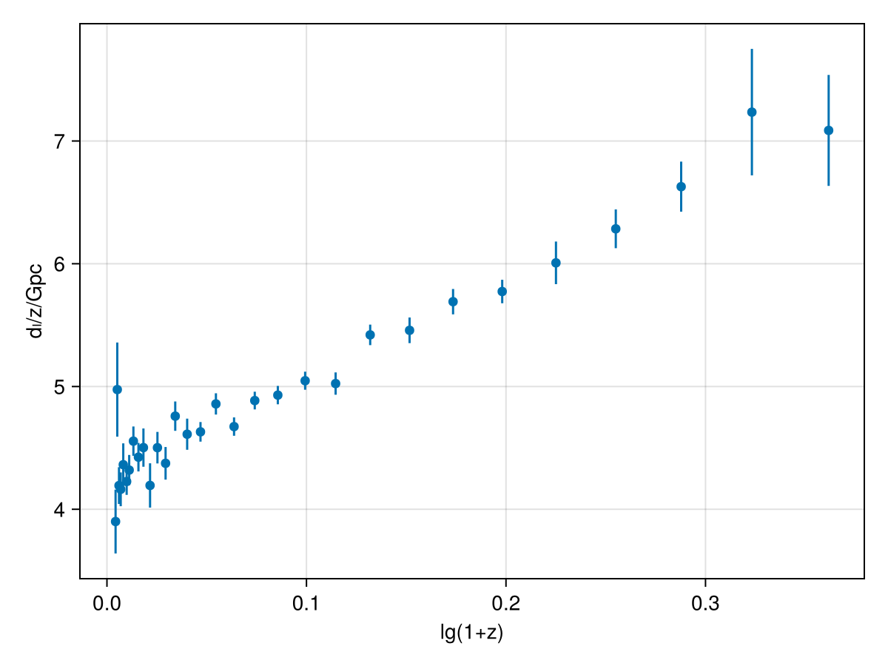
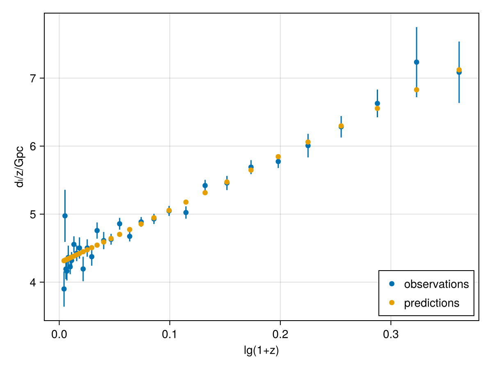
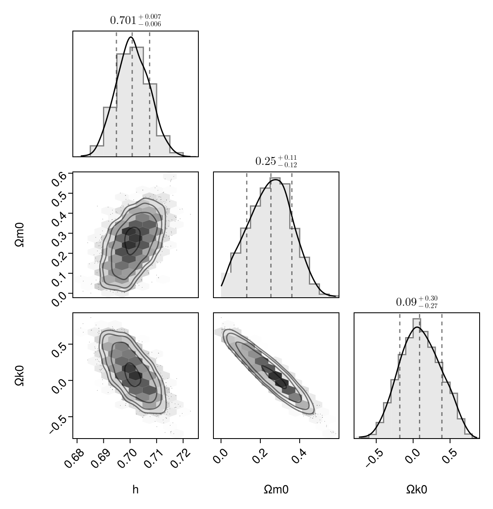

Fitting parameters
This tutorial shows how to perform Bayesian parameter inference on a cosmological model by fitting it to data.
Observed supernova data
We use the data from Betoule+ (2014) of redshifts and luminosity distances of supernovae. Specifically, we use the values and errors in tables F.1 and F.2 (available from the data files data/jla_mub.txt and data/jla_mub_covmatrix.dat):
# TODO: do things properly
# TODO: use full covariance
using LinearAlgebra # TODO: remove after using full covar?
data = [ # https://cmb.wintherscoming.no/data/supernovadata.txt
# z dL/Gpc ΔdL/Gpc
0.010 0.0390 0.0026
0.012 0.0597 0.0046
0.014 0.0587 0.0021
0.016 0.0666 0.0022
0.019 0.0829 0.0033
0.023 0.0972 0.0025
0.026 0.1123 0.0032
0.031 0.1412 0.0037
0.037 0.1637 0.0043
0.043 0.1936 0.0067
0.051 0.2139 0.0092
0.060 0.2701 0.0077
0.070 0.3062 0.0093
0.082 0.3902 0.0098
0.097 0.4473 0.0123
0.114 0.5279 0.0091
0.134 0.6510 0.0116
0.158 0.7384 0.0118
0.186 0.9087 0.0134
0.218 1.0747 0.0163
0.257 1.2971 0.0189
0.302 1.5172 0.0274
0.355 1.9243 0.0297
0.418 2.2813 0.0436
0.491 2.7943 0.0507
0.578 3.3373 0.0552
0.679 4.0789 0.1179
0.799 5.0213 0.1262
0.940 6.2302 0.1917
1.105 7.9947 0.5692
1.300 9.2121 0.5874
]
reverse!(data; dims=1) # make redshift increasing
data = (zs = data[:,1], dLs = data[:,2], ΔdLs = data[:,3], C = Diagonal(data[:,3] .^ 2))
using CairoMakie
fig = Figure()
ax = Axis(fig[1, 1], xlabel = "lg(1+z)", ylabel = "dₗ/z/Gpc")
scatter!(ax, log10.(data.zs.+1), data.dLs ./ data.zs; label = "observations")
errorbars!(ax, log10.(data.zs.+1), data.dLs ./ data.zs, data.ΔdLs ./ data.zs) #, xlabel = "lg(1+z)", ylabel = "dₗ/z/Gpc", label = "observations")
fig
Predicting luminosity distances
To predict luminosity distances
\[d_L = \frac{r}{a} = \chi \, \mathrm{sinc} (\sqrt{k} \chi), \qquad \text{where} \qquad \chi = c \, (t_0 - t)\]
theoretically, we solve the standard ΛCDM model:
using SymBoltz, ModelingToolkit
M = RMΛ(K = SymBoltz.curvature(SymBoltz.metric()))
M = change_independent_variable(M, M.g.a; add_old_diff = true)
prob = CosmologyProblem(M, Dict([M.r.Ω₀, M.m.Ω₀, M.K.Ω₀, M.Λ.Ω₀, M.g.h, M.r.T₀, M.t] .=> [9.3e-5, 0.26, 0.08, 1 - 9.3e-5 - 0.26 - 0.08, 0.7, NaN, 0.0]); pt = false, ivspan = (1e-8, 1e0))
# TODO: use luminosity_distance
function dL(sol::CosmologySolution)
M = sol.prob.M
a = sol[M.g.a]
t = sol[M.t]
t0 = t[end]
χ = t0 .- t
Ωk0 = sol[M.K.Ω₀]
r = sinc.(√(-Ωk0+0im)*χ/π) .* χ |> real # Julia's sinc(x) = sin(π*x) / (π*x)
H0 = SymBoltz.H100 * sol[M.g.h]
dLs = r ./ a * SymBoltz.c / H0 # to meters
return dLs / SymBoltz.Gpc # to Gpc
end
# Show example predictions
as = 1 ./ (data.zs .+ 1)
sol = solve(prob, saveat = as, save_end = true, term = nothing)
dLs = dL(sol)
scatter!(ax, sol[log10(M.g.z+1)], dLs ./ sol[M.g.z]; label = "predictions")
axislegend(ax, position = :rb)
fig
Bayesian inference
To perform bayesian inference, we define a probabilistic model in Turing.jl:
using Turing
@model function supernova(data, probgen; Ωr0 = 9.3e-5, bgopts = (alg = SymBoltz.Tsit5(), reltol = 1e-8, maxiters = 1e3), term = nothing, verbose = false)
# Parameter priors
h ~ Uniform(0.1, 1.0)
Ωm0 ~ Uniform(0.0, 1.0)
Ωk0 ~ Uniform(-1.0, +1.0)
ΩΛ0 = 1 - Ωr0 - Ωm0 - Ωk0
p = [h, Ωr0, Ωm0, Ωk0, ΩΛ0]
prob = probgen(p)
as = 1 ./ (data.zs .+ 1)
sol = solve(prob; bgopts, term, saveat = as, save_end = true)
if !issuccess(sol)
verbose && println("Discarding solution with illegal parameters Ωm0=$Ωm0, Ωk0=$Ωk0")
Turing.@addlogprob! -Inf
return nothing # illegal parameters
end
# Theoretical prediction
dLs = dL(sol)[begin:end-1]
# Compare predictions to data
data.dLs ~ MvNormal(dLs, data.C) # multivariate Gaussian # TODO: full covariance
end
probgen = SymBoltz.parameter_updater(prob, [M.g.h, M.r.Ω₀, M.m.Ω₀, M.K.Ω₀, M.Λ.Ω₀]; build_initializeprob = false)
sn = supernova(data, probgen) # condition model on dataDynamicPPL.Model{typeof(Main.supernova), (:data, :probgen), (:Ωr0, :bgopts, :term, :verbose), (), Tuple{@NamedTuple{zs::Vector{Float64}, dLs::Vector{Float64}, ΔdLs::Vector{Float64}, C::LinearAlgebra.Diagonal{Float64, Vector{Float64}}}, SymBoltz.var"#132#133"{Base.Pairs{Symbol, Bool, Tuple{Symbol}, @NamedTuple{build_initializeprob::Bool}}, PreallocationTools.DiffCache{Vector{Float64}, Vector{Float64}}, SymbolicIndexingInterface.ParameterHookWrapper{SymbolicIndexingInterface.MultipleSetters{Vector{SymbolicIndexingInterface.SetParameterIndex{ModelingToolkit.ParameterIndex{SciMLStructures.Tunable, Int64}}}}, Vector{Symbolics.Num}}, ModelingToolkit.MTKParameters{Vector{Float64}, Vector{Float64}, Tuple{}, Tuple{}, Tuple{}, Tuple{}}, Dict{Any, Any}, Vector{Any}, Base.KeySet{Any, Dict{Any, Any}}, Dict{Any, Any}, SciMLBase.ODEProblem{Vector{Float64}, Tuple{Float64, Float64}, true, ModelingToolkit.MTKParameters{Vector{Float64}, Vector{Float64}, Tuple{}, Tuple{}, Tuple{}, Tuple{}}, SciMLBase.ODEFunction{true, SciMLBase.AutoSpecialize, ModelingToolkit.GeneratedFunctionWrapper{(2, 3, true), RuntimeGeneratedFunctions.RuntimeGeneratedFunction{(:__mtk_arg_1, :___mtkparameters___, :a), ModelingToolkit.var"#_RGF_ModTag", ModelingToolkit.var"#_RGF_ModTag", (0x564c71b0, 0x97b7f8d6, 0x5c2879fb, 0xbfbaf7dc, 0x6e9e83ce), Nothing}, RuntimeGeneratedFunctions.RuntimeGeneratedFunction{(:ˍ₋out, :__mtk_arg_1, :___mtkparameters___, :a), ModelingToolkit.var"#_RGF_ModTag", ModelingToolkit.var"#_RGF_ModTag", (0xbaa1eb82, 0x71862dec, 0xe6d5d3ed, 0xa092092b, 0xab2cc74c), Nothing}}, LinearAlgebra.UniformScaling{Bool}, Nothing, Nothing, Nothing, Nothing, Nothing, Nothing, Nothing, Nothing, Nothing, Nothing, Nothing, ModelingToolkit.ObservedFunctionCache{ModelingToolkit.ODESystem}, Nothing, ModelingToolkit.ODESystem, SciMLBase.OverrideInitData{SciMLBase.NonlinearProblem{Nothing, true, ModelingToolkit.MTKParameters{Vector{Float64}, StaticArraysCore.SizedVector{0, Float64, Vector{Float64}}, Tuple{}, Tuple{}, Tuple{}, Tuple{}}, SciMLBase.NonlinearFunction{true, SciMLBase.FullSpecialize, ModelingToolkit.GeneratedFunctionWrapper{(2, 2, true), RuntimeGeneratedFunctions.RuntimeGeneratedFunction{(:__mtk_arg_1, :___mtkparameters___), ModelingToolkit.var"#_RGF_ModTag", ModelingToolkit.var"#_RGF_ModTag", (0xf233b8ad, 0x1594d16a, 0x1c3f12f8, 0x76a642ff, 0xf9f8246c), Nothing}, RuntimeGeneratedFunctions.RuntimeGeneratedFunction{(:ˍ₋out, :__mtk_arg_1, :___mtkparameters___), ModelingToolkit.var"#_RGF_ModTag", ModelingToolkit.var"#_RGF_ModTag", (0xb377278d, 0x38406f47, 0x24956495, 0xd237bff1, 0x6eca1b8b), Nothing}}, LinearAlgebra.UniformScaling{Bool}, Nothing, Nothing, Nothing, Nothing, Nothing, Nothing, Nothing, Nothing, Nothing, Nothing, ModelingToolkit.ObservedFunctionCache{ModelingToolkit.NonlinearSystem}, Nothing, ModelingToolkit.NonlinearSystem, Nothing, Nothing}, Base.Pairs{Symbol, Union{}, Tuple{}, @NamedTuple{}}, ModelingToolkit.InitializationSystemMetadata}, ModelingToolkit.UpdateInitializeprob{SymbolicIndexingInterface.MultipleGetters{SymbolicIndexingInterface.ContinuousTimeseries, Vector{SymbolicIndexingInterface.AbstractGetIndexer}}, SymbolicIndexingInterface.MultipleSetters{Vector{SymbolicIndexingInterface.ParameterHookWrapper{SymbolicIndexingInterface.SetParameterIndex{ModelingToolkit.ParameterIndex{SciMLStructures.Tunable, Int64}}, SymbolicUtils.BasicSymbolic{Real}}}}}, ComposedFunction{typeof(identity), SymbolicIndexingInterface.TimeIndependentObservedFunction{ModelingToolkit.GeneratedFunctionWrapper{(2, 2, true), RuntimeGeneratedFunctions.RuntimeGeneratedFunction{(:__mtk_arg_1, :___mtkparameters___), ModelingToolkit.var"#_RGF_ModTag", ModelingToolkit.var"#_RGF_ModTag", (0x7ac26210, 0xd2eb7bbc, 0x0a62ffd1, 0x561d21bc, 0x66bf5f10), Nothing}, RuntimeGeneratedFunctions.RuntimeGeneratedFunction{(:ˍ₋out, :__mtk_arg_1, :___mtkparameters___), ModelingToolkit.var"#_RGF_ModTag", ModelingToolkit.var"#_RGF_ModTag", (0x5e51b563, 0x48165a49, 0xebb22448, 0x98d76aa4, 0x4b8c8482), Nothing}}}}, Nothing}, Nothing}, Base.Pairs{Symbol, Union{}, Tuple{}, @NamedTuple{}}, SciMLBase.StandardODEProblem}, ModelingToolkit.ODESystem}}, Tuple{Float64, @NamedTuple{alg::OrdinaryDiffEqTsit5.Tsit5{typeof(OrdinaryDiffEqCore.trivial_limiter!), typeof(OrdinaryDiffEqCore.trivial_limiter!), Static.False}, reltol::Float64, maxiters::Float64}, Nothing, Bool}, DynamicPPL.DefaultContext}(Main.supernova, (data = (zs = [1.3, 1.105, 0.94, 0.799, 0.679, 0.578, 0.491, 0.418, 0.355, 0.302 … 0.043, 0.037, 0.031, 0.026, 0.023, 0.019, 0.016, 0.014, 0.012, 0.01], dLs = [9.2121, 7.9947, 6.2302, 5.0213, 4.0789, 3.3373, 2.7943, 2.2813, 1.9243, 1.5172 … 0.1936, 0.1637, 0.1412, 0.1123, 0.0972, 0.0829, 0.0666, 0.0587, 0.0597, 0.039], ΔdLs = [0.5874, 0.5692, 0.1917, 0.1262, 0.1179, 0.0552, 0.0507, 0.0436, 0.0297, 0.0274 … 0.0067, 0.0043, 0.0037, 0.0032, 0.0025, 0.0033, 0.0022, 0.0021, 0.0046, 0.0026], C = [0.34503876000000006 0.0 … 0.0 0.0; 0.0 0.32398864000000005 … 0.0 0.0; … ; 0.0 0.0 … 2.116e-5 0.0; 0.0 0.0 … 0.0 6.76e-6]), probgen = SymBoltz.var"#132#133"{Base.Pairs{Symbol, Bool, Tuple{Symbol}, @NamedTuple{build_initializeprob::Bool}}, PreallocationTools.DiffCache{Vector{Float64}, Vector{Float64}}, SymbolicIndexingInterface.ParameterHookWrapper{SymbolicIndexingInterface.MultipleSetters{Vector{SymbolicIndexingInterface.SetParameterIndex{ModelingToolkit.ParameterIndex{SciMLStructures.Tunable, Int64}}}}, Vector{Symbolics.Num}}, ModelingToolkit.MTKParameters{Vector{Float64}, Vector{Float64}, Tuple{}, Tuple{}, Tuple{}, Tuple{}}, Dict{Any, Any}, Vector{Any}, Base.KeySet{Any, Dict{Any, Any}}, Dict{Any, Any}, SciMLBase.ODEProblem{Vector{Float64}, Tuple{Float64, Float64}, true, ModelingToolkit.MTKParameters{Vector{Float64}, Vector{Float64}, Tuple{}, Tuple{}, Tuple{}, Tuple{}}, SciMLBase.ODEFunction{true, SciMLBase.AutoSpecialize, ModelingToolkit.GeneratedFunctionWrapper{(2, 3, true), RuntimeGeneratedFunctions.RuntimeGeneratedFunction{(:__mtk_arg_1, :___mtkparameters___, :a), ModelingToolkit.var"#_RGF_ModTag", ModelingToolkit.var"#_RGF_ModTag", (0x564c71b0, 0x97b7f8d6, 0x5c2879fb, 0xbfbaf7dc, 0x6e9e83ce), Nothing}, RuntimeGeneratedFunctions.RuntimeGeneratedFunction{(:ˍ₋out, :__mtk_arg_1, :___mtkparameters___, :a), ModelingToolkit.var"#_RGF_ModTag", ModelingToolkit.var"#_RGF_ModTag", (0xbaa1eb82, 0x71862dec, 0xe6d5d3ed, 0xa092092b, 0xab2cc74c), Nothing}}, LinearAlgebra.UniformScaling{Bool}, Nothing, Nothing, Nothing, Nothing, Nothing, Nothing, Nothing, Nothing, Nothing, Nothing, Nothing, ModelingToolkit.ObservedFunctionCache{ModelingToolkit.ODESystem}, Nothing, ModelingToolkit.ODESystem, SciMLBase.OverrideInitData{SciMLBase.NonlinearProblem{Nothing, true, ModelingToolkit.MTKParameters{Vector{Float64}, StaticArraysCore.SizedVector{0, Float64, Vector{Float64}}, Tuple{}, Tuple{}, Tuple{}, Tuple{}}, SciMLBase.NonlinearFunction{true, SciMLBase.FullSpecialize, ModelingToolkit.GeneratedFunctionWrapper{(2, 2, true), RuntimeGeneratedFunctions.RuntimeGeneratedFunction{(:__mtk_arg_1, :___mtkparameters___), ModelingToolkit.var"#_RGF_ModTag", ModelingToolkit.var"#_RGF_ModTag", (0xf233b8ad, 0x1594d16a, 0x1c3f12f8, 0x76a642ff, 0xf9f8246c), Nothing}, RuntimeGeneratedFunctions.RuntimeGeneratedFunction{(:ˍ₋out, :__mtk_arg_1, :___mtkparameters___), ModelingToolkit.var"#_RGF_ModTag", ModelingToolkit.var"#_RGF_ModTag", (0xb377278d, 0x38406f47, 0x24956495, 0xd237bff1, 0x6eca1b8b), Nothing}}, LinearAlgebra.UniformScaling{Bool}, Nothing, Nothing, Nothing, Nothing, Nothing, Nothing, Nothing, Nothing, Nothing, Nothing, ModelingToolkit.ObservedFunctionCache{ModelingToolkit.NonlinearSystem}, Nothing, ModelingToolkit.NonlinearSystem, Nothing, Nothing}, Base.Pairs{Symbol, Union{}, Tuple{}, @NamedTuple{}}, ModelingToolkit.InitializationSystemMetadata}, ModelingToolkit.UpdateInitializeprob{SymbolicIndexingInterface.MultipleGetters{SymbolicIndexingInterface.ContinuousTimeseries, Vector{SymbolicIndexingInterface.AbstractGetIndexer}}, SymbolicIndexingInterface.MultipleSetters{Vector{SymbolicIndexingInterface.ParameterHookWrapper{SymbolicIndexingInterface.SetParameterIndex{ModelingToolkit.ParameterIndex{SciMLStructures.Tunable, Int64}}, SymbolicUtils.BasicSymbolic{Real}}}}}, ComposedFunction{typeof(identity), SymbolicIndexingInterface.TimeIndependentObservedFunction{ModelingToolkit.GeneratedFunctionWrapper{(2, 2, true), RuntimeGeneratedFunctions.RuntimeGeneratedFunction{(:__mtk_arg_1, :___mtkparameters___), ModelingToolkit.var"#_RGF_ModTag", ModelingToolkit.var"#_RGF_ModTag", (0x7ac26210, 0xd2eb7bbc, 0x0a62ffd1, 0x561d21bc, 0x66bf5f10), Nothing}, RuntimeGeneratedFunctions.RuntimeGeneratedFunction{(:ˍ₋out, :__mtk_arg_1, :___mtkparameters___), ModelingToolkit.var"#_RGF_ModTag", ModelingToolkit.var"#_RGF_ModTag", (0x5e51b563, 0x48165a49, 0xebb22448, 0x98d76aa4, 0x4b8c8482), Nothing}}}}, Nothing}, Nothing}, Base.Pairs{Symbol, Union{}, Tuple{}, @NamedTuple{}}, SciMLBase.StandardODEProblem}, ModelingToolkit.ODESystem}(Base.Pairs{Symbol, Bool, Tuple{Symbol}, @NamedTuple{build_initializeprob::Bool}}(:build_initializeprob => 0), PreallocationTools.DiffCache{Vector{Float64}, Vector{Float64}}([1.0, 0.08, NaN, NaN, 0.26, 0.7, 0.0, 9.3e-5, 0.659907], [0.0, 0.0, 0.0, 0.0, 0.0, 0.0, 0.0, 0.0, 0.0, 0.0 … 0.0, 0.0, 0.0, 0.0, 0.0, 0.0, 0.0, 0.0, 0.0, 0.0], Any[]), SymbolicIndexingInterface.ParameterHookWrapper{SymbolicIndexingInterface.MultipleSetters{Vector{SymbolicIndexingInterface.SetParameterIndex{ModelingToolkit.ParameterIndex{SciMLStructures.Tunable, Int64}}}}, Vector{Symbolics.Num}}(SymbolicIndexingInterface.MultipleSetters{Vector{SymbolicIndexingInterface.SetParameterIndex{ModelingToolkit.ParameterIndex{SciMLStructures.Tunable, Int64}}}}(SymbolicIndexingInterface.SetParameterIndex{ModelingToolkit.ParameterIndex{SciMLStructures.Tunable, Int64}}[SymbolicIndexingInterface.SetParameterIndex{ModelingToolkit.ParameterIndex{SciMLStructures.Tunable, Int64}}(ModelingToolkit.ParameterIndex{SciMLStructures.Tunable, Int64}(SciMLStructures.Tunable(), 6, false)), SymbolicIndexingInterface.SetParameterIndex{ModelingToolkit.ParameterIndex{SciMLStructures.Tunable, Int64}}(ModelingToolkit.ParameterIndex{SciMLStructures.Tunable, Int64}(SciMLStructures.Tunable(), 8, false)), SymbolicIndexingInterface.SetParameterIndex{ModelingToolkit.ParameterIndex{SciMLStructures.Tunable, Int64}}(ModelingToolkit.ParameterIndex{SciMLStructures.Tunable, Int64}(SciMLStructures.Tunable(), 5, false)), SymbolicIndexingInterface.SetParameterIndex{ModelingToolkit.ParameterIndex{SciMLStructures.Tunable, Int64}}(ModelingToolkit.ParameterIndex{SciMLStructures.Tunable, Int64}(SciMLStructures.Tunable(), 2, false)), SymbolicIndexingInterface.SetParameterIndex{ModelingToolkit.ParameterIndex{SciMLStructures.Tunable, Int64}}(ModelingToolkit.ParameterIndex{SciMLStructures.Tunable, Int64}(SciMLStructures.Tunable(), 9, false))]), Symbolics.Num[h, r₊Ω₀, m₊Ω₀, K₊Ω₀, Λ₊Ω₀]), ModelingToolkit.MTKParameters{Vector{Float64}, Vector{Float64}, Tuple{}, Tuple{}, Tuple{}, Tuple{}}([1.0, 0.08, NaN, NaN, 0.26, 0.7, 0.0, 9.3e-5, 0.659907], [0.0, 0.0, 0.0, 0.0, 0.0, 0.0, 0.0, -0.3333333333333333, 0.0, 0.0 … 0.0, 0.0, 0.0, 0.0, 0.0, 0.0, 0.0, 0.0, 0.0, 0.0], (), (), (), ()), Dict{Any, Any}(), Any[], Any[], Dict{Any, Any}(K₊Ω₀ => 0.08, r₊T₀ => NaN, t(a) => 0.0, m₊Ω₀ => 0.26, h => 0.7, r₊Ω₀ => 9.3e-5, Λ₊Ω₀ => 0.659907), SciMLBase.ODEProblem{Vector{Float64}, Tuple{Float64, Float64}, true, ModelingToolkit.MTKParameters{Vector{Float64}, Vector{Float64}, Tuple{}, Tuple{}, Tuple{}, Tuple{}}, SciMLBase.ODEFunction{true, SciMLBase.AutoSpecialize, ModelingToolkit.GeneratedFunctionWrapper{(2, 3, true), RuntimeGeneratedFunctions.RuntimeGeneratedFunction{(:__mtk_arg_1, :___mtkparameters___, :a), ModelingToolkit.var"#_RGF_ModTag", ModelingToolkit.var"#_RGF_ModTag", (0x564c71b0, 0x97b7f8d6, 0x5c2879fb, 0xbfbaf7dc, 0x6e9e83ce), Nothing}, RuntimeGeneratedFunctions.RuntimeGeneratedFunction{(:ˍ₋out, :__mtk_arg_1, :___mtkparameters___, :a), ModelingToolkit.var"#_RGF_ModTag", ModelingToolkit.var"#_RGF_ModTag", (0xbaa1eb82, 0x71862dec, 0xe6d5d3ed, 0xa092092b, 0xab2cc74c), Nothing}}, LinearAlgebra.UniformScaling{Bool}, Nothing, Nothing, Nothing, Nothing, Nothing, Nothing, Nothing, Nothing, Nothing, Nothing, Nothing, ModelingToolkit.ObservedFunctionCache{ModelingToolkit.ODESystem}, Nothing, ModelingToolkit.ODESystem, SciMLBase.OverrideInitData{SciMLBase.NonlinearProblem{Nothing, true, ModelingToolkit.MTKParameters{Vector{Float64}, StaticArraysCore.SizedVector{0, Float64, Vector{Float64}}, Tuple{}, Tuple{}, Tuple{}, Tuple{}}, SciMLBase.NonlinearFunction{true, SciMLBase.FullSpecialize, ModelingToolkit.GeneratedFunctionWrapper{(2, 2, true), RuntimeGeneratedFunctions.RuntimeGeneratedFunction{(:__mtk_arg_1, :___mtkparameters___), ModelingToolkit.var"#_RGF_ModTag", ModelingToolkit.var"#_RGF_ModTag", (0xf233b8ad, 0x1594d16a, 0x1c3f12f8, 0x76a642ff, 0xf9f8246c), Nothing}, RuntimeGeneratedFunctions.RuntimeGeneratedFunction{(:ˍ₋out, :__mtk_arg_1, :___mtkparameters___), ModelingToolkit.var"#_RGF_ModTag", ModelingToolkit.var"#_RGF_ModTag", (0xb377278d, 0x38406f47, 0x24956495, 0xd237bff1, 0x6eca1b8b), Nothing}}, LinearAlgebra.UniformScaling{Bool}, Nothing, Nothing, Nothing, Nothing, Nothing, Nothing, Nothing, Nothing, Nothing, Nothing, ModelingToolkit.ObservedFunctionCache{ModelingToolkit.NonlinearSystem}, Nothing, ModelingToolkit.NonlinearSystem, Nothing, Nothing}, Base.Pairs{Symbol, Union{}, Tuple{}, @NamedTuple{}}, ModelingToolkit.InitializationSystemMetadata}, ModelingToolkit.UpdateInitializeprob{SymbolicIndexingInterface.MultipleGetters{SymbolicIndexingInterface.ContinuousTimeseries, Vector{SymbolicIndexingInterface.AbstractGetIndexer}}, SymbolicIndexingInterface.MultipleSetters{Vector{SymbolicIndexingInterface.ParameterHookWrapper{SymbolicIndexingInterface.SetParameterIndex{ModelingToolkit.ParameterIndex{SciMLStructures.Tunable, Int64}}, SymbolicUtils.BasicSymbolic{Real}}}}}, ComposedFunction{typeof(identity), SymbolicIndexingInterface.TimeIndependentObservedFunction{ModelingToolkit.GeneratedFunctionWrapper{(2, 2, true), RuntimeGeneratedFunctions.RuntimeGeneratedFunction{(:__mtk_arg_1, :___mtkparameters___), ModelingToolkit.var"#_RGF_ModTag", ModelingToolkit.var"#_RGF_ModTag", (0x7ac26210, 0xd2eb7bbc, 0x0a62ffd1, 0x561d21bc, 0x66bf5f10), Nothing}, RuntimeGeneratedFunctions.RuntimeGeneratedFunction{(:ˍ₋out, :__mtk_arg_1, :___mtkparameters___), ModelingToolkit.var"#_RGF_ModTag", ModelingToolkit.var"#_RGF_ModTag", (0x5e51b563, 0x48165a49, 0xebb22448, 0x98d76aa4, 0x4b8c8482), Nothing}}}}, Nothing}, Nothing}, Base.Pairs{Symbol, Union{}, Tuple{}, @NamedTuple{}}, SciMLBase.StandardODEProblem}(SciMLBase.ODEFunction{true, SciMLBase.AutoSpecialize, ModelingToolkit.GeneratedFunctionWrapper{(2, 3, true), RuntimeGeneratedFunctions.RuntimeGeneratedFunction{(:__mtk_arg_1, :___mtkparameters___, :a), ModelingToolkit.var"#_RGF_ModTag", ModelingToolkit.var"#_RGF_ModTag", (0x564c71b0, 0x97b7f8d6, 0x5c2879fb, 0xbfbaf7dc, 0x6e9e83ce), Nothing}, RuntimeGeneratedFunctions.RuntimeGeneratedFunction{(:ˍ₋out, :__mtk_arg_1, :___mtkparameters___, :a), ModelingToolkit.var"#_RGF_ModTag", ModelingToolkit.var"#_RGF_ModTag", (0xbaa1eb82, 0x71862dec, 0xe6d5d3ed, 0xa092092b, 0xab2cc74c), Nothing}}, LinearAlgebra.UniformScaling{Bool}, Nothing, Nothing, Nothing, Nothing, Nothing, Nothing, Nothing, Nothing, Nothing, Nothing, Nothing, ModelingToolkit.ObservedFunctionCache{ModelingToolkit.ODESystem}, Nothing, ModelingToolkit.ODESystem, SciMLBase.OverrideInitData{SciMLBase.NonlinearProblem{Nothing, true, ModelingToolkit.MTKParameters{Vector{Float64}, StaticArraysCore.SizedVector{0, Float64, Vector{Float64}}, Tuple{}, Tuple{}, Tuple{}, Tuple{}}, SciMLBase.NonlinearFunction{true, SciMLBase.FullSpecialize, ModelingToolkit.GeneratedFunctionWrapper{(2, 2, true), RuntimeGeneratedFunctions.RuntimeGeneratedFunction{(:__mtk_arg_1, :___mtkparameters___), ModelingToolkit.var"#_RGF_ModTag", ModelingToolkit.var"#_RGF_ModTag", (0xf233b8ad, 0x1594d16a, 0x1c3f12f8, 0x76a642ff, 0xf9f8246c), Nothing}, RuntimeGeneratedFunctions.RuntimeGeneratedFunction{(:ˍ₋out, :__mtk_arg_1, :___mtkparameters___), ModelingToolkit.var"#_RGF_ModTag", ModelingToolkit.var"#_RGF_ModTag", (0xb377278d, 0x38406f47, 0x24956495, 0xd237bff1, 0x6eca1b8b), Nothing}}, LinearAlgebra.UniformScaling{Bool}, Nothing, Nothing, Nothing, Nothing, Nothing, Nothing, Nothing, Nothing, Nothing, Nothing, ModelingToolkit.ObservedFunctionCache{ModelingToolkit.NonlinearSystem}, Nothing, ModelingToolkit.NonlinearSystem, Nothing, Nothing}, Base.Pairs{Symbol, Union{}, Tuple{}, @NamedTuple{}}, ModelingToolkit.InitializationSystemMetadata}, ModelingToolkit.UpdateInitializeprob{SymbolicIndexingInterface.MultipleGetters{SymbolicIndexingInterface.ContinuousTimeseries, Vector{SymbolicIndexingInterface.AbstractGetIndexer}}, SymbolicIndexingInterface.MultipleSetters{Vector{SymbolicIndexingInterface.ParameterHookWrapper{SymbolicIndexingInterface.SetParameterIndex{ModelingToolkit.ParameterIndex{SciMLStructures.Tunable, Int64}}, SymbolicUtils.BasicSymbolic{Real}}}}}, ComposedFunction{typeof(identity), SymbolicIndexingInterface.TimeIndependentObservedFunction{ModelingToolkit.GeneratedFunctionWrapper{(2, 2, true), RuntimeGeneratedFunctions.RuntimeGeneratedFunction{(:__mtk_arg_1, :___mtkparameters___), ModelingToolkit.var"#_RGF_ModTag", ModelingToolkit.var"#_RGF_ModTag", (0x7ac26210, 0xd2eb7bbc, 0x0a62ffd1, 0x561d21bc, 0x66bf5f10), Nothing}, RuntimeGeneratedFunctions.RuntimeGeneratedFunction{(:ˍ₋out, :__mtk_arg_1, :___mtkparameters___), ModelingToolkit.var"#_RGF_ModTag", ModelingToolkit.var"#_RGF_ModTag", (0x5e51b563, 0x48165a49, 0xebb22448, 0x98d76aa4, 0x4b8c8482), Nothing}}}}, Nothing}, Nothing}(ModelingToolkit.GeneratedFunctionWrapper{(2, 3, true), RuntimeGeneratedFunctions.RuntimeGeneratedFunction{(:__mtk_arg_1, :___mtkparameters___, :a), ModelingToolkit.var"#_RGF_ModTag", ModelingToolkit.var"#_RGF_ModTag", (0x564c71b0, 0x97b7f8d6, 0x5c2879fb, 0xbfbaf7dc, 0x6e9e83ce), Nothing}, RuntimeGeneratedFunctions.RuntimeGeneratedFunction{(:ˍ₋out, :__mtk_arg_1, :___mtkparameters___, :a), ModelingToolkit.var"#_RGF_ModTag", ModelingToolkit.var"#_RGF_ModTag", (0xbaa1eb82, 0x71862dec, 0xe6d5d3ed, 0xa092092b, 0xab2cc74c), Nothing}}(RuntimeGeneratedFunctions.RuntimeGeneratedFunction{(:__mtk_arg_1, :___mtkparameters___, :a), ModelingToolkit.var"#_RGF_ModTag", ModelingToolkit.var"#_RGF_ModTag", (0x564c71b0, 0x97b7f8d6, 0x5c2879fb, 0xbfbaf7dc, 0x6e9e83ce), Nothing}(nothing), RuntimeGeneratedFunctions.RuntimeGeneratedFunction{(:ˍ₋out, :__mtk_arg_1, :___mtkparameters___, :a), ModelingToolkit.var"#_RGF_ModTag", ModelingToolkit.var"#_RGF_ModTag", (0xbaa1eb82, 0x71862dec, 0xe6d5d3ed, 0xa092092b, 0xab2cc74c), Nothing}(nothing)), LinearAlgebra.UniformScaling{Bool}(true), nothing, nothing, nothing, nothing, nothing, nothing, nothing, nothing, nothing, nothing, nothing, ModelingToolkit.ObservedFunctionCache{ModelingToolkit.ODESystem}(ModelingToolkit.ODESystem(0x0000000000000449, Symbolics.Equation[Differential(a)(t(a)) ~ 1 / aˍt(a)], a, Any[t(a)], Any[ϵ, K₊Ω₀, k, r₊T₀, m₊Ω₀, h, G₊Δfac, r₊Ω₀, Λ₊Ω₀, Initial(Λ₊Ω(a)) … Initial(aˍt(a)), Initial(z(a)), Initial(Λ₊P(a)), Initial(G₊P(a)), Initial(K₊σ(a)), Initial(zˍa(a)), Initial(Λ₊wˍa(a)), Initial(r₊P(a)), Initial(G₊ρˍa(a)), Initial(r₊wˍa(a))], nothing, Dict{Any, Any}(:Λ₊Ω => Λ₊Ω(a), :m₊θinteraction => m₊θinteraction(a), :Λ₊θ => Λ₊θ(a), :G₊δρ => G₊δρ(a), :G₊Δfac => G₊Δfac, :m₊σ => m₊σ(a), :m₊θ => m₊θ(a), :m₊u => m₊u(a), :ℋ => ℋ(a), :G₊Δ => G₊Δ(a)…), Any[], Symbolics.Equation[m₊w(a) ~ 0.0, K₊ρ(a) ~ (3K₊Ω₀) / (25.132741228718345(a^2)), r₊w(a) ~ 1//3, Λ₊w(a) ~ -1//1, K₊w(a) ~ -1//3, z(a) ~ -1 + 1 / a, zˍa(a) ~ -1 / (a^2), g₁₁(a) ~ -(a^2), g₂₂(a) ~ a^2, m₊wˍa(a) ~ 0.0 … G₊ρˍa(a) ~ K₊ρˍa(a) + Λ₊ρˍa(a) + m₊ρˍa(a) + r₊ρˍa(a), aˍt(a) ~ sqrt(8.377580409572781(a^4)*G₊ρ(a)), G₊P(a) ~ Λ₊P(a) + K₊P(a) + r₊P(a) + m₊P(a), aˍta(a) ~ (33.510321638291124(a^3)*G₊ρ(a) + 8.377580409572781(a^4)*G₊ρˍa(a)) / (2sqrt(8.377580409572781(a^4)*G₊ρ(a))), ż(a) ~ aˍt(a)*zˍa(a), ℰ(a) ~ aˍt(a) / a, G₊Δ(a) ~ (-(aˍt(a)^2)*G₊ρ(a) + 3(aˍt(a)^2)*G₊P(a) + 2a*aˍt(a)*G₊ρ(a)*aˍta(a)) / (2a*G₊ρ(a)), E(a) ~ ℰ(a) / a, ℋ(a) ~ 3.240779289444365e-18h*ℰ(a), H(a) ~ 3.240779289444365e-18h*E(a)], nothing, Base.RefValue{Vector{Symbolics.Num}}(Symbolics.Num[]), Base.RefValue{Any}(Matrix{Symbolics.Num}(undef, 0, 0)), Base.RefValue{Any}(Matrix{Symbolics.Num}(undef, 0, 0)), Base.RefValue{Matrix{Symbolics.Num}}(Matrix{Symbolics.Num}(undef, 0, 0)), Base.RefValue{Matrix{Symbolics.Num}}(Matrix{Symbolics.Num}(undef, 0, 0)), :RMΛ, "", ModelingToolkit.ODESystem[], Dict{Any, Any}(Initial(Λ₊Ω(a)) => 0, Initial(Λ₊ρ(a)) => 0, Initial(r₊u̇(a)) => 0, Initial(G₊Δ(a)) => 0, Initial(aˍta(a)) => 0, Initial(ℰ(a)) => 0, Initial(Λ₊θinteraction(a)) => 0, Initial(Λ₊u̇(a)) => 0, Initial(r₊T(a)) => 0, Initial(K₊cₛ²(a)) => 0…), Dict{Any, Any}(G₊ρ(a) => 0.1, aˍt(a) => 1.0), nothing, nothing, Symbolics.Equation[], ModelingToolkit.Schedule(Union{ModelingToolkit.BipartiteGraphs.Unassigned, ModelingToolkit.StructuralTransformations.SelectedState, Int64}[3, 34, 36, ModelingToolkit.StructuralTransformations.SelectedState(), 4, 12, 32, 1, 17, 24 … 30, 33, 43, 35, 38, 41, 40, 37, 39, 42], Dict{Any, Any}(Differential(a)(Λ₊w(a)) => Λ₊wˍa(a), Differential(a)(r₊w(a)) => r₊wˍa(a), Differential(a)(aˍt(a)) => aˍta(a), Differential(a)(z(a)) => zˍa(a), Differential(a)(r₊ρ(a)) => r₊ρˍa(a), Differential(a)(m₊w(a)) => m₊wˍa(a), Differential(a)(Λ₊ρ(a)) => Λ₊ρˍa(a), Differential(a)(m₊ρ(a)) => m₊ρˍa(a), Differential(a)(t(a)) => 1 / aˍt(a), Differential(a)(G₊ρ(a)) => G₊ρˍa(a)…)), nothing, nothing, ModelingToolkit.SymbolicContinuousCallback[], ModelingToolkit.SymbolicDiscreteCallback[], Symbolics.Equation[], Dict{SymbolicUtils.BasicSymbolic, String}(), nothing, nothing, false, Any[], TearingState of ModelingToolkit.ODESystem, ModelingToolkit.Substitutions(Symbolics.Equation[m₊w(a) ~ 0.0, K₊ρ(a) ~ (3K₊Ω₀) / (25.132741228718345(a^2)), r₊w(a) ~ 1//3, Λ₊w(a) ~ -1//1, K₊w(a) ~ -1//3, z(a) ~ -1 + 1 / a, zˍa(a) ~ -1 / (a^2), g₁₁(a) ~ -(a^2), g₂₂(a) ~ a^2, m₊wˍa(a) ~ 0.0 … G₊ρˍa(a) ~ K₊ρˍa(a) + Λ₊ρˍa(a) + m₊ρˍa(a) + r₊ρˍa(a), aˍt(a) ~ sqrt(8.377580409572781(a^4)*G₊ρ(a)), G₊P(a) ~ Λ₊P(a) + K₊P(a) + r₊P(a) + m₊P(a), aˍta(a) ~ (33.510321638291124(a^3)*G₊ρ(a) + 8.377580409572781(a^4)*G₊ρˍa(a)) / (2sqrt(8.377580409572781(a^4)*G₊ρ(a))), ż(a) ~ aˍt(a)*zˍa(a), ℰ(a) ~ aˍt(a) / a, G₊Δ(a) ~ (-(aˍt(a)^2)*G₊ρ(a) + 3(aˍt(a)^2)*G₊P(a) + 2a*aˍt(a)*G₊ρ(a)*aˍta(a)) / (2a*G₊ρ(a)), E(a) ~ ℰ(a) / a, ℋ(a) ~ 3.240779289444365e-18h*ℰ(a), H(a) ~ 3.240779289444365e-18h*E(a)], [Int64[], [1], [1, 2], [1, 2, 3], [1, 2, 3, 4], [1, 2, 3, 4, 5], [1, 2, 3, 4, 5, 6], [1, 2, 3, 4, 5, 6, 7], [1, 2, 3, 4, 5, 6, 7, 8], [1, 2, 3, 4, 5, 6, 7, 8, 9] … [1, 2, 3, 4, 5, 6, 7, 8, 9, 10 … 23, 24, 25, 26, 27, 28, 29, 30, 31, 32], [1, 2, 3, 4, 5, 6, 7, 8, 9, 10 … 24, 25, 26, 27, 28, 29, 30, 31, 32, 33], [1, 2, 3, 4, 5, 6, 7, 8, 9, 10 … 25, 26, 27, 28, 29, 30, 31, 32, 33, 34], [1, 2, 3, 4, 5, 6, 7, 8, 9, 10 … 26, 27, 28, 29, 30, 31, 32, 33, 34, 35], [1, 2, 3, 4, 5, 6, 7, 8, 9, 10 … 27, 28, 29, 30, 31, 32, 33, 34, 35, 36], [1, 2, 3, 4, 5, 6, 7, 8, 9, 10 … 28, 29, 30, 31, 32, 33, 34, 35, 36, 37], [1, 2, 3, 4, 5, 6, 7, 8, 9, 10 … 29, 30, 31, 32, 33, 34, 35, 36, 37, 38], [1, 2, 3, 4, 5, 6, 7, 8, 9, 10 … 30, 31, 32, 33, 34, 35, 36, 37, 38, 39], [1, 2, 3, 4, 5, 6, 7, 8, 9, 10 … 31, 32, 33, 34, 35, 36, 37, 38, 39, 40], [1, 2, 3, 4, 5, 6, 7, 8, 9, 10 … 32, 33, 34, 35, 36, 37, 38, 39, 40, 41]], nothing), true, ModelingToolkit.IndexCache(Dict{SymbolicUtils.BasicSymbolic, Union{Int64, AbstractArray{Int64}}}(t(a) => 1), Dict{Union{SymbolicUtils.BasicSymbolic, Symbolics.CallWithMetadata}, ModelingToolkit.DiscreteIndex}(), Dict{Any, Vector{Int64}}(), Dict{SymbolicUtils.BasicSymbolic, Union{UnitRange{Int64}, Int64, Base.ReshapedArray{Int64, N, UnitRange{Int64}} where N}}(ϵ => 1, K₊Ω₀ => 2, k => 3, r₊T₀ => 4, m₊Ω₀ => 5, h => 6, G₊Δfac => 7, r₊Ω₀ => 8, Λ₊Ω₀ => 9), Dict{SymbolicUtils.BasicSymbolic, Union{UnitRange{Int64}, Int64, Base.ReshapedArray{Int64, N, UnitRange{Int64}} where N}}(Initial(Λ₊Ω(a)) => 1, Initial(Λ₊ρ(a)) => 2, Initial(G₊Δ(a)) => 3, Initial(aˍta(a)) => 4, Initial(ℰ(a)) => 5, Initial(r₊T(a)) => 6, Initial(K₊cₛ²(a)) => 7, Initial(K₊w(a)) => 8, Initial(r₊ρ(a)) => 9, Initial(m₊wˍa(a)) => 10…), Dict{SymbolicUtils.BasicSymbolic, Tuple{Int64, Int64}}(), Dict{Union{SymbolicUtils.BasicSymbolic, Symbolics.CallWithMetadata}, Tuple{Int64, Int64}}(), Dict{SymbolicUtils.BasicSymbolic, Set{Union{SymbolicIndexingInterface.ContinuousTimeseries, Int64}}}(RMΛ₊m₊wˍa(a) => Set([SymbolicIndexingInterface.ContinuousTimeseries()]), z(a) => Set([SymbolicIndexingInterface.ContinuousTimeseries()]), RMΛ₊Λ₊P(a) => Set([SymbolicIndexingInterface.ContinuousTimeseries()]), RMΛ₊Λ₊w(a) => Set([SymbolicIndexingInterface.ContinuousTimeseries()]), RMΛ₊m₊ρ(a) => Set([SymbolicIndexingInterface.ContinuousTimeseries()]), RMΛ₊r₊ρ(a) => Set([SymbolicIndexingInterface.ContinuousTimeseries()]), RMΛ₊G₊ρˍa(a) => Set([SymbolicIndexingInterface.ContinuousTimeseries()]), m₊ρˍa(a) => Set([SymbolicIndexingInterface.ContinuousTimeseries()]), Λ₊P(a) => Set([SymbolicIndexingInterface.ContinuousTimeseries()]), RMΛ₊Λ₊ρˍa(a) => Set([SymbolicIndexingInterface.ContinuousTimeseries()])…), Dict{Union{SymbolicUtils.BasicSymbolic, Symbolics.CallWithMetadata}, Set{Union{SymbolicIndexingInterface.ContinuousTimeseries, Int64}}}(), Vector{ModelingToolkit.BufferTemplate}[], ModelingToolkit.BufferTemplate(Real, 9), ModelingToolkit.BufferTemplate(Real, 43), ModelingToolkit.BufferTemplate[], ModelingToolkit.BufferTemplate[], Dict{Symbol, Union{SymbolicUtils.BasicSymbolic, Symbolics.CallWithMetadata}}(:Λ₊Ω => Λ₊Ω(a), :RMΛ₊r₊w => RMΛ₊r₊w(a), :RMΛ₊K₊cₛ² => RMΛ₊K₊cₛ²(a), :G₊Δfac => G₊Δfac, :ℋ => ℋ(a), :G₊Δ => G₊Δ(a), :K₊ρˍa => K₊ρˍa(a), :r₊T => r₊T(a), :k => k, :K₊w => K₊w(a)…)), nothing, nothing, nothing, nothing, ModelingToolkit.ODESystem(0x0000000000000448, Symbolics.Equation[G₊ρ(a) ~ r₊ρ(a) + Λ₊ρ(a) + K₊ρ(a) + m₊ρ(a), G₊P(a) ~ Λ₊P(a) + K₊P(a) + r₊P(a) + m₊P(a), Differential(a)(t(a)) ~ 1 / aˍt(a)], a, Any[t(a), aˍt(a)], Any[ϵ, K₊Ω₀, k, r₊T₀, m₊Ω₀, h, G₊Δfac, r₊Ω₀, Λ₊Ω₀], nothing, Dict{Any, Any}(:r₊T₀ => r₊T₀, :Λ₊Ω₀ => Λ₊Ω₀, :h => h, :r₊Ω₀ => r₊Ω₀, :G₊Δfac => G₊Δfac, :K₊Ω₀ => K₊Ω₀, :ϵ => ϵ, :k => k, :m₊Ω₀ => m₊Ω₀, :aˍt => aˍt(a)…), Any[], Symbolics.Equation[], nothing, Base.RefValue{Vector{Symbolics.Num}}(Symbolics.Num[]), Base.RefValue{Any}(Matrix{Symbolics.Num}(undef, 0, 0)), Base.RefValue{Any}(Matrix{Symbolics.Num}(undef, 0, 0)), Base.RefValue{Matrix{Symbolics.Num}}(Matrix{Symbolics.Num}(undef, 0, 0)), Base.RefValue{Matrix{Symbolics.Num}}(Matrix{Symbolics.Num}(undef, 0, 0)), :RMΛ, "", ModelingToolkit.ODESystem[ModelingToolkit.ODESystem(0x0000000000000442, Symbolics.Equation[z(a) ~ -1 + 1 / a, ż(a) ~ aˍt(a)*Differential(a)(z(a)), ℰ(a) ~ aˍt(a) / a, E(a) ~ ℰ(a) / a, ℋ(a) ~ 3.240779289444365e-18h*ℰ(a), H(a) ~ 3.240779289444365e-18h*E(a), g₁₁(a) ~ -(a^2), g₂₂(a) ~ a^2], a, SymbolicUtils.BasicSymbolic{Real}[ℰ(a), E(a), H(a), ℋ(a), Φ(a), Ψ(a), g₁₁(a), g₂₂(a), z(a), ż(a)], SymbolicUtils.BasicSymbolic{Real}[h], nothing, Dict{Any, Any}(:ż => ż(a), :ℰ => ℰ(a), :h => h, :ℋ => ℋ(a), :E => E(a), :Φ => Φ(a), :g₂₂ => g₂₂(a), :g₁₁ => g₁₁(a), :z => z(a), :H => H(a)…), Any[], Symbolics.Equation[], nothing, Base.RefValue{Vector{Symbolics.Num}}(Symbolics.Num[]), Base.RefValue{Any}(Matrix{Symbolics.Num}(undef, 0, 0)), Base.RefValue{Any}(Matrix{Symbolics.Num}(undef, 0, 0)), Base.RefValue{Matrix{Symbolics.Num}}(Matrix{Symbolics.Num}(undef, 0, 0)), Base.RefValue{Matrix{Symbolics.Num}}(Matrix{Symbolics.Num}(undef, 0, 0)), :g, "Spacetime FLRW metric in Newtonian gauge", ModelingToolkit.ODESystem[], Dict{Any, Any}(a => 1.0e-8), Dict{Any, Any}(), nothing, nothing, Symbolics.Equation[], nothing, nothing, nothing, ModelingToolkit.SymbolicContinuousCallback[], ModelingToolkit.SymbolicDiscreteCallback[], Symbolics.Equation[], Dict{SymbolicUtils.BasicSymbolic, String}(), nothing, nothing, false, Any[], nothing, nothing, false, nothing, nothing, nothing, nothing, nothing, nothing), ModelingToolkit.ODESystem(0x0000000000000443, Symbolics.Equation[aˍt(a) ~ sqrt((8//3)*(a^4)*π*ρ(a)), Δ(a) ~ (3(aˍt(a)^2)*P(a) - (aˍt(a)^2)*ρ(a) + 2a*aˍt(a)*Differential(a)(aˍt(a))*ρ(a)) / (2a*ρ(a))], a, SymbolicUtils.BasicSymbolic{Real}[ρ(a), P(a), ρcrit(a), δρ(a), δP(a), Π(a), Δ(a)], SymbolicUtils.BasicSymbolic{Real}[Δfac], nothing, Dict{Any, Any}(:ρ => ρ(a), :P => P(a), :ρcrit => ρcrit(a), :δρ => δρ(a), :Π => Π(a), :Δfac => Δfac, :Δ => Δ(a), :δP => δP(a)), Any[], Symbolics.Equation[], nothing, Base.RefValue{Vector{Symbolics.Num}}(Symbolics.Num[]), Base.RefValue{Any}(Matrix{Symbolics.Num}(undef, 0, 0)), Base.RefValue{Any}(Matrix{Symbolics.Num}(undef, 0, 0)), Base.RefValue{Matrix{Symbolics.Num}}(Matrix{Symbolics.Num}(undef, 0, 0)), Base.RefValue{Matrix{Symbolics.Num}}(Matrix{Symbolics.Num}(undef, 0, 0)), :G, "General relativity gravity", ModelingToolkit.ODESystem[], Dict{Any, Any}(Δfac => 0), Dict{Any, Any}(aˍt(a) => 1.0, ρ(a) => 0.1), nothing, nothing, Symbolics.Equation[], nothing, nothing, nothing, ModelingToolkit.SymbolicContinuousCallback[], ModelingToolkit.SymbolicDiscreteCallback[], Symbolics.Equation[], Dict{SymbolicUtils.BasicSymbolic, String}(), nothing, nothing, false, Any[], nothing, nothing, false, nothing, nothing, nothing, nothing, nothing, nothing), ModelingToolkit.ODESystem(0x0000000000000444, Symbolics.Equation[T(a) ~ T₀ / a, w(a) ~ 1//3, P(a) ~ w(a)*ρ(a), ρ(a) ~ (3(a^(-3(1 + w(a))))*Ω₀) / (8π), Ω(a) ~ (8//3)*π*ρ(a)], a, SymbolicUtils.BasicSymbolic{Real}[T(a), w(a), ρ(a), P(a), Ω(a), δ(a), θ(a), Δ(a), θinteraction(a), σ(a), cₛ²(a), u(a), u̇(a)], SymbolicUtils.BasicSymbolic{Real}[T₀, ϵ, k, Ω₀], nothing, Dict{Any, Any}(:cₛ² => cₛ²(a), :Ω₀ => Ω₀, :ϵ => ϵ, :w => w(a), :σ => σ(a), :Ω => Ω(a), :Δ => Δ(a), :u̇ => u̇(a), :k => k, :δ => δ(a)…), Any[], Symbolics.Equation[], nothing, Base.RefValue{Vector{Symbolics.Num}}(Symbolics.Num[]), Base.RefValue{Any}(Matrix{Symbolics.Num}(undef, 0, 0)), Base.RefValue{Any}(Matrix{Symbolics.Num}(undef, 0, 0)), Base.RefValue{Matrix{Symbolics.Num}}(Matrix{Symbolics.Num}(undef, 0, 0)), Base.RefValue{Matrix{Symbolics.Num}}(Matrix{Symbolics.Num}(undef, 0, 0)), :r, "Radiation", ModelingToolkit.ODESystem[], Dict{Any, Any}(Initial(P(a)) => 0, Initial(u(a)) => 0, ϵ => 1, Initial(δ(a)) => 0, Initial(Ω(a)) => 0, Initial(θ(a)) => 0, Initial(θinteraction(a)) => 0, Initial(u̇(a)) => 0, Initial(w(a)) => 0, Initial(σ(a)) => 0…), Dict{Any, Any}(), nothing, nothing, Symbolics.Equation[], nothing, nothing, nothing, ModelingToolkit.SymbolicContinuousCallback[], ModelingToolkit.SymbolicDiscreteCallback[], Symbolics.Equation[], Dict{SymbolicUtils.BasicSymbolic, String}(), nothing, nothing, false, Any[], nothing, nothing, false, nothing, nothing, nothing, nothing, nothing, nothing), ModelingToolkit.ODESystem(0x0000000000000445, Symbolics.Equation[w(a) ~ 0//1, P(a) ~ w(a)*ρ(a), ρ(a) ~ (3(a^(-3(1 + w(a))))*Ω₀) / (8π), Ω(a) ~ (8//3)*π*ρ(a)], a, SymbolicUtils.BasicSymbolic{Real}[w(a), ρ(a), P(a), Ω(a), δ(a), θ(a), Δ(a), θinteraction(a), σ(a), cₛ²(a), u(a), u̇(a)], SymbolicUtils.BasicSymbolic{Real}[Ω₀], nothing, Dict{Any, Any}(:cₛ² => cₛ²(a), :Ω₀ => Ω₀, :w => w(a), :σ => σ(a), :Ω => Ω(a), :Δ => Δ(a), :u̇ => u̇(a), :δ => δ(a), :θinteraction => θinteraction(a), :θ => θ(a)…), Any[], Symbolics.Equation[], nothing, Base.RefValue{Vector{Symbolics.Num}}(Symbolics.Num[]), Base.RefValue{Any}(Matrix{Symbolics.Num}(undef, 0, 0)), Base.RefValue{Any}(Matrix{Symbolics.Num}(undef, 0, 0)), Base.RefValue{Matrix{Symbolics.Num}}(Matrix{Symbolics.Num}(undef, 0, 0)), Base.RefValue{Matrix{Symbolics.Num}}(Matrix{Symbolics.Num}(undef, 0, 0)), :m, "Matter", ModelingToolkit.ODESystem[], Dict{Any, Any}(), Dict{Any, Any}(), nothing, nothing, Symbolics.Equation[], nothing, nothing, nothing, ModelingToolkit.SymbolicContinuousCallback[], ModelingToolkit.SymbolicDiscreteCallback[], Symbolics.Equation[], Dict{SymbolicUtils.BasicSymbolic, String}(), nothing, nothing, false, Any[], nothing, nothing, false, nothing, nothing, nothing, nothing, nothing, nothing), ModelingToolkit.ODESystem(0x0000000000000446, Symbolics.Equation[w(a) ~ -1//3, ρ(a) ~ (3Ω₀) / (8(a^2)*π), P(a) ~ w(a)*ρ(a), δ(a) ~ 0//1, θ(a) ~ 0//1, cₛ²(a) ~ 0//1, σ(a) ~ 0//1], a, SymbolicUtils.BasicSymbolic{Real}[ρ(a), w(a), P(a), δ(a), θ(a), cₛ²(a), σ(a)], SymbolicUtils.BasicSymbolic{Real}[Ω₀], nothing, Dict{Any, Any}(:ρ => ρ(a), :w => w(a), :P => P(a), :σ => σ(a), :δ => δ(a), :cₛ² => cₛ²(a), :θ => θ(a), :Ω₀ => Ω₀), Any[], Symbolics.Equation[], nothing, Base.RefValue{Vector{Symbolics.Num}}(Symbolics.Num[]), Base.RefValue{Any}(Matrix{Symbolics.Num}(undef, 0, 0)), Base.RefValue{Any}(Matrix{Symbolics.Num}(undef, 0, 0)), Base.RefValue{Matrix{Symbolics.Num}}(Matrix{Symbolics.Num}(undef, 0, 0)), Base.RefValue{Matrix{Symbolics.Num}}(Matrix{Symbolics.Num}(undef, 0, 0)), :K, "Curvature", ModelingToolkit.ODESystem[], Dict{Any, Any}(), Dict{Any, Any}(), nothing, nothing, Symbolics.Equation[], nothing, nothing, nothing, ModelingToolkit.SymbolicContinuousCallback[], ModelingToolkit.SymbolicDiscreteCallback[], Symbolics.Equation[], Dict{SymbolicUtils.BasicSymbolic, String}(), nothing, nothing, false, Any[], nothing, nothing, false, nothing, nothing, nothing, nothing, nothing, nothing), ModelingToolkit.ODESystem(0x0000000000000447, Symbolics.Equation[w(a) ~ -1//1, P(a) ~ w(a)*ρ(a), ρ(a) ~ (3(a^(-3(1 + w(a))))*Ω₀) / (8π), Ω(a) ~ (8//3)*π*ρ(a)], a, SymbolicUtils.BasicSymbolic{Real}[δ(a), θ(a), σ(a), w(a), ρ(a), P(a), Ω(a), Δ(a), θinteraction(a), cₛ²(a), u(a), u̇(a)], SymbolicUtils.BasicSymbolic{Real}[Ω₀], nothing, Dict{Any, Any}(:cₛ² => cₛ²(a), :Ω₀ => Ω₀, :w => w(a), :σ => σ(a), :Ω => Ω(a), :Δ => Δ(a), :u̇ => u̇(a), :δ => δ(a), :θinteraction => θinteraction(a), :θ => θ(a)…), Any[], Symbolics.Equation[], nothing, Base.RefValue{Vector{Symbolics.Num}}(Symbolics.Num[]), Base.RefValue{Any}(Matrix{Symbolics.Num}(undef, 0, 0)), Base.RefValue{Any}(Matrix{Symbolics.Num}(undef, 0, 0)), Base.RefValue{Matrix{Symbolics.Num}}(Matrix{Symbolics.Num}(undef, 0, 0)), Base.RefValue{Matrix{Symbolics.Num}}(Matrix{Symbolics.Num}(undef, 0, 0)), :Λ, "Cosmological constant", ModelingToolkit.ODESystem[], Dict{Any, Any}(Initial(P(a)) => 0, Initial(u(a)) => 0, Initial(δ(a)) => 0, Initial(Ω(a)) => 0, Initial(θ(a)) => 0, Initial(θinteraction(a)) => 0, Initial(u̇(a)) => 0, Initial(w(a)) => 0, Initial(σ(a)) => 0, Initial(Δ(a)) => 0…), Dict{Any, Any}(), nothing, nothing, Symbolics.Equation[], nothing, nothing, nothing, ModelingToolkit.SymbolicContinuousCallback[], ModelingToolkit.SymbolicDiscreteCallback[], Symbolics.Equation[], Dict{SymbolicUtils.BasicSymbolic, String}(), nothing, nothing, false, Any[], nothing, nothing, false, nothing, nothing, nothing, nothing, nothing, nothing)], Dict{Any, Any}(ϵ => 1, G₊Δfac => 0, Ψ(a) => 4//3, Λ₊Ω₀ => 1 - K₊Ω₀ - m₊Ω₀ - r₊Ω₀), Dict{Any, Any}(), nothing, nothing, Symbolics.Equation[], nothing, nothing, nothing, ModelingToolkit.SymbolicContinuousCallback[], ModelingToolkit.SymbolicDiscreteCallback[], Symbolics.Equation[], Dict{SymbolicUtils.BasicSymbolic, String}(), nothing, nothing, false, Any[], nothing, nothing, true, nothing, nothing, nothing, nothing, nothing, nothing)), Dict{Any, Any}(z(a) => ModelingToolkit.GeneratedFunctionWrapper{(2, 3, true), RuntimeGeneratedFunctions.RuntimeGeneratedFunction{(:__mtk_arg_1, :___mtkparameters___, :a), ModelingToolkit.var"#_RGF_ModTag", ModelingToolkit.var"#_RGF_ModTag", (0xaea814da, 0x4b2921f9, 0xc2816eb5, 0xe142033d, 0xc78a2589), Nothing}, Nothing}(RuntimeGeneratedFunctions.RuntimeGeneratedFunction{(:__mtk_arg_1, :___mtkparameters___, :a), ModelingToolkit.var"#_RGF_ModTag", ModelingToolkit.var"#_RGF_ModTag", (0xaea814da, 0x4b2921f9, 0xc2816eb5, 0xe142033d, 0xc78a2589), Nothing}(nothing), nothing), log10(1 + z(a)) => ModelingToolkit.GeneratedFunctionWrapper{(2, 3, true), RuntimeGeneratedFunctions.RuntimeGeneratedFunction{(:__mtk_arg_1, :___mtkparameters___, :a), ModelingToolkit.var"#_RGF_ModTag", ModelingToolkit.var"#_RGF_ModTag", (0x6e49ff44, 0xc9e938a0, 0xe00470b0, 0xa62b12b4, 0x0a6b6fcf), Nothing}, Nothing}(RuntimeGeneratedFunctions.RuntimeGeneratedFunction{(:__mtk_arg_1, :___mtkparameters___, :a), ModelingToolkit.var"#_RGF_ModTag", ModelingToolkit.var"#_RGF_ModTag", (0x6e49ff44, 0xc9e938a0, 0xe00470b0, 0xa62b12b4, 0x0a6b6fcf), Nothing}(nothing), nothing)), false, false, ModelingToolkit, false), nothing, ModelingToolkit.ODESystem(0x0000000000000449, Symbolics.Equation[Differential(a)(t(a)) ~ 1 / aˍt(a)], a, Any[t(a)], Any[ϵ, K₊Ω₀, k, r₊T₀, m₊Ω₀, h, G₊Δfac, r₊Ω₀, Λ₊Ω₀, Initial(Λ₊Ω(a)) … Initial(aˍt(a)), Initial(z(a)), Initial(Λ₊P(a)), Initial(G₊P(a)), Initial(K₊σ(a)), Initial(zˍa(a)), Initial(Λ₊wˍa(a)), Initial(r₊P(a)), Initial(G₊ρˍa(a)), Initial(r₊wˍa(a))], nothing, Dict{Any, Any}(:Λ₊Ω => Λ₊Ω(a), :m₊θinteraction => m₊θinteraction(a), :Λ₊θ => Λ₊θ(a), :G₊δρ => G₊δρ(a), :G₊Δfac => G₊Δfac, :m₊σ => m₊σ(a), :m₊θ => m₊θ(a), :m₊u => m₊u(a), :ℋ => ℋ(a), :G₊Δ => G₊Δ(a)…), Any[], Symbolics.Equation[m₊w(a) ~ 0.0, K₊ρ(a) ~ (3K₊Ω₀) / (25.132741228718345(a^2)), r₊w(a) ~ 1//3, Λ₊w(a) ~ -1//1, K₊w(a) ~ -1//3, z(a) ~ -1 + 1 / a, zˍa(a) ~ -1 / (a^2), g₁₁(a) ~ -(a^2), g₂₂(a) ~ a^2, m₊wˍa(a) ~ 0.0 … G₊ρˍa(a) ~ K₊ρˍa(a) + Λ₊ρˍa(a) + m₊ρˍa(a) + r₊ρˍa(a), aˍt(a) ~ sqrt(8.377580409572781(a^4)*G₊ρ(a)), G₊P(a) ~ Λ₊P(a) + K₊P(a) + r₊P(a) + m₊P(a), aˍta(a) ~ (33.510321638291124(a^3)*G₊ρ(a) + 8.377580409572781(a^4)*G₊ρˍa(a)) / (2sqrt(8.377580409572781(a^4)*G₊ρ(a))), ż(a) ~ aˍt(a)*zˍa(a), ℰ(a) ~ aˍt(a) / a, G₊Δ(a) ~ (-(aˍt(a)^2)*G₊ρ(a) + 3(aˍt(a)^2)*G₊P(a) + 2a*aˍt(a)*G₊ρ(a)*aˍta(a)) / (2a*G₊ρ(a)), E(a) ~ ℰ(a) / a, ℋ(a) ~ 3.240779289444365e-18h*ℰ(a), H(a) ~ 3.240779289444365e-18h*E(a)], nothing, Base.RefValue{Vector{Symbolics.Num}}(Symbolics.Num[]), Base.RefValue{Any}(Matrix{Symbolics.Num}(undef, 0, 0)), Base.RefValue{Any}(Matrix{Symbolics.Num}(undef, 0, 0)), Base.RefValue{Matrix{Symbolics.Num}}(Matrix{Symbolics.Num}(undef, 0, 0)), Base.RefValue{Matrix{Symbolics.Num}}(Matrix{Symbolics.Num}(undef, 0, 0)), :RMΛ, "", ModelingToolkit.ODESystem[], Dict{Any, Any}(Initial(Λ₊Ω(a)) => 0, Initial(Λ₊ρ(a)) => 0, Initial(r₊u̇(a)) => 0, Initial(G₊Δ(a)) => 0, Initial(aˍta(a)) => 0, Initial(ℰ(a)) => 0, Initial(Λ₊θinteraction(a)) => 0, Initial(Λ₊u̇(a)) => 0, Initial(r₊T(a)) => 0, Initial(K₊cₛ²(a)) => 0…), Dict{Any, Any}(G₊ρ(a) => 0.1, aˍt(a) => 1.0), nothing, nothing, Symbolics.Equation[], ModelingToolkit.Schedule(Union{ModelingToolkit.BipartiteGraphs.Unassigned, ModelingToolkit.StructuralTransformations.SelectedState, Int64}[3, 34, 36, ModelingToolkit.StructuralTransformations.SelectedState(), 4, 12, 32, 1, 17, 24 … 30, 33, 43, 35, 38, 41, 40, 37, 39, 42], Dict{Any, Any}(Differential(a)(Λ₊w(a)) => Λ₊wˍa(a), Differential(a)(r₊w(a)) => r₊wˍa(a), Differential(a)(aˍt(a)) => aˍta(a), Differential(a)(z(a)) => zˍa(a), Differential(a)(r₊ρ(a)) => r₊ρˍa(a), Differential(a)(m₊w(a)) => m₊wˍa(a), Differential(a)(Λ₊ρ(a)) => Λ₊ρˍa(a), Differential(a)(m₊ρ(a)) => m₊ρˍa(a), Differential(a)(t(a)) => 1 / aˍt(a), Differential(a)(G₊ρ(a)) => G₊ρˍa(a)…)), nothing, nothing, ModelingToolkit.SymbolicContinuousCallback[], ModelingToolkit.SymbolicDiscreteCallback[], Symbolics.Equation[], Dict{SymbolicUtils.BasicSymbolic, String}(), nothing, nothing, false, Any[], TearingState of ModelingToolkit.ODESystem, ModelingToolkit.Substitutions(Symbolics.Equation[m₊w(a) ~ 0.0, K₊ρ(a) ~ (3K₊Ω₀) / (25.132741228718345(a^2)), r₊w(a) ~ 1//3, Λ₊w(a) ~ -1//1, K₊w(a) ~ -1//3, z(a) ~ -1 + 1 / a, zˍa(a) ~ -1 / (a^2), g₁₁(a) ~ -(a^2), g₂₂(a) ~ a^2, m₊wˍa(a) ~ 0.0 … G₊ρˍa(a) ~ K₊ρˍa(a) + Λ₊ρˍa(a) + m₊ρˍa(a) + r₊ρˍa(a), aˍt(a) ~ sqrt(8.377580409572781(a^4)*G₊ρ(a)), G₊P(a) ~ Λ₊P(a) + K₊P(a) + r₊P(a) + m₊P(a), aˍta(a) ~ (33.510321638291124(a^3)*G₊ρ(a) + 8.377580409572781(a^4)*G₊ρˍa(a)) / (2sqrt(8.377580409572781(a^4)*G₊ρ(a))), ż(a) ~ aˍt(a)*zˍa(a), ℰ(a) ~ aˍt(a) / a, G₊Δ(a) ~ (-(aˍt(a)^2)*G₊ρ(a) + 3(aˍt(a)^2)*G₊P(a) + 2a*aˍt(a)*G₊ρ(a)*aˍta(a)) / (2a*G₊ρ(a)), E(a) ~ ℰ(a) / a, ℋ(a) ~ 3.240779289444365e-18h*ℰ(a), H(a) ~ 3.240779289444365e-18h*E(a)], [Int64[], [1], [1, 2], [1, 2, 3], [1, 2, 3, 4], [1, 2, 3, 4, 5], [1, 2, 3, 4, 5, 6], [1, 2, 3, 4, 5, 6, 7], [1, 2, 3, 4, 5, 6, 7, 8], [1, 2, 3, 4, 5, 6, 7, 8, 9] … [1, 2, 3, 4, 5, 6, 7, 8, 9, 10 … 23, 24, 25, 26, 27, 28, 29, 30, 31, 32], [1, 2, 3, 4, 5, 6, 7, 8, 9, 10 … 24, 25, 26, 27, 28, 29, 30, 31, 32, 33], [1, 2, 3, 4, 5, 6, 7, 8, 9, 10 … 25, 26, 27, 28, 29, 30, 31, 32, 33, 34], [1, 2, 3, 4, 5, 6, 7, 8, 9, 10 … 26, 27, 28, 29, 30, 31, 32, 33, 34, 35], [1, 2, 3, 4, 5, 6, 7, 8, 9, 10 … 27, 28, 29, 30, 31, 32, 33, 34, 35, 36], [1, 2, 3, 4, 5, 6, 7, 8, 9, 10 … 28, 29, 30, 31, 32, 33, 34, 35, 36, 37], [1, 2, 3, 4, 5, 6, 7, 8, 9, 10 … 29, 30, 31, 32, 33, 34, 35, 36, 37, 38], [1, 2, 3, 4, 5, 6, 7, 8, 9, 10 … 30, 31, 32, 33, 34, 35, 36, 37, 38, 39], [1, 2, 3, 4, 5, 6, 7, 8, 9, 10 … 31, 32, 33, 34, 35, 36, 37, 38, 39, 40], [1, 2, 3, 4, 5, 6, 7, 8, 9, 10 … 32, 33, 34, 35, 36, 37, 38, 39, 40, 41]], nothing), true, ModelingToolkit.IndexCache(Dict{SymbolicUtils.BasicSymbolic, Union{Int64, AbstractArray{Int64}}}(t(a) => 1), Dict{Union{SymbolicUtils.BasicSymbolic, Symbolics.CallWithMetadata}, ModelingToolkit.DiscreteIndex}(), Dict{Any, Vector{Int64}}(), Dict{SymbolicUtils.BasicSymbolic, Union{UnitRange{Int64}, Int64, Base.ReshapedArray{Int64, N, UnitRange{Int64}} where N}}(ϵ => 1, K₊Ω₀ => 2, k => 3, r₊T₀ => 4, m₊Ω₀ => 5, h => 6, G₊Δfac => 7, r₊Ω₀ => 8, Λ₊Ω₀ => 9), Dict{SymbolicUtils.BasicSymbolic, Union{UnitRange{Int64}, Int64, Base.ReshapedArray{Int64, N, UnitRange{Int64}} where N}}(Initial(Λ₊Ω(a)) => 1, Initial(Λ₊ρ(a)) => 2, Initial(G₊Δ(a)) => 3, Initial(aˍta(a)) => 4, Initial(ℰ(a)) => 5, Initial(r₊T(a)) => 6, Initial(K₊cₛ²(a)) => 7, Initial(K₊w(a)) => 8, Initial(r₊ρ(a)) => 9, Initial(m₊wˍa(a)) => 10…), Dict{SymbolicUtils.BasicSymbolic, Tuple{Int64, Int64}}(), Dict{Union{SymbolicUtils.BasicSymbolic, Symbolics.CallWithMetadata}, Tuple{Int64, Int64}}(), Dict{SymbolicUtils.BasicSymbolic, Set{Union{SymbolicIndexingInterface.ContinuousTimeseries, Int64}}}(RMΛ₊m₊wˍa(a) => Set([SymbolicIndexingInterface.ContinuousTimeseries()]), z(a) => Set([SymbolicIndexingInterface.ContinuousTimeseries()]), RMΛ₊Λ₊P(a) => Set([SymbolicIndexingInterface.ContinuousTimeseries()]), RMΛ₊Λ₊w(a) => Set([SymbolicIndexingInterface.ContinuousTimeseries()]), RMΛ₊m₊ρ(a) => Set([SymbolicIndexingInterface.ContinuousTimeseries()]), RMΛ₊r₊ρ(a) => Set([SymbolicIndexingInterface.ContinuousTimeseries()]), RMΛ₊G₊ρˍa(a) => Set([SymbolicIndexingInterface.ContinuousTimeseries()]), m₊ρˍa(a) => Set([SymbolicIndexingInterface.ContinuousTimeseries()]), Λ₊P(a) => Set([SymbolicIndexingInterface.ContinuousTimeseries()]), RMΛ₊Λ₊ρˍa(a) => Set([SymbolicIndexingInterface.ContinuousTimeseries()])…), Dict{Union{SymbolicUtils.BasicSymbolic, Symbolics.CallWithMetadata}, Set{Union{SymbolicIndexingInterface.ContinuousTimeseries, Int64}}}(), Vector{ModelingToolkit.BufferTemplate}[], ModelingToolkit.BufferTemplate(Real, 9), ModelingToolkit.BufferTemplate(Real, 43), ModelingToolkit.BufferTemplate[], ModelingToolkit.BufferTemplate[], Dict{Symbol, Union{SymbolicUtils.BasicSymbolic, Symbolics.CallWithMetadata}}(:Λ₊Ω => Λ₊Ω(a), :RMΛ₊r₊w => RMΛ₊r₊w(a), :RMΛ₊K₊cₛ² => RMΛ₊K₊cₛ²(a), :G₊Δfac => G₊Δfac, :ℋ => ℋ(a), :G₊Δ => G₊Δ(a), :K₊ρˍa => K₊ρˍa(a), :r₊T => r₊T(a), :k => k, :K₊w => K₊w(a)…)), nothing, nothing, nothing, nothing, ModelingToolkit.ODESystem(0x0000000000000448, Symbolics.Equation[G₊ρ(a) ~ r₊ρ(a) + Λ₊ρ(a) + K₊ρ(a) + m₊ρ(a), G₊P(a) ~ Λ₊P(a) + K₊P(a) + r₊P(a) + m₊P(a), Differential(a)(t(a)) ~ 1 / aˍt(a)], a, Any[t(a), aˍt(a)], Any[ϵ, K₊Ω₀, k, r₊T₀, m₊Ω₀, h, G₊Δfac, r₊Ω₀, Λ₊Ω₀], nothing, Dict{Any, Any}(:r₊T₀ => r₊T₀, :Λ₊Ω₀ => Λ₊Ω₀, :h => h, :r₊Ω₀ => r₊Ω₀, :G₊Δfac => G₊Δfac, :K₊Ω₀ => K₊Ω₀, :ϵ => ϵ, :k => k, :m₊Ω₀ => m₊Ω₀, :aˍt => aˍt(a)…), Any[], Symbolics.Equation[], nothing, Base.RefValue{Vector{Symbolics.Num}}(Symbolics.Num[]), Base.RefValue{Any}(Matrix{Symbolics.Num}(undef, 0, 0)), Base.RefValue{Any}(Matrix{Symbolics.Num}(undef, 0, 0)), Base.RefValue{Matrix{Symbolics.Num}}(Matrix{Symbolics.Num}(undef, 0, 0)), Base.RefValue{Matrix{Symbolics.Num}}(Matrix{Symbolics.Num}(undef, 0, 0)), :RMΛ, "", ModelingToolkit.ODESystem[ModelingToolkit.ODESystem(0x0000000000000442, Symbolics.Equation[z(a) ~ -1 + 1 / a, ż(a) ~ aˍt(a)*Differential(a)(z(a)), ℰ(a) ~ aˍt(a) / a, E(a) ~ ℰ(a) / a, ℋ(a) ~ 3.240779289444365e-18h*ℰ(a), H(a) ~ 3.240779289444365e-18h*E(a), g₁₁(a) ~ -(a^2), g₂₂(a) ~ a^2], a, SymbolicUtils.BasicSymbolic{Real}[ℰ(a), E(a), H(a), ℋ(a), Φ(a), Ψ(a), g₁₁(a), g₂₂(a), z(a), ż(a)], SymbolicUtils.BasicSymbolic{Real}[h], nothing, Dict{Any, Any}(:ż => ż(a), :ℰ => ℰ(a), :h => h, :ℋ => ℋ(a), :E => E(a), :Φ => Φ(a), :g₂₂ => g₂₂(a), :g₁₁ => g₁₁(a), :z => z(a), :H => H(a)…), Any[], Symbolics.Equation[], nothing, Base.RefValue{Vector{Symbolics.Num}}(Symbolics.Num[]), Base.RefValue{Any}(Matrix{Symbolics.Num}(undef, 0, 0)), Base.RefValue{Any}(Matrix{Symbolics.Num}(undef, 0, 0)), Base.RefValue{Matrix{Symbolics.Num}}(Matrix{Symbolics.Num}(undef, 0, 0)), Base.RefValue{Matrix{Symbolics.Num}}(Matrix{Symbolics.Num}(undef, 0, 0)), :g, "Spacetime FLRW metric in Newtonian gauge", ModelingToolkit.ODESystem[], Dict{Any, Any}(a => 1.0e-8), Dict{Any, Any}(), nothing, nothing, Symbolics.Equation[], nothing, nothing, nothing, ModelingToolkit.SymbolicContinuousCallback[], ModelingToolkit.SymbolicDiscreteCallback[], Symbolics.Equation[], Dict{SymbolicUtils.BasicSymbolic, String}(), nothing, nothing, false, Any[], nothing, nothing, false, nothing, nothing, nothing, nothing, nothing, nothing), ModelingToolkit.ODESystem(0x0000000000000443, Symbolics.Equation[aˍt(a) ~ sqrt((8//3)*(a^4)*π*ρ(a)), Δ(a) ~ (3(aˍt(a)^2)*P(a) - (aˍt(a)^2)*ρ(a) + 2a*aˍt(a)*Differential(a)(aˍt(a))*ρ(a)) / (2a*ρ(a))], a, SymbolicUtils.BasicSymbolic{Real}[ρ(a), P(a), ρcrit(a), δρ(a), δP(a), Π(a), Δ(a)], SymbolicUtils.BasicSymbolic{Real}[Δfac], nothing, Dict{Any, Any}(:ρ => ρ(a), :P => P(a), :ρcrit => ρcrit(a), :δρ => δρ(a), :Π => Π(a), :Δfac => Δfac, :Δ => Δ(a), :δP => δP(a)), Any[], Symbolics.Equation[], nothing, Base.RefValue{Vector{Symbolics.Num}}(Symbolics.Num[]), Base.RefValue{Any}(Matrix{Symbolics.Num}(undef, 0, 0)), Base.RefValue{Any}(Matrix{Symbolics.Num}(undef, 0, 0)), Base.RefValue{Matrix{Symbolics.Num}}(Matrix{Symbolics.Num}(undef, 0, 0)), Base.RefValue{Matrix{Symbolics.Num}}(Matrix{Symbolics.Num}(undef, 0, 0)), :G, "General relativity gravity", ModelingToolkit.ODESystem[], Dict{Any, Any}(Δfac => 0), Dict{Any, Any}(aˍt(a) => 1.0, ρ(a) => 0.1), nothing, nothing, Symbolics.Equation[], nothing, nothing, nothing, ModelingToolkit.SymbolicContinuousCallback[], ModelingToolkit.SymbolicDiscreteCallback[], Symbolics.Equation[], Dict{SymbolicUtils.BasicSymbolic, String}(), nothing, nothing, false, Any[], nothing, nothing, false, nothing, nothing, nothing, nothing, nothing, nothing), ModelingToolkit.ODESystem(0x0000000000000444, Symbolics.Equation[T(a) ~ T₀ / a, w(a) ~ 1//3, P(a) ~ w(a)*ρ(a), ρ(a) ~ (3(a^(-3(1 + w(a))))*Ω₀) / (8π), Ω(a) ~ (8//3)*π*ρ(a)], a, SymbolicUtils.BasicSymbolic{Real}[T(a), w(a), ρ(a), P(a), Ω(a), δ(a), θ(a), Δ(a), θinteraction(a), σ(a), cₛ²(a), u(a), u̇(a)], SymbolicUtils.BasicSymbolic{Real}[T₀, ϵ, k, Ω₀], nothing, Dict{Any, Any}(:cₛ² => cₛ²(a), :Ω₀ => Ω₀, :ϵ => ϵ, :w => w(a), :σ => σ(a), :Ω => Ω(a), :Δ => Δ(a), :u̇ => u̇(a), :k => k, :δ => δ(a)…), Any[], Symbolics.Equation[], nothing, Base.RefValue{Vector{Symbolics.Num}}(Symbolics.Num[]), Base.RefValue{Any}(Matrix{Symbolics.Num}(undef, 0, 0)), Base.RefValue{Any}(Matrix{Symbolics.Num}(undef, 0, 0)), Base.RefValue{Matrix{Symbolics.Num}}(Matrix{Symbolics.Num}(undef, 0, 0)), Base.RefValue{Matrix{Symbolics.Num}}(Matrix{Symbolics.Num}(undef, 0, 0)), :r, "Radiation", ModelingToolkit.ODESystem[], Dict{Any, Any}(Initial(P(a)) => 0, Initial(u(a)) => 0, ϵ => 1, Initial(δ(a)) => 0, Initial(Ω(a)) => 0, Initial(θ(a)) => 0, Initial(θinteraction(a)) => 0, Initial(u̇(a)) => 0, Initial(w(a)) => 0, Initial(σ(a)) => 0…), Dict{Any, Any}(), nothing, nothing, Symbolics.Equation[], nothing, nothing, nothing, ModelingToolkit.SymbolicContinuousCallback[], ModelingToolkit.SymbolicDiscreteCallback[], Symbolics.Equation[], Dict{SymbolicUtils.BasicSymbolic, String}(), nothing, nothing, false, Any[], nothing, nothing, false, nothing, nothing, nothing, nothing, nothing, nothing), ModelingToolkit.ODESystem(0x0000000000000445, Symbolics.Equation[w(a) ~ 0//1, P(a) ~ w(a)*ρ(a), ρ(a) ~ (3(a^(-3(1 + w(a))))*Ω₀) / (8π), Ω(a) ~ (8//3)*π*ρ(a)], a, SymbolicUtils.BasicSymbolic{Real}[w(a), ρ(a), P(a), Ω(a), δ(a), θ(a), Δ(a), θinteraction(a), σ(a), cₛ²(a), u(a), u̇(a)], SymbolicUtils.BasicSymbolic{Real}[Ω₀], nothing, Dict{Any, Any}(:cₛ² => cₛ²(a), :Ω₀ => Ω₀, :w => w(a), :σ => σ(a), :Ω => Ω(a), :Δ => Δ(a), :u̇ => u̇(a), :δ => δ(a), :θinteraction => θinteraction(a), :θ => θ(a)…), Any[], Symbolics.Equation[], nothing, Base.RefValue{Vector{Symbolics.Num}}(Symbolics.Num[]), Base.RefValue{Any}(Matrix{Symbolics.Num}(undef, 0, 0)), Base.RefValue{Any}(Matrix{Symbolics.Num}(undef, 0, 0)), Base.RefValue{Matrix{Symbolics.Num}}(Matrix{Symbolics.Num}(undef, 0, 0)), Base.RefValue{Matrix{Symbolics.Num}}(Matrix{Symbolics.Num}(undef, 0, 0)), :m, "Matter", ModelingToolkit.ODESystem[], Dict{Any, Any}(), Dict{Any, Any}(), nothing, nothing, Symbolics.Equation[], nothing, nothing, nothing, ModelingToolkit.SymbolicContinuousCallback[], ModelingToolkit.SymbolicDiscreteCallback[], Symbolics.Equation[], Dict{SymbolicUtils.BasicSymbolic, String}(), nothing, nothing, false, Any[], nothing, nothing, false, nothing, nothing, nothing, nothing, nothing, nothing), ModelingToolkit.ODESystem(0x0000000000000446, Symbolics.Equation[w(a) ~ -1//3, ρ(a) ~ (3Ω₀) / (8(a^2)*π), P(a) ~ w(a)*ρ(a), δ(a) ~ 0//1, θ(a) ~ 0//1, cₛ²(a) ~ 0//1, σ(a) ~ 0//1], a, SymbolicUtils.BasicSymbolic{Real}[ρ(a), w(a), P(a), δ(a), θ(a), cₛ²(a), σ(a)], SymbolicUtils.BasicSymbolic{Real}[Ω₀], nothing, Dict{Any, Any}(:ρ => ρ(a), :w => w(a), :P => P(a), :σ => σ(a), :δ => δ(a), :cₛ² => cₛ²(a), :θ => θ(a), :Ω₀ => Ω₀), Any[], Symbolics.Equation[], nothing, Base.RefValue{Vector{Symbolics.Num}}(Symbolics.Num[]), Base.RefValue{Any}(Matrix{Symbolics.Num}(undef, 0, 0)), Base.RefValue{Any}(Matrix{Symbolics.Num}(undef, 0, 0)), Base.RefValue{Matrix{Symbolics.Num}}(Matrix{Symbolics.Num}(undef, 0, 0)), Base.RefValue{Matrix{Symbolics.Num}}(Matrix{Symbolics.Num}(undef, 0, 0)), :K, "Curvature", ModelingToolkit.ODESystem[], Dict{Any, Any}(), Dict{Any, Any}(), nothing, nothing, Symbolics.Equation[], nothing, nothing, nothing, ModelingToolkit.SymbolicContinuousCallback[], ModelingToolkit.SymbolicDiscreteCallback[], Symbolics.Equation[], Dict{SymbolicUtils.BasicSymbolic, String}(), nothing, nothing, false, Any[], nothing, nothing, false, nothing, nothing, nothing, nothing, nothing, nothing), ModelingToolkit.ODESystem(0x0000000000000447, Symbolics.Equation[w(a) ~ -1//1, P(a) ~ w(a)*ρ(a), ρ(a) ~ (3(a^(-3(1 + w(a))))*Ω₀) / (8π), Ω(a) ~ (8//3)*π*ρ(a)], a, SymbolicUtils.BasicSymbolic{Real}[δ(a), θ(a), σ(a), w(a), ρ(a), P(a), Ω(a), Δ(a), θinteraction(a), cₛ²(a), u(a), u̇(a)], SymbolicUtils.BasicSymbolic{Real}[Ω₀], nothing, Dict{Any, Any}(:cₛ² => cₛ²(a), :Ω₀ => Ω₀, :w => w(a), :σ => σ(a), :Ω => Ω(a), :Δ => Δ(a), :u̇ => u̇(a), :δ => δ(a), :θinteraction => θinteraction(a), :θ => θ(a)…), Any[], Symbolics.Equation[], nothing, Base.RefValue{Vector{Symbolics.Num}}(Symbolics.Num[]), Base.RefValue{Any}(Matrix{Symbolics.Num}(undef, 0, 0)), Base.RefValue{Any}(Matrix{Symbolics.Num}(undef, 0, 0)), Base.RefValue{Matrix{Symbolics.Num}}(Matrix{Symbolics.Num}(undef, 0, 0)), Base.RefValue{Matrix{Symbolics.Num}}(Matrix{Symbolics.Num}(undef, 0, 0)), :Λ, "Cosmological constant", ModelingToolkit.ODESystem[], Dict{Any, Any}(Initial(P(a)) => 0, Initial(u(a)) => 0, Initial(δ(a)) => 0, Initial(Ω(a)) => 0, Initial(θ(a)) => 0, Initial(θinteraction(a)) => 0, Initial(u̇(a)) => 0, Initial(w(a)) => 0, Initial(σ(a)) => 0, Initial(Δ(a)) => 0…), Dict{Any, Any}(), nothing, nothing, Symbolics.Equation[], nothing, nothing, nothing, ModelingToolkit.SymbolicContinuousCallback[], ModelingToolkit.SymbolicDiscreteCallback[], Symbolics.Equation[], Dict{SymbolicUtils.BasicSymbolic, String}(), nothing, nothing, false, Any[], nothing, nothing, false, nothing, nothing, nothing, nothing, nothing, nothing)], Dict{Any, Any}(ϵ => 1, G₊Δfac => 0, Ψ(a) => 4//3, Λ₊Ω₀ => 1 - K₊Ω₀ - m₊Ω₀ - r₊Ω₀), Dict{Any, Any}(), nothing, nothing, Symbolics.Equation[], nothing, nothing, nothing, ModelingToolkit.SymbolicContinuousCallback[], ModelingToolkit.SymbolicDiscreteCallback[], Symbolics.Equation[], Dict{SymbolicUtils.BasicSymbolic, String}(), nothing, nothing, false, Any[], nothing, nothing, true, nothing, nothing, nothing, nothing, nothing, nothing)), SciMLBase.OverrideInitData{SciMLBase.NonlinearProblem{Nothing, true, ModelingToolkit.MTKParameters{Vector{Float64}, StaticArraysCore.SizedVector{0, Float64, Vector{Float64}}, Tuple{}, Tuple{}, Tuple{}, Tuple{}}, SciMLBase.NonlinearFunction{true, SciMLBase.FullSpecialize, ModelingToolkit.GeneratedFunctionWrapper{(2, 2, true), RuntimeGeneratedFunctions.RuntimeGeneratedFunction{(:__mtk_arg_1, :___mtkparameters___), ModelingToolkit.var"#_RGF_ModTag", ModelingToolkit.var"#_RGF_ModTag", (0xf233b8ad, 0x1594d16a, 0x1c3f12f8, 0x76a642ff, 0xf9f8246c), Nothing}, RuntimeGeneratedFunctions.RuntimeGeneratedFunction{(:ˍ₋out, :__mtk_arg_1, :___mtkparameters___), ModelingToolkit.var"#_RGF_ModTag", ModelingToolkit.var"#_RGF_ModTag", (0xb377278d, 0x38406f47, 0x24956495, 0xd237bff1, 0x6eca1b8b), Nothing}}, LinearAlgebra.UniformScaling{Bool}, Nothing, Nothing, Nothing, Nothing, Nothing, Nothing, Nothing, Nothing, Nothing, Nothing, ModelingToolkit.ObservedFunctionCache{ModelingToolkit.NonlinearSystem}, Nothing, ModelingToolkit.NonlinearSystem, Nothing, Nothing}, Base.Pairs{Symbol, Union{}, Tuple{}, @NamedTuple{}}, ModelingToolkit.InitializationSystemMetadata}, ModelingToolkit.UpdateInitializeprob{SymbolicIndexingInterface.MultipleGetters{SymbolicIndexingInterface.ContinuousTimeseries, Vector{SymbolicIndexingInterface.AbstractGetIndexer}}, SymbolicIndexingInterface.MultipleSetters{Vector{SymbolicIndexingInterface.ParameterHookWrapper{SymbolicIndexingInterface.SetParameterIndex{ModelingToolkit.ParameterIndex{SciMLStructures.Tunable, Int64}}, SymbolicUtils.BasicSymbolic{Real}}}}}, ComposedFunction{typeof(identity), SymbolicIndexingInterface.TimeIndependentObservedFunction{ModelingToolkit.GeneratedFunctionWrapper{(2, 2, true), RuntimeGeneratedFunctions.RuntimeGeneratedFunction{(:__mtk_arg_1, :___mtkparameters___), ModelingToolkit.var"#_RGF_ModTag", ModelingToolkit.var"#_RGF_ModTag", (0x7ac26210, 0xd2eb7bbc, 0x0a62ffd1, 0x561d21bc, 0x66bf5f10), Nothing}, RuntimeGeneratedFunctions.RuntimeGeneratedFunction{(:ˍ₋out, :__mtk_arg_1, :___mtkparameters___), ModelingToolkit.var"#_RGF_ModTag", ModelingToolkit.var"#_RGF_ModTag", (0x5e51b563, 0x48165a49, 0xebb22448, 0x98d76aa4, 0x4b8c8482), Nothing}}}}, Nothing}(SciMLBase.NonlinearProblem{Nothing, true, ModelingToolkit.MTKParameters{Vector{Float64}, StaticArraysCore.SizedVector{0, Float64, Vector{Float64}}, Tuple{}, Tuple{}, Tuple{}, Tuple{}}, SciMLBase.NonlinearFunction{true, SciMLBase.FullSpecialize, ModelingToolkit.GeneratedFunctionWrapper{(2, 2, true), RuntimeGeneratedFunctions.RuntimeGeneratedFunction{(:__mtk_arg_1, :___mtkparameters___), ModelingToolkit.var"#_RGF_ModTag", ModelingToolkit.var"#_RGF_ModTag", (0xf233b8ad, 0x1594d16a, 0x1c3f12f8, 0x76a642ff, 0xf9f8246c), Nothing}, RuntimeGeneratedFunctions.RuntimeGeneratedFunction{(:ˍ₋out, :__mtk_arg_1, :___mtkparameters___), ModelingToolkit.var"#_RGF_ModTag", ModelingToolkit.var"#_RGF_ModTag", (0xb377278d, 0x38406f47, 0x24956495, 0xd237bff1, 0x6eca1b8b), Nothing}}, LinearAlgebra.UniformScaling{Bool}, Nothing, Nothing, Nothing, Nothing, Nothing, Nothing, Nothing, Nothing, Nothing, Nothing, ModelingToolkit.ObservedFunctionCache{ModelingToolkit.NonlinearSystem}, Nothing, ModelingToolkit.NonlinearSystem, Nothing, Nothing}, Base.Pairs{Symbol, Union{}, Tuple{}, @NamedTuple{}}, ModelingToolkit.InitializationSystemMetadata}(SciMLBase.NonlinearFunction{true, SciMLBase.FullSpecialize, ModelingToolkit.GeneratedFunctionWrapper{(2, 2, true), RuntimeGeneratedFunctions.RuntimeGeneratedFunction{(:__mtk_arg_1, :___mtkparameters___), ModelingToolkit.var"#_RGF_ModTag", ModelingToolkit.var"#_RGF_ModTag", (0xf233b8ad, 0x1594d16a, 0x1c3f12f8, 0x76a642ff, 0xf9f8246c), Nothing}, RuntimeGeneratedFunctions.RuntimeGeneratedFunction{(:ˍ₋out, :__mtk_arg_1, :___mtkparameters___), ModelingToolkit.var"#_RGF_ModTag", ModelingToolkit.var"#_RGF_ModTag", (0xb377278d, 0x38406f47, 0x24956495, 0xd237bff1, 0x6eca1b8b), Nothing}}, LinearAlgebra.UniformScaling{Bool}, Nothing, Nothing, Nothing, Nothing, Nothing, Nothing, Nothing, Nothing, Nothing, Nothing, ModelingToolkit.ObservedFunctionCache{ModelingToolkit.NonlinearSystem}, Nothing, ModelingToolkit.NonlinearSystem, Nothing, Nothing}(ModelingToolkit.GeneratedFunctionWrapper{(2, 2, true), RuntimeGeneratedFunctions.RuntimeGeneratedFunction{(:__mtk_arg_1, :___mtkparameters___), ModelingToolkit.var"#_RGF_ModTag", ModelingToolkit.var"#_RGF_ModTag", (0xf233b8ad, 0x1594d16a, 0x1c3f12f8, 0x76a642ff, 0xf9f8246c), Nothing}, RuntimeGeneratedFunctions.RuntimeGeneratedFunction{(:ˍ₋out, :__mtk_arg_1, :___mtkparameters___), ModelingToolkit.var"#_RGF_ModTag", ModelingToolkit.var"#_RGF_ModTag", (0xb377278d, 0x38406f47, 0x24956495, 0xd237bff1, 0x6eca1b8b), Nothing}}(RuntimeGeneratedFunctions.RuntimeGeneratedFunction{(:__mtk_arg_1, :___mtkparameters___), ModelingToolkit.var"#_RGF_ModTag", ModelingToolkit.var"#_RGF_ModTag", (0xf233b8ad, 0x1594d16a, 0x1c3f12f8, 0x76a642ff, 0xf9f8246c), Nothing}(nothing), RuntimeGeneratedFunctions.RuntimeGeneratedFunction{(:ˍ₋out, :__mtk_arg_1, :___mtkparameters___), ModelingToolkit.var"#_RGF_ModTag", ModelingToolkit.var"#_RGF_ModTag", (0xb377278d, 0x38406f47, 0x24956495, 0xd237bff1, 0x6eca1b8b), Nothing}(nothing)), LinearAlgebra.UniformScaling{Bool}(true), nothing, nothing, nothing, nothing, nothing, nothing, nothing, nothing, nothing, nothing, ModelingToolkit.ObservedFunctionCache{ModelingToolkit.NonlinearSystem}(ModelingToolkit.NonlinearSystem(0x000000000000044a, Symbolics.Equation[], Any[], Any[a, ϵ, K₊Ω₀, k, r₊T₀, m₊Ω₀, h, G₊Δfac, r₊Ω₀, Λ₊Ω₀ … Initial(aˍt(a)), Initial(z(a)), Initial(Λ₊P(a)), Initial(G₊P(a)), Initial(K₊σ(a)), Initial(zˍa(a)), Initial(Λ₊wˍa(a)), Initial(r₊P(a)), Initial(G₊ρˍa(a)), Initial(r₊wˍa(a))], Dict{Any, Any}(:Λ₊Ω => Λ₊Ω(a), :G₊Δfac => G₊Δfac, :ℋ => ℋ(a), :K₊ρˍa => K₊ρˍa(a), :G₊Δ => G₊Δ(a), :r₊T => r₊T(a), :K₊w => K₊w(a), :Λ₊ρ => Λ₊ρ(a), :k => k, :G₊ρˍa => G₊ρˍa(a)…), Symbolics.Equation[t(a) ~ Initial(t(a)), m₊w(a) ~ 0.0, K₊ρ(a) ~ (3K₊Ω₀) / (25.132741228718345(a^2)), r₊w(a) ~ 1//3, Λ₊w(a) ~ -1//1, K₊w(a) ~ -1//3, z(a) ~ -1 + 1 / a, zˍa(a) ~ -1 / (a^2), g₁₁(a) ~ -(a^2), g₂₂(a) ~ a^2 … G₊ρˍa(a) ~ K₊ρˍa(a) + Λ₊ρˍa(a) + m₊ρˍa(a) + r₊ρˍa(a), aˍt(a) ~ sqrt(8.377580409572781(a^4)*G₊ρ(a)), G₊P(a) ~ Λ₊P(a) + K₊P(a) + r₊P(a) + m₊P(a), aˍta(a) ~ (33.510321638291124(a^3)*G₊ρ(a) + 8.377580409572781(a^4)*G₊ρˍa(a)) / (2sqrt(8.377580409572781(a^4)*G₊ρ(a))), ż(a) ~ aˍt(a)*zˍa(a), ℰ(a) ~ aˍt(a) / a, G₊Δ(a) ~ (-(aˍt(a)^2)*G₊ρ(a) + 3(aˍt(a)^2)*G₊P(a) + 2a*aˍt(a)*G₊ρ(a)*aˍta(a)) / (2a*G₊ρ(a)), E(a) ~ ℰ(a) / a, ℋ(a) ~ 3.240779289444365e-18h*ℰ(a), H(a) ~ 3.240779289444365e-18h*E(a)], Base.RefValue{Any}(Matrix{Symbolics.Num}(undef, 0, 0)), :RMΛ, "", ModelingToolkit.NonlinearSystem[], Dict{Any, Any}(Initial(Λ₊Ω(a)) => 0, z(a) => -1 + 1 / a, Initial(Λ₊ρ(a)) => 0, Initial(r₊u̇(a)) => 0, Initial(G₊Δ(a)) => 0, Initial(aˍta(a)) => 0, Λ₊P(a) => Λ₊ρ(a)*Λ₊w(a), m₊P(a) => m₊w(a)*m₊ρ(a), Initial(ℰ(a)) => 0, Differential(a)(r₊ρ(a)) => 0.0…), Dict{Any, Any}(), nothing, Symbolics.Equation[], nothing, Symbolics.Equation[], ModelingToolkit.InitializationSystemMetadata(Dict{Any, Any}(t(a) => Initial(t(a))), Dict{Any, Any}(Initial(Λ₊Ω(a)) => 0, Initial(Λ₊ρ(a)) => 0, Initial(G₊Δ(a)) => 0, Initial(aˍta(a)) => 0, k => NaN, Initial(ℰ(a)) => 0, Initial(r₊T(a)) => 0, Initial(K₊cₛ²(a)) => 0, Initial(K₊w(a)) => 0, Initial(r₊ρ(a)) => 0…), Dict{Any, Any}(G₊ρ(a) => 0.1, aˍt(a) => 1.0), Symbolics.Equation[], (use_scc = true,), ModelingToolkit.ReconstructInitializeprob(SymbolicIndexingInterface.MultipleGetters{SymbolicIndexingInterface.ContinuousTimeseries, Vector{SymbolicIndexingInterface.AbstractGetIndexer}}(SymbolicIndexingInterface.ContinuousTimeseries(), SymbolicIndexingInterface.AbstractGetIndexer[SymbolicIndexingInterface.GetIndepvar(), SymbolicIndexingInterface.GetParameterIndex{ModelingToolkit.ParameterIndex{SciMLStructures.Tunable, Int64}}(ModelingToolkit.ParameterIndex{SciMLStructures.Tunable, Int64}(SciMLStructures.Tunable(), 1, false)), SymbolicIndexingInterface.GetParameterIndex{ModelingToolkit.ParameterIndex{SciMLStructures.Tunable, Int64}}(ModelingToolkit.ParameterIndex{SciMLStructures.Tunable, Int64}(SciMLStructures.Tunable(), 2, false)), SymbolicIndexingInterface.GetParameterIndex{ModelingToolkit.ParameterIndex{SciMLStructures.Tunable, Int64}}(ModelingToolkit.ParameterIndex{SciMLStructures.Tunable, Int64}(SciMLStructures.Tunable(), 3, false)), SymbolicIndexingInterface.GetParameterIndex{ModelingToolkit.ParameterIndex{SciMLStructures.Tunable, Int64}}(ModelingToolkit.ParameterIndex{SciMLStructures.Tunable, Int64}(SciMLStructures.Tunable(), 4, false)), SymbolicIndexingInterface.GetParameterIndex{ModelingToolkit.ParameterIndex{SciMLStructures.Tunable, Int64}}(ModelingToolkit.ParameterIndex{SciMLStructures.Tunable, Int64}(SciMLStructures.Tunable(), 5, false)), SymbolicIndexingInterface.GetParameterIndex{ModelingToolkit.ParameterIndex{SciMLStructures.Tunable, Int64}}(ModelingToolkit.ParameterIndex{SciMLStructures.Tunable, Int64}(SciMLStructures.Tunable(), 6, false)), SymbolicIndexingInterface.GetParameterIndex{ModelingToolkit.ParameterIndex{SciMLStructures.Tunable, Int64}}(ModelingToolkit.ParameterIndex{SciMLStructures.Tunable, Int64}(SciMLStructures.Tunable(), 7, false)), SymbolicIndexingInterface.GetParameterIndex{ModelingToolkit.ParameterIndex{SciMLStructures.Tunable, Int64}}(ModelingToolkit.ParameterIndex{SciMLStructures.Tunable, Int64}(SciMLStructures.Tunable(), 8, false)), SymbolicIndexingInterface.GetParameterIndex{ModelingToolkit.ParameterIndex{SciMLStructures.Tunable, Int64}}(ModelingToolkit.ParameterIndex{SciMLStructures.Tunable, Int64}(SciMLStructures.Tunable(), 9, false)) … SymbolicIndexingInterface.GetParameterIndex{ModelingToolkit.ParameterIndex{SciMLStructures.Initials, Int64}}(ModelingToolkit.ParameterIndex{SciMLStructures.Initials, Int64}(SciMLStructures.Initials(), 34, false)), SymbolicIndexingInterface.GetParameterIndex{ModelingToolkit.ParameterIndex{SciMLStructures.Initials, Int64}}(ModelingToolkit.ParameterIndex{SciMLStructures.Initials, Int64}(SciMLStructures.Initials(), 35, false)), SymbolicIndexingInterface.GetParameterIndex{ModelingToolkit.ParameterIndex{SciMLStructures.Initials, Int64}}(ModelingToolkit.ParameterIndex{SciMLStructures.Initials, Int64}(SciMLStructures.Initials(), 36, false)), SymbolicIndexingInterface.GetParameterIndex{ModelingToolkit.ParameterIndex{SciMLStructures.Initials, Int64}}(ModelingToolkit.ParameterIndex{SciMLStructures.Initials, Int64}(SciMLStructures.Initials(), 37, false)), SymbolicIndexingInterface.GetParameterIndex{ModelingToolkit.ParameterIndex{SciMLStructures.Initials, Int64}}(ModelingToolkit.ParameterIndex{SciMLStructures.Initials, Int64}(SciMLStructures.Initials(), 38, false)), SymbolicIndexingInterface.GetParameterIndex{ModelingToolkit.ParameterIndex{SciMLStructures.Initials, Int64}}(ModelingToolkit.ParameterIndex{SciMLStructures.Initials, Int64}(SciMLStructures.Initials(), 39, false)), SymbolicIndexingInterface.GetParameterIndex{ModelingToolkit.ParameterIndex{SciMLStructures.Initials, Int64}}(ModelingToolkit.ParameterIndex{SciMLStructures.Initials, Int64}(SciMLStructures.Initials(), 40, false)), SymbolicIndexingInterface.GetParameterIndex{ModelingToolkit.ParameterIndex{SciMLStructures.Initials, Int64}}(ModelingToolkit.ParameterIndex{SciMLStructures.Initials, Int64}(SciMLStructures.Initials(), 41, false)), SymbolicIndexingInterface.GetParameterIndex{ModelingToolkit.ParameterIndex{SciMLStructures.Initials, Int64}}(ModelingToolkit.ParameterIndex{SciMLStructures.Initials, Int64}(SciMLStructures.Initials(), 42, false)), SymbolicIndexingInterface.GetParameterIndex{ModelingToolkit.ParameterIndex{SciMLStructures.Initials, Int64}}(ModelingToolkit.ParameterIndex{SciMLStructures.Initials, Int64}(SciMLStructures.Initials(), 43, false))]), SymbolicIndexingInterface.OOPSetter{ModelingToolkit.NonlinearSystem, Vector{ModelingToolkit.ParameterIndex{SciMLStructures.Tunable, Int64}}}(ModelingToolkit.NonlinearSystem(0x000000000000044a, Symbolics.Equation[], Any[], Any[a, ϵ, K₊Ω₀, k, r₊T₀, m₊Ω₀, h, G₊Δfac, r₊Ω₀, Λ₊Ω₀ … Initial(aˍt(a)), Initial(z(a)), Initial(Λ₊P(a)), Initial(G₊P(a)), Initial(K₊σ(a)), Initial(zˍa(a)), Initial(Λ₊wˍa(a)), Initial(r₊P(a)), Initial(G₊ρˍa(a)), Initial(r₊wˍa(a))], Dict{Any, Any}(:Λ₊Ω => Λ₊Ω(a), :G₊Δfac => G₊Δfac, :ℋ => ℋ(a), :K₊ρˍa => K₊ρˍa(a), :G₊Δ => G₊Δ(a), :r₊T => r₊T(a), :K₊w => K₊w(a), :Λ₊ρ => Λ₊ρ(a), :k => k, :G₊ρˍa => G₊ρˍa(a)…), Symbolics.Equation[t(a) ~ Initial(t(a)), m₊w(a) ~ 0.0, K₊ρ(a) ~ (3K₊Ω₀) / (25.132741228718345(a^2)), r₊w(a) ~ 1//3, Λ₊w(a) ~ -1//1, K₊w(a) ~ -1//3, z(a) ~ -1 + 1 / a, zˍa(a) ~ -1 / (a^2), g₁₁(a) ~ -(a^2), g₂₂(a) ~ a^2 … G₊ρˍa(a) ~ K₊ρˍa(a) + Λ₊ρˍa(a) + m₊ρˍa(a) + r₊ρˍa(a), aˍt(a) ~ sqrt(8.377580409572781(a^4)*G₊ρ(a)), G₊P(a) ~ Λ₊P(a) + K₊P(a) + r₊P(a) + m₊P(a), aˍta(a) ~ (33.510321638291124(a^3)*G₊ρ(a) + 8.377580409572781(a^4)*G₊ρˍa(a)) / (2sqrt(8.377580409572781(a^4)*G₊ρ(a))), ż(a) ~ aˍt(a)*zˍa(a), ℰ(a) ~ aˍt(a) / a, G₊Δ(a) ~ (-(aˍt(a)^2)*G₊ρ(a) + 3(aˍt(a)^2)*G₊P(a) + 2a*aˍt(a)*G₊ρ(a)*aˍta(a)) / (2a*G₊ρ(a)), E(a) ~ ℰ(a) / a, ℋ(a) ~ 3.240779289444365e-18h*ℰ(a), H(a) ~ 3.240779289444365e-18h*E(a)], Base.RefValue{Any}(Matrix{Symbolics.Num}(undef, 0, 0)), :RMΛ, "", ModelingToolkit.NonlinearSystem[], Dict{Any, Any}(Initial(Λ₊Ω(a)) => 0, z(a) => -1 + 1 / a, Initial(Λ₊ρ(a)) => 0, Initial(r₊u̇(a)) => 0, Initial(G₊Δ(a)) => 0, Initial(aˍta(a)) => 0, Λ₊P(a) => Λ₊ρ(a)*Λ₊w(a), m₊P(a) => m₊w(a)*m₊ρ(a), Initial(ℰ(a)) => 0, Differential(a)(r₊ρ(a)) => 0.0…), Dict{Any, Any}(), nothing, Symbolics.Equation[], nothing, Symbolics.Equation[], ModelingToolkit.InitializationSystemMetadata(Dict{Any, Any}(t(a) => Initial(t(a))), Dict{Any, Any}(Initial(Λ₊Ω(a)) => 0, Initial(Λ₊ρ(a)) => 0, Initial(G₊Δ(a)) => 0, Initial(aˍta(a)) => 0, k => NaN, Initial(ℰ(a)) => 0, Initial(r₊T(a)) => 0, Initial(K₊cₛ²(a)) => 0, Initial(K₊w(a)) => 0, Initial(r₊ρ(a)) => 0…), Dict{Any, Any}(G₊ρ(a) => 0.1, aˍt(a) => 1.0), Symbolics.Equation[], (use_scc = true,), nothing), nothing, TearingState of ModelingToolkit.NonlinearSystem, ModelingToolkit.Substitutions(Symbolics.Equation[t(a) ~ Initial(t(a)), m₊w(a) ~ 0.0, K₊ρ(a) ~ (3K₊Ω₀) / (25.132741228718345(a^2)), r₊w(a) ~ 1//3, Λ₊w(a) ~ -1//1, K₊w(a) ~ -1//3, z(a) ~ -1 + 1 / a, zˍa(a) ~ -1 / (a^2), g₁₁(a) ~ -(a^2), g₂₂(a) ~ a^2 … G₊ρˍa(a) ~ K₊ρˍa(a) + Λ₊ρˍa(a) + m₊ρˍa(a) + r₊ρˍa(a), aˍt(a) ~ sqrt(8.377580409572781(a^4)*G₊ρ(a)), G₊P(a) ~ Λ₊P(a) + K₊P(a) + r₊P(a) + m₊P(a), aˍta(a) ~ (33.510321638291124(a^3)*G₊ρ(a) + 8.377580409572781(a^4)*G₊ρˍa(a)) / (2sqrt(8.377580409572781(a^4)*G₊ρ(a))), ż(a) ~ aˍt(a)*zˍa(a), ℰ(a) ~ aˍt(a) / a, G₊Δ(a) ~ (-(aˍt(a)^2)*G₊ρ(a) + 3(aˍt(a)^2)*G₊P(a) + 2a*aˍt(a)*G₊ρ(a)*aˍta(a)) / (2a*G₊ρ(a)), E(a) ~ ℰ(a) / a, ℋ(a) ~ 3.240779289444365e-18h*ℰ(a), H(a) ~ 3.240779289444365e-18h*E(a)], [Int64[], [1], [1, 2], [1, 2, 3], [1, 2, 3, 4], [1, 2, 3, 4, 5], [1, 2, 3, 4, 5, 6], [1, 2, 3, 4, 5, 6, 7], [1, 2, 3, 4, 5, 6, 7, 8], [1, 2, 3, 4, 5, 6, 7, 8, 9] … [1, 2, 3, 4, 5, 6, 7, 8, 9, 10 … 24, 25, 26, 27, 28, 29, 30, 31, 32, 33], [1, 2, 3, 4, 5, 6, 7, 8, 9, 10 … 25, 26, 27, 28, 29, 30, 31, 32, 33, 34], [1, 2, 3, 4, 5, 6, 7, 8, 9, 10 … 26, 27, 28, 29, 30, 31, 32, 33, 34, 35], [1, 2, 3, 4, 5, 6, 7, 8, 9, 10 … 27, 28, 29, 30, 31, 32, 33, 34, 35, 36], [1, 2, 3, 4, 5, 6, 7, 8, 9, 10 … 28, 29, 30, 31, 32, 33, 34, 35, 36, 37], [1, 2, 3, 4, 5, 6, 7, 8, 9, 10 … 29, 30, 31, 32, 33, 34, 35, 36, 37, 38], [1, 2, 3, 4, 5, 6, 7, 8, 9, 10 … 30, 31, 32, 33, 34, 35, 36, 37, 38, 39], [1, 2, 3, 4, 5, 6, 7, 8, 9, 10 … 31, 32, 33, 34, 35, 36, 37, 38, 39, 40], [1, 2, 3, 4, 5, 6, 7, 8, 9, 10 … 32, 33, 34, 35, 36, 37, 38, 39, 40, 41], [1, 2, 3, 4, 5, 6, 7, 8, 9, 10 … 33, 34, 35, 36, 37, 38, 39, 40, 41, 42]], nothing), true, ModelingToolkit.IndexCache(Dict{SymbolicUtils.BasicSymbolic, Union{Int64, AbstractArray{Int64}}}(), Dict{Union{SymbolicUtils.BasicSymbolic, Symbolics.CallWithMetadata}, ModelingToolkit.DiscreteIndex}(), Dict{Any, Vector{Int64}}(), Dict{SymbolicUtils.BasicSymbolic, Union{UnitRange{Int64}, Int64, Base.ReshapedArray{Int64, N, UnitRange{Int64}} where N}}(Initial(Λ₊Ω(a)) => 11, Initial(Λ₊ρ(a)) => 12, Initial(G₊Δ(a)) => 13, Initial(aˍta(a)) => 14, k => 4, Initial(ℰ(a)) => 15, a => 1, Initial(r₊T(a)) => 16, Initial(K₊cₛ²(a)) => 17, Initial(K₊w(a)) => 18…), Dict{SymbolicUtils.BasicSymbolic, Union{UnitRange{Int64}, Int64, Base.ReshapedArray{Int64, N, UnitRange{Int64}} where N}}(), Dict{SymbolicUtils.BasicSymbolic, Tuple{Int64, Int64}}(), Dict{Union{SymbolicUtils.BasicSymbolic, Symbolics.CallWithMetadata}, Tuple{Int64, Int64}}(), Dict{SymbolicUtils.BasicSymbolic, Set{Union{SymbolicIndexingInterface.ContinuousTimeseries, Int64}}}(RMΛ₊m₊wˍa(a) => Set(), z(a) => Set(), RMΛ₊Λ₊P(a) => Set(), RMΛ₊Λ₊w(a) => Set(), RMΛ₊m₊ρ(a) => Set(), RMΛ₊r₊ρ(a) => Set(), RMΛ₊G₊ρˍa(a) => Set(), m₊ρˍa(a) => Set(), Λ₊P(a) => Set(), RMΛ₊Λ₊ρˍa(a) => Set()…), Dict{Union{SymbolicUtils.BasicSymbolic, Symbolics.CallWithMetadata}, Set{Union{SymbolicIndexingInterface.ContinuousTimeseries, Int64}}}(), Vector{ModelingToolkit.BufferTemplate}[], ModelingToolkit.BufferTemplate(Real, 53), ModelingToolkit.BufferTemplate(Real, 0), ModelingToolkit.BufferTemplate[], ModelingToolkit.BufferTemplate[], Dict{Symbol, Union{SymbolicUtils.BasicSymbolic, Symbolics.CallWithMetadata}}(:Λ₊Ω => Λ₊Ω(a), :RMΛ₊r₊w => RMΛ₊r₊w(a), :RMΛ₊K₊cₛ² => RMΛ₊K₊cₛ²(a), :G₊Δfac => G₊Δfac, :ℋ => ℋ(a), :G₊Δ => G₊Δ(a), :K₊ρˍa => K₊ρˍa(a), :r₊T => r₊T(a), :k => k, :K₊w => K₊w(a)…)), ModelingToolkit.NonlinearSystem(0x000000000000044a, Symbolics.Equation[0 ~ -t(a) + Initial(t(a)), 0 ~ -m₊w(a), 0 ~ -K₊ρ(a) + (3K₊Ω₀) / (25.132741228718345(a^2)), 0 ~ (1//3) - r₊w(a), 0 ~ -(1//1) - Λ₊w(a), 0 ~ -(1//3) - K₊w(a), 0 ~ -1 - z(a) + 1 / a, 0 ~ -zˍa(a) + -1 / (a^2), 0 ~ -g₁₁(a) - (a^2), 0 ~ -g₂₂(a) + a^2 … 0 ~ K₊ρˍa(a) + Λ₊ρˍa(a) - G₊ρˍa(a) + m₊ρˍa(a) + r₊ρˍa(a), 0 ~ -aˍt(a) + sqrt(8.377580409572781(a^4)*G₊ρ(a)), 0 ~ Λ₊P(a) + K₊P(a) + r₊P(a) - G₊P(a) + m₊P(a), 0 ~ (33.510321638291124(a^3)*G₊ρ(a) + 8.377580409572781(a^4)*G₊ρˍa(a)) / (2sqrt(8.377580409572781(a^4)*G₊ρ(a))) - aˍta(a), 0 ~ -ż(a) + aˍt(a)*zˍa(a), 0 ~ -ℰ(a) + aˍt(a) / a, 0 ~ -G₊Δ(a) + (-(aˍt(a)^2)*G₊ρ(a) + 3(aˍt(a)^2)*G₊P(a) + 2a*aˍt(a)*G₊ρ(a)*aˍta(a)) / (2a*G₊ρ(a)), 0 ~ -E(a) + ℰ(a) / a, 0 ~ -ℋ(a) + 3.240779289444365e-18h*ℰ(a), 0 ~ -H(a) + 3.240779289444365e-18h*E(a)], SymbolicUtils.BasicSymbolic{Real}[t(a), m₊w(a), K₊ρ(a), r₊w(a), Λ₊w(a), K₊w(a), z(a), zˍa(a), g₁₁(a), g₂₂(a) … G₊ρˍa(a), aˍt(a), G₊P(a), aˍta(a), ż(a), ℰ(a), G₊Δ(a), E(a), ℋ(a), H(a)], Any[ϵ, K₊Ω₀, k, r₊T₀, m₊Ω₀, h, G₊Δfac, r₊Ω₀, Λ₊Ω₀, Initial(Λ₊Ω(a)) … Initial(Λ₊P(a)), Initial(G₊P(a)), Initial(K₊σ(a)), Initial(zˍa(a)), Initial(Λ₊wˍa(a)), Initial(r₊P(a)), Initial(G₊ρˍa(a)), Initial(r₊wˍa(a)), a, t(a)], Dict{Any, Any}(:Λ₊Ω => Λ₊Ω(a), :G₊Δfac => G₊Δfac, :ℋ => ℋ(a), :K₊ρˍa => K₊ρˍa(a), :G₊Δ => G₊Δ(a), :r₊T => r₊T(a), :K₊w => K₊w(a), :Λ₊ρ => Λ₊ρ(a), :k => k, :G₊ρˍa => G₊ρˍa(a)…), Symbolics.Equation[], Base.RefValue{Any}(Matrix{Symbolics.Num}(undef, 0, 0)), :RMΛ, "", ModelingToolkit.NonlinearSystem[], Dict{Any, Any}(Initial(Λ₊Ω(a)) => 0, z(a) => -1 + 1 / a, Initial(Λ₊ρ(a)) => 0, Initial(r₊u̇(a)) => 0, Initial(G₊Δ(a)) => 0, Initial(aˍta(a)) => 0, Λ₊P(a) => Λ₊ρ(a)*Λ₊w(a), m₊P(a) => m₊w(a)*m₊ρ(a), Initial(ℰ(a)) => 0, Differential(a)(r₊ρ(a)) => 0.0…), Dict{Any, Any}(), nothing, Symbolics.Equation[], nothing, Symbolics.Equation[], ModelingToolkit.InitializationSystemMetadata(Dict{Any, Any}(t(a) => Initial(t(a))), Dict{Any, Any}(Initial(Λ₊Ω(a)) => 0, Initial(Λ₊ρ(a)) => 0, Initial(G₊Δ(a)) => 0, Initial(aˍta(a)) => 0, k => NaN, Initial(ℰ(a)) => 0, Initial(r₊T(a)) => 0, Initial(K₊cₛ²(a)) => 0, Initial(K₊w(a)) => 0, Initial(r₊ρ(a)) => 0…), Dict{Any, Any}(G₊ρ(a) => 0.1, aˍt(a) => 1.0), Symbolics.Equation[], (use_scc = true,), nothing), nothing, nothing, nothing, true, nothing, nothing, false), true), ModelingToolkit.ParameterIndex{SciMLStructures.Tunable, Int64}[ModelingToolkit.ParameterIndex{SciMLStructures.Tunable, Int64}(SciMLStructures.Tunable(), 1, false), ModelingToolkit.ParameterIndex{SciMLStructures.Tunable, Int64}(SciMLStructures.Tunable(), 2, false), ModelingToolkit.ParameterIndex{SciMLStructures.Tunable, Int64}(SciMLStructures.Tunable(), 3, false), ModelingToolkit.ParameterIndex{SciMLStructures.Tunable, Int64}(SciMLStructures.Tunable(), 4, false), ModelingToolkit.ParameterIndex{SciMLStructures.Tunable, Int64}(SciMLStructures.Tunable(), 5, false), ModelingToolkit.ParameterIndex{SciMLStructures.Tunable, Int64}(SciMLStructures.Tunable(), 6, false), ModelingToolkit.ParameterIndex{SciMLStructures.Tunable, Int64}(SciMLStructures.Tunable(), 7, false), ModelingToolkit.ParameterIndex{SciMLStructures.Tunable, Int64}(SciMLStructures.Tunable(), 8, false), ModelingToolkit.ParameterIndex{SciMLStructures.Tunable, Int64}(SciMLStructures.Tunable(), 9, false), ModelingToolkit.ParameterIndex{SciMLStructures.Tunable, Int64}(SciMLStructures.Tunable(), 10, false) … ModelingToolkit.ParameterIndex{SciMLStructures.Tunable, Int64}(SciMLStructures.Tunable(), 44, false), ModelingToolkit.ParameterIndex{SciMLStructures.Tunable, Int64}(SciMLStructures.Tunable(), 45, false), ModelingToolkit.ParameterIndex{SciMLStructures.Tunable, Int64}(SciMLStructures.Tunable(), 46, false), ModelingToolkit.ParameterIndex{SciMLStructures.Tunable, Int64}(SciMLStructures.Tunable(), 47, false), ModelingToolkit.ParameterIndex{SciMLStructures.Tunable, Int64}(SciMLStructures.Tunable(), 48, false), ModelingToolkit.ParameterIndex{SciMLStructures.Tunable, Int64}(SciMLStructures.Tunable(), 49, false), ModelingToolkit.ParameterIndex{SciMLStructures.Tunable, Int64}(SciMLStructures.Tunable(), 50, false), ModelingToolkit.ParameterIndex{SciMLStructures.Tunable, Int64}(SciMLStructures.Tunable(), 51, false), ModelingToolkit.ParameterIndex{SciMLStructures.Tunable, Int64}(SciMLStructures.Tunable(), 52, false), ModelingToolkit.ParameterIndex{SciMLStructures.Tunable, Int64}(SciMLStructures.Tunable(), 53, false)], false))), nothing, TearingState of ModelingToolkit.NonlinearSystem, ModelingToolkit.Substitutions(Symbolics.Equation[t(a) ~ Initial(t(a)), m₊w(a) ~ 0.0, K₊ρ(a) ~ (3K₊Ω₀) / (25.132741228718345(a^2)), r₊w(a) ~ 1//3, Λ₊w(a) ~ -1//1, K₊w(a) ~ -1//3, z(a) ~ -1 + 1 / a, zˍa(a) ~ -1 / (a^2), g₁₁(a) ~ -(a^2), g₂₂(a) ~ a^2 … G₊ρˍa(a) ~ K₊ρˍa(a) + Λ₊ρˍa(a) + m₊ρˍa(a) + r₊ρˍa(a), aˍt(a) ~ sqrt(8.377580409572781(a^4)*G₊ρ(a)), G₊P(a) ~ Λ₊P(a) + K₊P(a) + r₊P(a) + m₊P(a), aˍta(a) ~ (33.510321638291124(a^3)*G₊ρ(a) + 8.377580409572781(a^4)*G₊ρˍa(a)) / (2sqrt(8.377580409572781(a^4)*G₊ρ(a))), ż(a) ~ aˍt(a)*zˍa(a), ℰ(a) ~ aˍt(a) / a, G₊Δ(a) ~ (-(aˍt(a)^2)*G₊ρ(a) + 3(aˍt(a)^2)*G₊P(a) + 2a*aˍt(a)*G₊ρ(a)*aˍta(a)) / (2a*G₊ρ(a)), E(a) ~ ℰ(a) / a, ℋ(a) ~ 3.240779289444365e-18h*ℰ(a), H(a) ~ 3.240779289444365e-18h*E(a)], [Int64[], [1], [1, 2], [1, 2, 3], [1, 2, 3, 4], [1, 2, 3, 4, 5], [1, 2, 3, 4, 5, 6], [1, 2, 3, 4, 5, 6, 7], [1, 2, 3, 4, 5, 6, 7, 8], [1, 2, 3, 4, 5, 6, 7, 8, 9] … [1, 2, 3, 4, 5, 6, 7, 8, 9, 10 … 24, 25, 26, 27, 28, 29, 30, 31, 32, 33], [1, 2, 3, 4, 5, 6, 7, 8, 9, 10 … 25, 26, 27, 28, 29, 30, 31, 32, 33, 34], [1, 2, 3, 4, 5, 6, 7, 8, 9, 10 … 26, 27, 28, 29, 30, 31, 32, 33, 34, 35], [1, 2, 3, 4, 5, 6, 7, 8, 9, 10 … 27, 28, 29, 30, 31, 32, 33, 34, 35, 36], [1, 2, 3, 4, 5, 6, 7, 8, 9, 10 … 28, 29, 30, 31, 32, 33, 34, 35, 36, 37], [1, 2, 3, 4, 5, 6, 7, 8, 9, 10 … 29, 30, 31, 32, 33, 34, 35, 36, 37, 38], [1, 2, 3, 4, 5, 6, 7, 8, 9, 10 … 30, 31, 32, 33, 34, 35, 36, 37, 38, 39], [1, 2, 3, 4, 5, 6, 7, 8, 9, 10 … 31, 32, 33, 34, 35, 36, 37, 38, 39, 40], [1, 2, 3, 4, 5, 6, 7, 8, 9, 10 … 32, 33, 34, 35, 36, 37, 38, 39, 40, 41], [1, 2, 3, 4, 5, 6, 7, 8, 9, 10 … 33, 34, 35, 36, 37, 38, 39, 40, 41, 42]], nothing), true, ModelingToolkit.IndexCache(Dict{SymbolicUtils.BasicSymbolic, Union{Int64, AbstractArray{Int64}}}(), Dict{Union{SymbolicUtils.BasicSymbolic, Symbolics.CallWithMetadata}, ModelingToolkit.DiscreteIndex}(), Dict{Any, Vector{Int64}}(), Dict{SymbolicUtils.BasicSymbolic, Union{UnitRange{Int64}, Int64, Base.ReshapedArray{Int64, N, UnitRange{Int64}} where N}}(Initial(Λ₊Ω(a)) => 11, Initial(Λ₊ρ(a)) => 12, Initial(G₊Δ(a)) => 13, Initial(aˍta(a)) => 14, k => 4, Initial(ℰ(a)) => 15, a => 1, Initial(r₊T(a)) => 16, Initial(K₊cₛ²(a)) => 17, Initial(K₊w(a)) => 18…), Dict{SymbolicUtils.BasicSymbolic, Union{UnitRange{Int64}, Int64, Base.ReshapedArray{Int64, N, UnitRange{Int64}} where N}}(), Dict{SymbolicUtils.BasicSymbolic, Tuple{Int64, Int64}}(), Dict{Union{SymbolicUtils.BasicSymbolic, Symbolics.CallWithMetadata}, Tuple{Int64, Int64}}(), Dict{SymbolicUtils.BasicSymbolic, Set{Union{SymbolicIndexingInterface.ContinuousTimeseries, Int64}}}(RMΛ₊m₊wˍa(a) => Set(), z(a) => Set(), RMΛ₊Λ₊P(a) => Set(), RMΛ₊Λ₊w(a) => Set(), RMΛ₊m₊ρ(a) => Set(), RMΛ₊r₊ρ(a) => Set(), RMΛ₊G₊ρˍa(a) => Set(), m₊ρˍa(a) => Set(), Λ₊P(a) => Set(), RMΛ₊Λ₊ρˍa(a) => Set()…), Dict{Union{SymbolicUtils.BasicSymbolic, Symbolics.CallWithMetadata}, Set{Union{SymbolicIndexingInterface.ContinuousTimeseries, Int64}}}(), Vector{ModelingToolkit.BufferTemplate}[], ModelingToolkit.BufferTemplate(Real, 53), ModelingToolkit.BufferTemplate(Real, 0), ModelingToolkit.BufferTemplate[], ModelingToolkit.BufferTemplate[], Dict{Symbol, Union{SymbolicUtils.BasicSymbolic, Symbolics.CallWithMetadata}}(:Λ₊Ω => Λ₊Ω(a), :RMΛ₊r₊w => RMΛ₊r₊w(a), :RMΛ₊K₊cₛ² => RMΛ₊K₊cₛ²(a), :G₊Δfac => G₊Δfac, :ℋ => ℋ(a), :G₊Δ => G₊Δ(a), :K₊ρˍa => K₊ρˍa(a), :r₊T => r₊T(a), :k => k, :K₊w => K₊w(a)…)), ModelingToolkit.NonlinearSystem(0x000000000000044a, Symbolics.Equation[0 ~ -t(a) + Initial(t(a)), 0 ~ -m₊w(a), 0 ~ -K₊ρ(a) + (3K₊Ω₀) / (25.132741228718345(a^2)), 0 ~ (1//3) - r₊w(a), 0 ~ -(1//1) - Λ₊w(a), 0 ~ -(1//3) - K₊w(a), 0 ~ -1 - z(a) + 1 / a, 0 ~ -zˍa(a) + -1 / (a^2), 0 ~ -g₁₁(a) - (a^2), 0 ~ -g₂₂(a) + a^2 … 0 ~ K₊ρˍa(a) + Λ₊ρˍa(a) - G₊ρˍa(a) + m₊ρˍa(a) + r₊ρˍa(a), 0 ~ -aˍt(a) + sqrt(8.377580409572781(a^4)*G₊ρ(a)), 0 ~ Λ₊P(a) + K₊P(a) + r₊P(a) - G₊P(a) + m₊P(a), 0 ~ (33.510321638291124(a^3)*G₊ρ(a) + 8.377580409572781(a^4)*G₊ρˍa(a)) / (2sqrt(8.377580409572781(a^4)*G₊ρ(a))) - aˍta(a), 0 ~ -ż(a) + aˍt(a)*zˍa(a), 0 ~ -ℰ(a) + aˍt(a) / a, 0 ~ -G₊Δ(a) + (-(aˍt(a)^2)*G₊ρ(a) + 3(aˍt(a)^2)*G₊P(a) + 2a*aˍt(a)*G₊ρ(a)*aˍta(a)) / (2a*G₊ρ(a)), 0 ~ -E(a) + ℰ(a) / a, 0 ~ -ℋ(a) + 3.240779289444365e-18h*ℰ(a), 0 ~ -H(a) + 3.240779289444365e-18h*E(a)], SymbolicUtils.BasicSymbolic{Real}[t(a), m₊w(a), K₊ρ(a), r₊w(a), Λ₊w(a), K₊w(a), z(a), zˍa(a), g₁₁(a), g₂₂(a) … G₊ρˍa(a), aˍt(a), G₊P(a), aˍta(a), ż(a), ℰ(a), G₊Δ(a), E(a), ℋ(a), H(a)], Any[ϵ, K₊Ω₀, k, r₊T₀, m₊Ω₀, h, G₊Δfac, r₊Ω₀, Λ₊Ω₀, Initial(Λ₊Ω(a)) … Initial(Λ₊P(a)), Initial(G₊P(a)), Initial(K₊σ(a)), Initial(zˍa(a)), Initial(Λ₊wˍa(a)), Initial(r₊P(a)), Initial(G₊ρˍa(a)), Initial(r₊wˍa(a)), a, t(a)], Dict{Any, Any}(:Λ₊Ω => Λ₊Ω(a), :G₊Δfac => G₊Δfac, :ℋ => ℋ(a), :K₊ρˍa => K₊ρˍa(a), :G₊Δ => G₊Δ(a), :r₊T => r₊T(a), :K₊w => K₊w(a), :Λ₊ρ => Λ₊ρ(a), :k => k, :G₊ρˍa => G₊ρˍa(a)…), Symbolics.Equation[], Base.RefValue{Any}(Matrix{Symbolics.Num}(undef, 0, 0)), :RMΛ, "", ModelingToolkit.NonlinearSystem[], Dict{Any, Any}(Initial(Λ₊Ω(a)) => 0, z(a) => -1 + 1 / a, Initial(Λ₊ρ(a)) => 0, Initial(r₊u̇(a)) => 0, Initial(G₊Δ(a)) => 0, Initial(aˍta(a)) => 0, Λ₊P(a) => Λ₊ρ(a)*Λ₊w(a), m₊P(a) => m₊w(a)*m₊ρ(a), Initial(ℰ(a)) => 0, Differential(a)(r₊ρ(a)) => 0.0…), Dict{Any, Any}(), nothing, Symbolics.Equation[], nothing, Symbolics.Equation[], ModelingToolkit.InitializationSystemMetadata(Dict{Any, Any}(t(a) => Initial(t(a))), Dict{Any, Any}(Initial(Λ₊Ω(a)) => 0, Initial(Λ₊ρ(a)) => 0, Initial(G₊Δ(a)) => 0, Initial(aˍta(a)) => 0, k => NaN, Initial(ℰ(a)) => 0, Initial(r₊T(a)) => 0, Initial(K₊cₛ²(a)) => 0, Initial(K₊w(a)) => 0, Initial(r₊ρ(a)) => 0…), Dict{Any, Any}(G₊ρ(a) => 0.1, aˍt(a) => 1.0), Symbolics.Equation[], (use_scc = true,), nothing), nothing, nothing, nothing, true, nothing, nothing, false), true), Dict{Any, Any}(SymbolicUtils.BasicSymbolic{Real}[t(a)] => ModelingToolkit.GeneratedFunctionWrapper{(2, 2, true), RuntimeGeneratedFunctions.RuntimeGeneratedFunction{(:__mtk_arg_1, :___mtkparameters___), ModelingToolkit.var"#_RGF_ModTag", ModelingToolkit.var"#_RGF_ModTag", (0x7ac26210, 0xd2eb7bbc, 0x0a62ffd1, 0x561d21bc, 0x66bf5f10), Nothing}, RuntimeGeneratedFunctions.RuntimeGeneratedFunction{(:ˍ₋out, :__mtk_arg_1, :___mtkparameters___), ModelingToolkit.var"#_RGF_ModTag", ModelingToolkit.var"#_RGF_ModTag", (0x5e51b563, 0x48165a49, 0xebb22448, 0x98d76aa4, 0x4b8c8482), Nothing}}(RuntimeGeneratedFunctions.RuntimeGeneratedFunction{(:__mtk_arg_1, :___mtkparameters___), ModelingToolkit.var"#_RGF_ModTag", ModelingToolkit.var"#_RGF_ModTag", (0x7ac26210, 0xd2eb7bbc, 0x0a62ffd1, 0x561d21bc, 0x66bf5f10), Nothing}(nothing), RuntimeGeneratedFunctions.RuntimeGeneratedFunction{(:ˍ₋out, :__mtk_arg_1, :___mtkparameters___), ModelingToolkit.var"#_RGF_ModTag", ModelingToolkit.var"#_RGF_ModTag", (0x5e51b563, 0x48165a49, 0xebb22448, 0x98d76aa4, 0x4b8c8482), Nothing}(nothing))), false, false, ModelingToolkit, false), nothing, ModelingToolkit.NonlinearSystem(0x000000000000044a, Symbolics.Equation[], Any[], Any[a, ϵ, K₊Ω₀, k, r₊T₀, m₊Ω₀, h, G₊Δfac, r₊Ω₀, Λ₊Ω₀ … Initial(aˍt(a)), Initial(z(a)), Initial(Λ₊P(a)), Initial(G₊P(a)), Initial(K₊σ(a)), Initial(zˍa(a)), Initial(Λ₊wˍa(a)), Initial(r₊P(a)), Initial(G₊ρˍa(a)), Initial(r₊wˍa(a))], Dict{Any, Any}(:Λ₊Ω => Λ₊Ω(a), :G₊Δfac => G₊Δfac, :ℋ => ℋ(a), :K₊ρˍa => K₊ρˍa(a), :G₊Δ => G₊Δ(a), :r₊T => r₊T(a), :K₊w => K₊w(a), :Λ₊ρ => Λ₊ρ(a), :k => k, :G₊ρˍa => G₊ρˍa(a)…), Symbolics.Equation[t(a) ~ Initial(t(a)), m₊w(a) ~ 0.0, K₊ρ(a) ~ (3K₊Ω₀) / (25.132741228718345(a^2)), r₊w(a) ~ 1//3, Λ₊w(a) ~ -1//1, K₊w(a) ~ -1//3, z(a) ~ -1 + 1 / a, zˍa(a) ~ -1 / (a^2), g₁₁(a) ~ -(a^2), g₂₂(a) ~ a^2 … G₊ρˍa(a) ~ K₊ρˍa(a) + Λ₊ρˍa(a) + m₊ρˍa(a) + r₊ρˍa(a), aˍt(a) ~ sqrt(8.377580409572781(a^4)*G₊ρ(a)), G₊P(a) ~ Λ₊P(a) + K₊P(a) + r₊P(a) + m₊P(a), aˍta(a) ~ (33.510321638291124(a^3)*G₊ρ(a) + 8.377580409572781(a^4)*G₊ρˍa(a)) / (2sqrt(8.377580409572781(a^4)*G₊ρ(a))), ż(a) ~ aˍt(a)*zˍa(a), ℰ(a) ~ aˍt(a) / a, G₊Δ(a) ~ (-(aˍt(a)^2)*G₊ρ(a) + 3(aˍt(a)^2)*G₊P(a) + 2a*aˍt(a)*G₊ρ(a)*aˍta(a)) / (2a*G₊ρ(a)), E(a) ~ ℰ(a) / a, ℋ(a) ~ 3.240779289444365e-18h*ℰ(a), H(a) ~ 3.240779289444365e-18h*E(a)], Base.RefValue{Any}(Matrix{Symbolics.Num}(undef, 0, 0)), :RMΛ, "", ModelingToolkit.NonlinearSystem[], Dict{Any, Any}(Initial(Λ₊Ω(a)) => 0, z(a) => -1 + 1 / a, Initial(Λ₊ρ(a)) => 0, Initial(r₊u̇(a)) => 0, Initial(G₊Δ(a)) => 0, Initial(aˍta(a)) => 0, Λ₊P(a) => Λ₊ρ(a)*Λ₊w(a), m₊P(a) => m₊w(a)*m₊ρ(a), Initial(ℰ(a)) => 0, Differential(a)(r₊ρ(a)) => 0.0…), Dict{Any, Any}(), nothing, Symbolics.Equation[], nothing, Symbolics.Equation[], ModelingToolkit.InitializationSystemMetadata(Dict{Any, Any}(t(a) => Initial(t(a))), Dict{Any, Any}(Initial(Λ₊Ω(a)) => 0, Initial(Λ₊ρ(a)) => 0, Initial(G₊Δ(a)) => 0, Initial(aˍta(a)) => 0, k => NaN, Initial(ℰ(a)) => 0, Initial(r₊T(a)) => 0, Initial(K₊cₛ²(a)) => 0, Initial(K₊w(a)) => 0, Initial(r₊ρ(a)) => 0…), Dict{Any, Any}(G₊ρ(a) => 0.1, aˍt(a) => 1.0), Symbolics.Equation[], (use_scc = true,), ModelingToolkit.ReconstructInitializeprob(SymbolicIndexingInterface.MultipleGetters{SymbolicIndexingInterface.ContinuousTimeseries, Vector{SymbolicIndexingInterface.AbstractGetIndexer}}(SymbolicIndexingInterface.ContinuousTimeseries(), SymbolicIndexingInterface.AbstractGetIndexer[SymbolicIndexingInterface.GetIndepvar(), SymbolicIndexingInterface.GetParameterIndex{ModelingToolkit.ParameterIndex{SciMLStructures.Tunable, Int64}}(ModelingToolkit.ParameterIndex{SciMLStructures.Tunable, Int64}(SciMLStructures.Tunable(), 1, false)), SymbolicIndexingInterface.GetParameterIndex{ModelingToolkit.ParameterIndex{SciMLStructures.Tunable, Int64}}(ModelingToolkit.ParameterIndex{SciMLStructures.Tunable, Int64}(SciMLStructures.Tunable(), 2, false)), SymbolicIndexingInterface.GetParameterIndex{ModelingToolkit.ParameterIndex{SciMLStructures.Tunable, Int64}}(ModelingToolkit.ParameterIndex{SciMLStructures.Tunable, Int64}(SciMLStructures.Tunable(), 3, false)), SymbolicIndexingInterface.GetParameterIndex{ModelingToolkit.ParameterIndex{SciMLStructures.Tunable, Int64}}(ModelingToolkit.ParameterIndex{SciMLStructures.Tunable, Int64}(SciMLStructures.Tunable(), 4, false)), SymbolicIndexingInterface.GetParameterIndex{ModelingToolkit.ParameterIndex{SciMLStructures.Tunable, Int64}}(ModelingToolkit.ParameterIndex{SciMLStructures.Tunable, Int64}(SciMLStructures.Tunable(), 5, false)), SymbolicIndexingInterface.GetParameterIndex{ModelingToolkit.ParameterIndex{SciMLStructures.Tunable, Int64}}(ModelingToolkit.ParameterIndex{SciMLStructures.Tunable, Int64}(SciMLStructures.Tunable(), 6, false)), SymbolicIndexingInterface.GetParameterIndex{ModelingToolkit.ParameterIndex{SciMLStructures.Tunable, Int64}}(ModelingToolkit.ParameterIndex{SciMLStructures.Tunable, Int64}(SciMLStructures.Tunable(), 7, false)), SymbolicIndexingInterface.GetParameterIndex{ModelingToolkit.ParameterIndex{SciMLStructures.Tunable, Int64}}(ModelingToolkit.ParameterIndex{SciMLStructures.Tunable, Int64}(SciMLStructures.Tunable(), 8, false)), SymbolicIndexingInterface.GetParameterIndex{ModelingToolkit.ParameterIndex{SciMLStructures.Tunable, Int64}}(ModelingToolkit.ParameterIndex{SciMLStructures.Tunable, Int64}(SciMLStructures.Tunable(), 9, false)) … SymbolicIndexingInterface.GetParameterIndex{ModelingToolkit.ParameterIndex{SciMLStructures.Initials, Int64}}(ModelingToolkit.ParameterIndex{SciMLStructures.Initials, Int64}(SciMLStructures.Initials(), 34, false)), SymbolicIndexingInterface.GetParameterIndex{ModelingToolkit.ParameterIndex{SciMLStructures.Initials, Int64}}(ModelingToolkit.ParameterIndex{SciMLStructures.Initials, Int64}(SciMLStructures.Initials(), 35, false)), SymbolicIndexingInterface.GetParameterIndex{ModelingToolkit.ParameterIndex{SciMLStructures.Initials, Int64}}(ModelingToolkit.ParameterIndex{SciMLStructures.Initials, Int64}(SciMLStructures.Initials(), 36, false)), SymbolicIndexingInterface.GetParameterIndex{ModelingToolkit.ParameterIndex{SciMLStructures.Initials, Int64}}(ModelingToolkit.ParameterIndex{SciMLStructures.Initials, Int64}(SciMLStructures.Initials(), 37, false)), SymbolicIndexingInterface.GetParameterIndex{ModelingToolkit.ParameterIndex{SciMLStructures.Initials, Int64}}(ModelingToolkit.ParameterIndex{SciMLStructures.Initials, Int64}(SciMLStructures.Initials(), 38, false)), SymbolicIndexingInterface.GetParameterIndex{ModelingToolkit.ParameterIndex{SciMLStructures.Initials, Int64}}(ModelingToolkit.ParameterIndex{SciMLStructures.Initials, Int64}(SciMLStructures.Initials(), 39, false)), SymbolicIndexingInterface.GetParameterIndex{ModelingToolkit.ParameterIndex{SciMLStructures.Initials, Int64}}(ModelingToolkit.ParameterIndex{SciMLStructures.Initials, Int64}(SciMLStructures.Initials(), 40, false)), SymbolicIndexingInterface.GetParameterIndex{ModelingToolkit.ParameterIndex{SciMLStructures.Initials, Int64}}(ModelingToolkit.ParameterIndex{SciMLStructures.Initials, Int64}(SciMLStructures.Initials(), 41, false)), SymbolicIndexingInterface.GetParameterIndex{ModelingToolkit.ParameterIndex{SciMLStructures.Initials, Int64}}(ModelingToolkit.ParameterIndex{SciMLStructures.Initials, Int64}(SciMLStructures.Initials(), 42, false)), SymbolicIndexingInterface.GetParameterIndex{ModelingToolkit.ParameterIndex{SciMLStructures.Initials, Int64}}(ModelingToolkit.ParameterIndex{SciMLStructures.Initials, Int64}(SciMLStructures.Initials(), 43, false))]), SymbolicIndexingInterface.OOPSetter{ModelingToolkit.NonlinearSystem, Vector{ModelingToolkit.ParameterIndex{SciMLStructures.Tunable, Int64}}}(ModelingToolkit.NonlinearSystem(0x000000000000044a, Symbolics.Equation[], Any[], Any[a, ϵ, K₊Ω₀, k, r₊T₀, m₊Ω₀, h, G₊Δfac, r₊Ω₀, Λ₊Ω₀ … Initial(aˍt(a)), Initial(z(a)), Initial(Λ₊P(a)), Initial(G₊P(a)), Initial(K₊σ(a)), Initial(zˍa(a)), Initial(Λ₊wˍa(a)), Initial(r₊P(a)), Initial(G₊ρˍa(a)), Initial(r₊wˍa(a))], Dict{Any, Any}(:Λ₊Ω => Λ₊Ω(a), :G₊Δfac => G₊Δfac, :ℋ => ℋ(a), :K₊ρˍa => K₊ρˍa(a), :G₊Δ => G₊Δ(a), :r₊T => r₊T(a), :K₊w => K₊w(a), :Λ₊ρ => Λ₊ρ(a), :k => k, :G₊ρˍa => G₊ρˍa(a)…), Symbolics.Equation[t(a) ~ Initial(t(a)), m₊w(a) ~ 0.0, K₊ρ(a) ~ (3K₊Ω₀) / (25.132741228718345(a^2)), r₊w(a) ~ 1//3, Λ₊w(a) ~ -1//1, K₊w(a) ~ -1//3, z(a) ~ -1 + 1 / a, zˍa(a) ~ -1 / (a^2), g₁₁(a) ~ -(a^2), g₂₂(a) ~ a^2 … G₊ρˍa(a) ~ K₊ρˍa(a) + Λ₊ρˍa(a) + m₊ρˍa(a) + r₊ρˍa(a), aˍt(a) ~ sqrt(8.377580409572781(a^4)*G₊ρ(a)), G₊P(a) ~ Λ₊P(a) + K₊P(a) + r₊P(a) + m₊P(a), aˍta(a) ~ (33.510321638291124(a^3)*G₊ρ(a) + 8.377580409572781(a^4)*G₊ρˍa(a)) / (2sqrt(8.377580409572781(a^4)*G₊ρ(a))), ż(a) ~ aˍt(a)*zˍa(a), ℰ(a) ~ aˍt(a) / a, G₊Δ(a) ~ (-(aˍt(a)^2)*G₊ρ(a) + 3(aˍt(a)^2)*G₊P(a) + 2a*aˍt(a)*G₊ρ(a)*aˍta(a)) / (2a*G₊ρ(a)), E(a) ~ ℰ(a) / a, ℋ(a) ~ 3.240779289444365e-18h*ℰ(a), H(a) ~ 3.240779289444365e-18h*E(a)], Base.RefValue{Any}(Matrix{Symbolics.Num}(undef, 0, 0)), :RMΛ, "", ModelingToolkit.NonlinearSystem[], Dict{Any, Any}(Initial(Λ₊Ω(a)) => 0, z(a) => -1 + 1 / a, Initial(Λ₊ρ(a)) => 0, Initial(r₊u̇(a)) => 0, Initial(G₊Δ(a)) => 0, Initial(aˍta(a)) => 0, Λ₊P(a) => Λ₊ρ(a)*Λ₊w(a), m₊P(a) => m₊w(a)*m₊ρ(a), Initial(ℰ(a)) => 0, Differential(a)(r₊ρ(a)) => 0.0…), Dict{Any, Any}(), nothing, Symbolics.Equation[], nothing, Symbolics.Equation[], ModelingToolkit.InitializationSystemMetadata(Dict{Any, Any}(t(a) => Initial(t(a))), Dict{Any, Any}(Initial(Λ₊Ω(a)) => 0, Initial(Λ₊ρ(a)) => 0, Initial(G₊Δ(a)) => 0, Initial(aˍta(a)) => 0, k => NaN, Initial(ℰ(a)) => 0, Initial(r₊T(a)) => 0, Initial(K₊cₛ²(a)) => 0, Initial(K₊w(a)) => 0, Initial(r₊ρ(a)) => 0…), Dict{Any, Any}(G₊ρ(a) => 0.1, aˍt(a) => 1.0), Symbolics.Equation[], (use_scc = true,), nothing), nothing, TearingState of ModelingToolkit.NonlinearSystem, ModelingToolkit.Substitutions(Symbolics.Equation[t(a) ~ Initial(t(a)), m₊w(a) ~ 0.0, K₊ρ(a) ~ (3K₊Ω₀) / (25.132741228718345(a^2)), r₊w(a) ~ 1//3, Λ₊w(a) ~ -1//1, K₊w(a) ~ -1//3, z(a) ~ -1 + 1 / a, zˍa(a) ~ -1 / (a^2), g₁₁(a) ~ -(a^2), g₂₂(a) ~ a^2 … G₊ρˍa(a) ~ K₊ρˍa(a) + Λ₊ρˍa(a) + m₊ρˍa(a) + r₊ρˍa(a), aˍt(a) ~ sqrt(8.377580409572781(a^4)*G₊ρ(a)), G₊P(a) ~ Λ₊P(a) + K₊P(a) + r₊P(a) + m₊P(a), aˍta(a) ~ (33.510321638291124(a^3)*G₊ρ(a) + 8.377580409572781(a^4)*G₊ρˍa(a)) / (2sqrt(8.377580409572781(a^4)*G₊ρ(a))), ż(a) ~ aˍt(a)*zˍa(a), ℰ(a) ~ aˍt(a) / a, G₊Δ(a) ~ (-(aˍt(a)^2)*G₊ρ(a) + 3(aˍt(a)^2)*G₊P(a) + 2a*aˍt(a)*G₊ρ(a)*aˍta(a)) / (2a*G₊ρ(a)), E(a) ~ ℰ(a) / a, ℋ(a) ~ 3.240779289444365e-18h*ℰ(a), H(a) ~ 3.240779289444365e-18h*E(a)], [Int64[], [1], [1, 2], [1, 2, 3], [1, 2, 3, 4], [1, 2, 3, 4, 5], [1, 2, 3, 4, 5, 6], [1, 2, 3, 4, 5, 6, 7], [1, 2, 3, 4, 5, 6, 7, 8], [1, 2, 3, 4, 5, 6, 7, 8, 9] … [1, 2, 3, 4, 5, 6, 7, 8, 9, 10 … 24, 25, 26, 27, 28, 29, 30, 31, 32, 33], [1, 2, 3, 4, 5, 6, 7, 8, 9, 10 … 25, 26, 27, 28, 29, 30, 31, 32, 33, 34], [1, 2, 3, 4, 5, 6, 7, 8, 9, 10 … 26, 27, 28, 29, 30, 31, 32, 33, 34, 35], [1, 2, 3, 4, 5, 6, 7, 8, 9, 10 … 27, 28, 29, 30, 31, 32, 33, 34, 35, 36], [1, 2, 3, 4, 5, 6, 7, 8, 9, 10 … 28, 29, 30, 31, 32, 33, 34, 35, 36, 37], [1, 2, 3, 4, 5, 6, 7, 8, 9, 10 … 29, 30, 31, 32, 33, 34, 35, 36, 37, 38], [1, 2, 3, 4, 5, 6, 7, 8, 9, 10 … 30, 31, 32, 33, 34, 35, 36, 37, 38, 39], [1, 2, 3, 4, 5, 6, 7, 8, 9, 10 … 31, 32, 33, 34, 35, 36, 37, 38, 39, 40], [1, 2, 3, 4, 5, 6, 7, 8, 9, 10 … 32, 33, 34, 35, 36, 37, 38, 39, 40, 41], [1, 2, 3, 4, 5, 6, 7, 8, 9, 10 … 33, 34, 35, 36, 37, 38, 39, 40, 41, 42]], nothing), true, ModelingToolkit.IndexCache(Dict{SymbolicUtils.BasicSymbolic, Union{Int64, AbstractArray{Int64}}}(), Dict{Union{SymbolicUtils.BasicSymbolic, Symbolics.CallWithMetadata}, ModelingToolkit.DiscreteIndex}(), Dict{Any, Vector{Int64}}(), Dict{SymbolicUtils.BasicSymbolic, Union{UnitRange{Int64}, Int64, Base.ReshapedArray{Int64, N, UnitRange{Int64}} where N}}(Initial(Λ₊Ω(a)) => 11, Initial(Λ₊ρ(a)) => 12, Initial(G₊Δ(a)) => 13, Initial(aˍta(a)) => 14, k => 4, Initial(ℰ(a)) => 15, a => 1, Initial(r₊T(a)) => 16, Initial(K₊cₛ²(a)) => 17, Initial(K₊w(a)) => 18…), Dict{SymbolicUtils.BasicSymbolic, Union{UnitRange{Int64}, Int64, Base.ReshapedArray{Int64, N, UnitRange{Int64}} where N}}(), Dict{SymbolicUtils.BasicSymbolic, Tuple{Int64, Int64}}(), Dict{Union{SymbolicUtils.BasicSymbolic, Symbolics.CallWithMetadata}, Tuple{Int64, Int64}}(), Dict{SymbolicUtils.BasicSymbolic, Set{Union{SymbolicIndexingInterface.ContinuousTimeseries, Int64}}}(RMΛ₊m₊wˍa(a) => Set(), z(a) => Set(), RMΛ₊Λ₊P(a) => Set(), RMΛ₊Λ₊w(a) => Set(), RMΛ₊m₊ρ(a) => Set(), RMΛ₊r₊ρ(a) => Set(), RMΛ₊G₊ρˍa(a) => Set(), m₊ρˍa(a) => Set(), Λ₊P(a) => Set(), RMΛ₊Λ₊ρˍa(a) => Set()…), Dict{Union{SymbolicUtils.BasicSymbolic, Symbolics.CallWithMetadata}, Set{Union{SymbolicIndexingInterface.ContinuousTimeseries, Int64}}}(), Vector{ModelingToolkit.BufferTemplate}[], ModelingToolkit.BufferTemplate(Real, 53), ModelingToolkit.BufferTemplate(Real, 0), ModelingToolkit.BufferTemplate[], ModelingToolkit.BufferTemplate[], Dict{Symbol, Union{SymbolicUtils.BasicSymbolic, Symbolics.CallWithMetadata}}(:Λ₊Ω => Λ₊Ω(a), :RMΛ₊r₊w => RMΛ₊r₊w(a), :RMΛ₊K₊cₛ² => RMΛ₊K₊cₛ²(a), :G₊Δfac => G₊Δfac, :ℋ => ℋ(a), :G₊Δ => G₊Δ(a), :K₊ρˍa => K₊ρˍa(a), :r₊T => r₊T(a), :k => k, :K₊w => K₊w(a)…)), ModelingToolkit.NonlinearSystem(0x000000000000044a, Symbolics.Equation[0 ~ -t(a) + Initial(t(a)), 0 ~ -m₊w(a), 0 ~ -K₊ρ(a) + (3K₊Ω₀) / (25.132741228718345(a^2)), 0 ~ (1//3) - r₊w(a), 0 ~ -(1//1) - Λ₊w(a), 0 ~ -(1//3) - K₊w(a), 0 ~ -1 - z(a) + 1 / a, 0 ~ -zˍa(a) + -1 / (a^2), 0 ~ -g₁₁(a) - (a^2), 0 ~ -g₂₂(a) + a^2 … 0 ~ K₊ρˍa(a) + Λ₊ρˍa(a) - G₊ρˍa(a) + m₊ρˍa(a) + r₊ρˍa(a), 0 ~ -aˍt(a) + sqrt(8.377580409572781(a^4)*G₊ρ(a)), 0 ~ Λ₊P(a) + K₊P(a) + r₊P(a) - G₊P(a) + m₊P(a), 0 ~ (33.510321638291124(a^3)*G₊ρ(a) + 8.377580409572781(a^4)*G₊ρˍa(a)) / (2sqrt(8.377580409572781(a^4)*G₊ρ(a))) - aˍta(a), 0 ~ -ż(a) + aˍt(a)*zˍa(a), 0 ~ -ℰ(a) + aˍt(a) / a, 0 ~ -G₊Δ(a) + (-(aˍt(a)^2)*G₊ρ(a) + 3(aˍt(a)^2)*G₊P(a) + 2a*aˍt(a)*G₊ρ(a)*aˍta(a)) / (2a*G₊ρ(a)), 0 ~ -E(a) + ℰ(a) / a, 0 ~ -ℋ(a) + 3.240779289444365e-18h*ℰ(a), 0 ~ -H(a) + 3.240779289444365e-18h*E(a)], SymbolicUtils.BasicSymbolic{Real}[t(a), m₊w(a), K₊ρ(a), r₊w(a), Λ₊w(a), K₊w(a), z(a), zˍa(a), g₁₁(a), g₂₂(a) … G₊ρˍa(a), aˍt(a), G₊P(a), aˍta(a), ż(a), ℰ(a), G₊Δ(a), E(a), ℋ(a), H(a)], Any[ϵ, K₊Ω₀, k, r₊T₀, m₊Ω₀, h, G₊Δfac, r₊Ω₀, Λ₊Ω₀, Initial(Λ₊Ω(a)) … Initial(Λ₊P(a)), Initial(G₊P(a)), Initial(K₊σ(a)), Initial(zˍa(a)), Initial(Λ₊wˍa(a)), Initial(r₊P(a)), Initial(G₊ρˍa(a)), Initial(r₊wˍa(a)), a, t(a)], Dict{Any, Any}(:Λ₊Ω => Λ₊Ω(a), :G₊Δfac => G₊Δfac, :ℋ => ℋ(a), :K₊ρˍa => K₊ρˍa(a), :G₊Δ => G₊Δ(a), :r₊T => r₊T(a), :K₊w => K₊w(a), :Λ₊ρ => Λ₊ρ(a), :k => k, :G₊ρˍa => G₊ρˍa(a)…), Symbolics.Equation[], Base.RefValue{Any}(Matrix{Symbolics.Num}(undef, 0, 0)), :RMΛ, "", ModelingToolkit.NonlinearSystem[], Dict{Any, Any}(Initial(Λ₊Ω(a)) => 0, z(a) => -1 + 1 / a, Initial(Λ₊ρ(a)) => 0, Initial(r₊u̇(a)) => 0, Initial(G₊Δ(a)) => 0, Initial(aˍta(a)) => 0, Λ₊P(a) => Λ₊ρ(a)*Λ₊w(a), m₊P(a) => m₊w(a)*m₊ρ(a), Initial(ℰ(a)) => 0, Differential(a)(r₊ρ(a)) => 0.0…), Dict{Any, Any}(), nothing, Symbolics.Equation[], nothing, Symbolics.Equation[], ModelingToolkit.InitializationSystemMetadata(Dict{Any, Any}(t(a) => Initial(t(a))), Dict{Any, Any}(Initial(Λ₊Ω(a)) => 0, Initial(Λ₊ρ(a)) => 0, Initial(G₊Δ(a)) => 0, Initial(aˍta(a)) => 0, k => NaN, Initial(ℰ(a)) => 0, Initial(r₊T(a)) => 0, Initial(K₊cₛ²(a)) => 0, Initial(K₊w(a)) => 0, Initial(r₊ρ(a)) => 0…), Dict{Any, Any}(G₊ρ(a) => 0.1, aˍt(a) => 1.0), Symbolics.Equation[], (use_scc = true,), nothing), nothing, nothing, nothing, true, nothing, nothing, false), true), ModelingToolkit.ParameterIndex{SciMLStructures.Tunable, Int64}[ModelingToolkit.ParameterIndex{SciMLStructures.Tunable, Int64}(SciMLStructures.Tunable(), 1, false), ModelingToolkit.ParameterIndex{SciMLStructures.Tunable, Int64}(SciMLStructures.Tunable(), 2, false), ModelingToolkit.ParameterIndex{SciMLStructures.Tunable, Int64}(SciMLStructures.Tunable(), 3, false), ModelingToolkit.ParameterIndex{SciMLStructures.Tunable, Int64}(SciMLStructures.Tunable(), 4, false), ModelingToolkit.ParameterIndex{SciMLStructures.Tunable, Int64}(SciMLStructures.Tunable(), 5, false), ModelingToolkit.ParameterIndex{SciMLStructures.Tunable, Int64}(SciMLStructures.Tunable(), 6, false), ModelingToolkit.ParameterIndex{SciMLStructures.Tunable, Int64}(SciMLStructures.Tunable(), 7, false), ModelingToolkit.ParameterIndex{SciMLStructures.Tunable, Int64}(SciMLStructures.Tunable(), 8, false), ModelingToolkit.ParameterIndex{SciMLStructures.Tunable, Int64}(SciMLStructures.Tunable(), 9, false), ModelingToolkit.ParameterIndex{SciMLStructures.Tunable, Int64}(SciMLStructures.Tunable(), 10, false) … ModelingToolkit.ParameterIndex{SciMLStructures.Tunable, Int64}(SciMLStructures.Tunable(), 44, false), ModelingToolkit.ParameterIndex{SciMLStructures.Tunable, Int64}(SciMLStructures.Tunable(), 45, false), ModelingToolkit.ParameterIndex{SciMLStructures.Tunable, Int64}(SciMLStructures.Tunable(), 46, false), ModelingToolkit.ParameterIndex{SciMLStructures.Tunable, Int64}(SciMLStructures.Tunable(), 47, false), ModelingToolkit.ParameterIndex{SciMLStructures.Tunable, Int64}(SciMLStructures.Tunable(), 48, false), ModelingToolkit.ParameterIndex{SciMLStructures.Tunable, Int64}(SciMLStructures.Tunable(), 49, false), ModelingToolkit.ParameterIndex{SciMLStructures.Tunable, Int64}(SciMLStructures.Tunable(), 50, false), ModelingToolkit.ParameterIndex{SciMLStructures.Tunable, Int64}(SciMLStructures.Tunable(), 51, false), ModelingToolkit.ParameterIndex{SciMLStructures.Tunable, Int64}(SciMLStructures.Tunable(), 52, false), ModelingToolkit.ParameterIndex{SciMLStructures.Tunable, Int64}(SciMLStructures.Tunable(), 53, false)], false))), nothing, TearingState of ModelingToolkit.NonlinearSystem, ModelingToolkit.Substitutions(Symbolics.Equation[t(a) ~ Initial(t(a)), m₊w(a) ~ 0.0, K₊ρ(a) ~ (3K₊Ω₀) / (25.132741228718345(a^2)), r₊w(a) ~ 1//3, Λ₊w(a) ~ -1//1, K₊w(a) ~ -1//3, z(a) ~ -1 + 1 / a, zˍa(a) ~ -1 / (a^2), g₁₁(a) ~ -(a^2), g₂₂(a) ~ a^2 … G₊ρˍa(a) ~ K₊ρˍa(a) + Λ₊ρˍa(a) + m₊ρˍa(a) + r₊ρˍa(a), aˍt(a) ~ sqrt(8.377580409572781(a^4)*G₊ρ(a)), G₊P(a) ~ Λ₊P(a) + K₊P(a) + r₊P(a) + m₊P(a), aˍta(a) ~ (33.510321638291124(a^3)*G₊ρ(a) + 8.377580409572781(a^4)*G₊ρˍa(a)) / (2sqrt(8.377580409572781(a^4)*G₊ρ(a))), ż(a) ~ aˍt(a)*zˍa(a), ℰ(a) ~ aˍt(a) / a, G₊Δ(a) ~ (-(aˍt(a)^2)*G₊ρ(a) + 3(aˍt(a)^2)*G₊P(a) + 2a*aˍt(a)*G₊ρ(a)*aˍta(a)) / (2a*G₊ρ(a)), E(a) ~ ℰ(a) / a, ℋ(a) ~ 3.240779289444365e-18h*ℰ(a), H(a) ~ 3.240779289444365e-18h*E(a)], [Int64[], [1], [1, 2], [1, 2, 3], [1, 2, 3, 4], [1, 2, 3, 4, 5], [1, 2, 3, 4, 5, 6], [1, 2, 3, 4, 5, 6, 7], [1, 2, 3, 4, 5, 6, 7, 8], [1, 2, 3, 4, 5, 6, 7, 8, 9] … [1, 2, 3, 4, 5, 6, 7, 8, 9, 10 … 24, 25, 26, 27, 28, 29, 30, 31, 32, 33], [1, 2, 3, 4, 5, 6, 7, 8, 9, 10 … 25, 26, 27, 28, 29, 30, 31, 32, 33, 34], [1, 2, 3, 4, 5, 6, 7, 8, 9, 10 … 26, 27, 28, 29, 30, 31, 32, 33, 34, 35], [1, 2, 3, 4, 5, 6, 7, 8, 9, 10 … 27, 28, 29, 30, 31, 32, 33, 34, 35, 36], [1, 2, 3, 4, 5, 6, 7, 8, 9, 10 … 28, 29, 30, 31, 32, 33, 34, 35, 36, 37], [1, 2, 3, 4, 5, 6, 7, 8, 9, 10 … 29, 30, 31, 32, 33, 34, 35, 36, 37, 38], [1, 2, 3, 4, 5, 6, 7, 8, 9, 10 … 30, 31, 32, 33, 34, 35, 36, 37, 38, 39], [1, 2, 3, 4, 5, 6, 7, 8, 9, 10 … 31, 32, 33, 34, 35, 36, 37, 38, 39, 40], [1, 2, 3, 4, 5, 6, 7, 8, 9, 10 … 32, 33, 34, 35, 36, 37, 38, 39, 40, 41], [1, 2, 3, 4, 5, 6, 7, 8, 9, 10 … 33, 34, 35, 36, 37, 38, 39, 40, 41, 42]], nothing), true, ModelingToolkit.IndexCache(Dict{SymbolicUtils.BasicSymbolic, Union{Int64, AbstractArray{Int64}}}(), Dict{Union{SymbolicUtils.BasicSymbolic, Symbolics.CallWithMetadata}, ModelingToolkit.DiscreteIndex}(), Dict{Any, Vector{Int64}}(), Dict{SymbolicUtils.BasicSymbolic, Union{UnitRange{Int64}, Int64, Base.ReshapedArray{Int64, N, UnitRange{Int64}} where N}}(Initial(Λ₊Ω(a)) => 11, Initial(Λ₊ρ(a)) => 12, Initial(G₊Δ(a)) => 13, Initial(aˍta(a)) => 14, k => 4, Initial(ℰ(a)) => 15, a => 1, Initial(r₊T(a)) => 16, Initial(K₊cₛ²(a)) => 17, Initial(K₊w(a)) => 18…), Dict{SymbolicUtils.BasicSymbolic, Union{UnitRange{Int64}, Int64, Base.ReshapedArray{Int64, N, UnitRange{Int64}} where N}}(), Dict{SymbolicUtils.BasicSymbolic, Tuple{Int64, Int64}}(), Dict{Union{SymbolicUtils.BasicSymbolic, Symbolics.CallWithMetadata}, Tuple{Int64, Int64}}(), Dict{SymbolicUtils.BasicSymbolic, Set{Union{SymbolicIndexingInterface.ContinuousTimeseries, Int64}}}(RMΛ₊m₊wˍa(a) => Set(), z(a) => Set(), RMΛ₊Λ₊P(a) => Set(), RMΛ₊Λ₊w(a) => Set(), RMΛ₊m₊ρ(a) => Set(), RMΛ₊r₊ρ(a) => Set(), RMΛ₊G₊ρˍa(a) => Set(), m₊ρˍa(a) => Set(), Λ₊P(a) => Set(), RMΛ₊Λ₊ρˍa(a) => Set()…), Dict{Union{SymbolicUtils.BasicSymbolic, Symbolics.CallWithMetadata}, Set{Union{SymbolicIndexingInterface.ContinuousTimeseries, Int64}}}(), Vector{ModelingToolkit.BufferTemplate}[], ModelingToolkit.BufferTemplate(Real, 53), ModelingToolkit.BufferTemplate(Real, 0), ModelingToolkit.BufferTemplate[], ModelingToolkit.BufferTemplate[], Dict{Symbol, Union{SymbolicUtils.BasicSymbolic, Symbolics.CallWithMetadata}}(:Λ₊Ω => Λ₊Ω(a), :RMΛ₊r₊w => RMΛ₊r₊w(a), :RMΛ₊K₊cₛ² => RMΛ₊K₊cₛ²(a), :G₊Δfac => G₊Δfac, :ℋ => ℋ(a), :G₊Δ => G₊Δ(a), :K₊ρˍa => K₊ρˍa(a), :r₊T => r₊T(a), :k => k, :K₊w => K₊w(a)…)), ModelingToolkit.NonlinearSystem(0x000000000000044a, Symbolics.Equation[0 ~ -t(a) + Initial(t(a)), 0 ~ -m₊w(a), 0 ~ -K₊ρ(a) + (3K₊Ω₀) / (25.132741228718345(a^2)), 0 ~ (1//3) - r₊w(a), 0 ~ -(1//1) - Λ₊w(a), 0 ~ -(1//3) - K₊w(a), 0 ~ -1 - z(a) + 1 / a, 0 ~ -zˍa(a) + -1 / (a^2), 0 ~ -g₁₁(a) - (a^2), 0 ~ -g₂₂(a) + a^2 … 0 ~ K₊ρˍa(a) + Λ₊ρˍa(a) - G₊ρˍa(a) + m₊ρˍa(a) + r₊ρˍa(a), 0 ~ -aˍt(a) + sqrt(8.377580409572781(a^4)*G₊ρ(a)), 0 ~ Λ₊P(a) + K₊P(a) + r₊P(a) - G₊P(a) + m₊P(a), 0 ~ (33.510321638291124(a^3)*G₊ρ(a) + 8.377580409572781(a^4)*G₊ρˍa(a)) / (2sqrt(8.377580409572781(a^4)*G₊ρ(a))) - aˍta(a), 0 ~ -ż(a) + aˍt(a)*zˍa(a), 0 ~ -ℰ(a) + aˍt(a) / a, 0 ~ -G₊Δ(a) + (-(aˍt(a)^2)*G₊ρ(a) + 3(aˍt(a)^2)*G₊P(a) + 2a*aˍt(a)*G₊ρ(a)*aˍta(a)) / (2a*G₊ρ(a)), 0 ~ -E(a) + ℰ(a) / a, 0 ~ -ℋ(a) + 3.240779289444365e-18h*ℰ(a), 0 ~ -H(a) + 3.240779289444365e-18h*E(a)], SymbolicUtils.BasicSymbolic{Real}[t(a), m₊w(a), K₊ρ(a), r₊w(a), Λ₊w(a), K₊w(a), z(a), zˍa(a), g₁₁(a), g₂₂(a) … G₊ρˍa(a), aˍt(a), G₊P(a), aˍta(a), ż(a), ℰ(a), G₊Δ(a), E(a), ℋ(a), H(a)], Any[ϵ, K₊Ω₀, k, r₊T₀, m₊Ω₀, h, G₊Δfac, r₊Ω₀, Λ₊Ω₀, Initial(Λ₊Ω(a)) … Initial(Λ₊P(a)), Initial(G₊P(a)), Initial(K₊σ(a)), Initial(zˍa(a)), Initial(Λ₊wˍa(a)), Initial(r₊P(a)), Initial(G₊ρˍa(a)), Initial(r₊wˍa(a)), a, t(a)], Dict{Any, Any}(:Λ₊Ω => Λ₊Ω(a), :G₊Δfac => G₊Δfac, :ℋ => ℋ(a), :K₊ρˍa => K₊ρˍa(a), :G₊Δ => G₊Δ(a), :r₊T => r₊T(a), :K₊w => K₊w(a), :Λ₊ρ => Λ₊ρ(a), :k => k, :G₊ρˍa => G₊ρˍa(a)…), Symbolics.Equation[], Base.RefValue{Any}(Matrix{Symbolics.Num}(undef, 0, 0)), :RMΛ, "", ModelingToolkit.NonlinearSystem[], Dict{Any, Any}(Initial(Λ₊Ω(a)) => 0, z(a) => -1 + 1 / a, Initial(Λ₊ρ(a)) => 0, Initial(r₊u̇(a)) => 0, Initial(G₊Δ(a)) => 0, Initial(aˍta(a)) => 0, Λ₊P(a) => Λ₊ρ(a)*Λ₊w(a), m₊P(a) => m₊w(a)*m₊ρ(a), Initial(ℰ(a)) => 0, Differential(a)(r₊ρ(a)) => 0.0…), Dict{Any, Any}(), nothing, Symbolics.Equation[], nothing, Symbolics.Equation[], ModelingToolkit.InitializationSystemMetadata(Dict{Any, Any}(t(a) => Initial(t(a))), Dict{Any, Any}(Initial(Λ₊Ω(a)) => 0, Initial(Λ₊ρ(a)) => 0, Initial(G₊Δ(a)) => 0, Initial(aˍta(a)) => 0, k => NaN, Initial(ℰ(a)) => 0, Initial(r₊T(a)) => 0, Initial(K₊cₛ²(a)) => 0, Initial(K₊w(a)) => 0, Initial(r₊ρ(a)) => 0…), Dict{Any, Any}(G₊ρ(a) => 0.1, aˍt(a) => 1.0), Symbolics.Equation[], (use_scc = true,), nothing), nothing, nothing, nothing, true, nothing, nothing, false), true), nothing, nothing), nothing, ModelingToolkit.MTKParameters{Vector{Float64}, StaticArraysCore.SizedVector{0, Float64, Vector{Float64}}, Tuple{}, Tuple{}, Tuple{}, Tuple{}}([1.0e-8, 1.0, 0.08, NaN, NaN, 0.26, 0.7, 0.0, 9.3e-5, 0.659907 … 0.0, 0.0, 0.0, 0.0, 0.0, 0.0, 0.0, 0.0, 0.0, 0.0], Float64[], (), (), (), ()), ModelingToolkit.InitializationSystemMetadata(Dict{Any, Any}(t(a) => Initial(t(a))), Dict{Any, Any}(Initial(Λ₊Ω(a)) => 0, Initial(Λ₊ρ(a)) => 0, Initial(G₊Δ(a)) => 0, Initial(aˍta(a)) => 0, k => NaN, Initial(ℰ(a)) => 0, Initial(r₊T(a)) => 0, Initial(K₊cₛ²(a)) => 0, Initial(K₊w(a)) => 0, Initial(r₊ρ(a)) => 0…), Dict{Any, Any}(G₊ρ(a) => 0.1, aˍt(a) => 1.0), Symbolics.Equation[], (use_scc = true,), ModelingToolkit.ReconstructInitializeprob(SymbolicIndexingInterface.MultipleGetters{SymbolicIndexingInterface.ContinuousTimeseries, Vector{SymbolicIndexingInterface.AbstractGetIndexer}}(SymbolicIndexingInterface.ContinuousTimeseries(), SymbolicIndexingInterface.AbstractGetIndexer[SymbolicIndexingInterface.GetIndepvar(), SymbolicIndexingInterface.GetParameterIndex{ModelingToolkit.ParameterIndex{SciMLStructures.Tunable, Int64}}(ModelingToolkit.ParameterIndex{SciMLStructures.Tunable, Int64}(SciMLStructures.Tunable(), 1, false)), SymbolicIndexingInterface.GetParameterIndex{ModelingToolkit.ParameterIndex{SciMLStructures.Tunable, Int64}}(ModelingToolkit.ParameterIndex{SciMLStructures.Tunable, Int64}(SciMLStructures.Tunable(), 2, false)), SymbolicIndexingInterface.GetParameterIndex{ModelingToolkit.ParameterIndex{SciMLStructures.Tunable, Int64}}(ModelingToolkit.ParameterIndex{SciMLStructures.Tunable, Int64}(SciMLStructures.Tunable(), 3, false)), SymbolicIndexingInterface.GetParameterIndex{ModelingToolkit.ParameterIndex{SciMLStructures.Tunable, Int64}}(ModelingToolkit.ParameterIndex{SciMLStructures.Tunable, Int64}(SciMLStructures.Tunable(), 4, false)), SymbolicIndexingInterface.GetParameterIndex{ModelingToolkit.ParameterIndex{SciMLStructures.Tunable, Int64}}(ModelingToolkit.ParameterIndex{SciMLStructures.Tunable, Int64}(SciMLStructures.Tunable(), 5, false)), SymbolicIndexingInterface.GetParameterIndex{ModelingToolkit.ParameterIndex{SciMLStructures.Tunable, Int64}}(ModelingToolkit.ParameterIndex{SciMLStructures.Tunable, Int64}(SciMLStructures.Tunable(), 6, false)), SymbolicIndexingInterface.GetParameterIndex{ModelingToolkit.ParameterIndex{SciMLStructures.Tunable, Int64}}(ModelingToolkit.ParameterIndex{SciMLStructures.Tunable, Int64}(SciMLStructures.Tunable(), 7, false)), SymbolicIndexingInterface.GetParameterIndex{ModelingToolkit.ParameterIndex{SciMLStructures.Tunable, Int64}}(ModelingToolkit.ParameterIndex{SciMLStructures.Tunable, Int64}(SciMLStructures.Tunable(), 8, false)), SymbolicIndexingInterface.GetParameterIndex{ModelingToolkit.ParameterIndex{SciMLStructures.Tunable, Int64}}(ModelingToolkit.ParameterIndex{SciMLStructures.Tunable, Int64}(SciMLStructures.Tunable(), 9, false)) … SymbolicIndexingInterface.GetParameterIndex{ModelingToolkit.ParameterIndex{SciMLStructures.Initials, Int64}}(ModelingToolkit.ParameterIndex{SciMLStructures.Initials, Int64}(SciMLStructures.Initials(), 34, false)), SymbolicIndexingInterface.GetParameterIndex{ModelingToolkit.ParameterIndex{SciMLStructures.Initials, Int64}}(ModelingToolkit.ParameterIndex{SciMLStructures.Initials, Int64}(SciMLStructures.Initials(), 35, false)), SymbolicIndexingInterface.GetParameterIndex{ModelingToolkit.ParameterIndex{SciMLStructures.Initials, Int64}}(ModelingToolkit.ParameterIndex{SciMLStructures.Initials, Int64}(SciMLStructures.Initials(), 36, false)), SymbolicIndexingInterface.GetParameterIndex{ModelingToolkit.ParameterIndex{SciMLStructures.Initials, Int64}}(ModelingToolkit.ParameterIndex{SciMLStructures.Initials, Int64}(SciMLStructures.Initials(), 37, false)), SymbolicIndexingInterface.GetParameterIndex{ModelingToolkit.ParameterIndex{SciMLStructures.Initials, Int64}}(ModelingToolkit.ParameterIndex{SciMLStructures.Initials, Int64}(SciMLStructures.Initials(), 38, false)), SymbolicIndexingInterface.GetParameterIndex{ModelingToolkit.ParameterIndex{SciMLStructures.Initials, Int64}}(ModelingToolkit.ParameterIndex{SciMLStructures.Initials, Int64}(SciMLStructures.Initials(), 39, false)), SymbolicIndexingInterface.GetParameterIndex{ModelingToolkit.ParameterIndex{SciMLStructures.Initials, Int64}}(ModelingToolkit.ParameterIndex{SciMLStructures.Initials, Int64}(SciMLStructures.Initials(), 40, false)), SymbolicIndexingInterface.GetParameterIndex{ModelingToolkit.ParameterIndex{SciMLStructures.Initials, Int64}}(ModelingToolkit.ParameterIndex{SciMLStructures.Initials, Int64}(SciMLStructures.Initials(), 41, false)), SymbolicIndexingInterface.GetParameterIndex{ModelingToolkit.ParameterIndex{SciMLStructures.Initials, Int64}}(ModelingToolkit.ParameterIndex{SciMLStructures.Initials, Int64}(SciMLStructures.Initials(), 42, false)), SymbolicIndexingInterface.GetParameterIndex{ModelingToolkit.ParameterIndex{SciMLStructures.Initials, Int64}}(ModelingToolkit.ParameterIndex{SciMLStructures.Initials, Int64}(SciMLStructures.Initials(), 43, false))]), SymbolicIndexingInterface.OOPSetter{ModelingToolkit.NonlinearSystem, Vector{ModelingToolkit.ParameterIndex{SciMLStructures.Tunable, Int64}}}(ModelingToolkit.NonlinearSystem(0x000000000000044a, Symbolics.Equation[], Any[], Any[a, ϵ, K₊Ω₀, k, r₊T₀, m₊Ω₀, h, G₊Δfac, r₊Ω₀, Λ₊Ω₀ … Initial(aˍt(a)), Initial(z(a)), Initial(Λ₊P(a)), Initial(G₊P(a)), Initial(K₊σ(a)), Initial(zˍa(a)), Initial(Λ₊wˍa(a)), Initial(r₊P(a)), Initial(G₊ρˍa(a)), Initial(r₊wˍa(a))], Dict{Any, Any}(:Λ₊Ω => Λ₊Ω(a), :G₊Δfac => G₊Δfac, :ℋ => ℋ(a), :K₊ρˍa => K₊ρˍa(a), :G₊Δ => G₊Δ(a), :r₊T => r₊T(a), :K₊w => K₊w(a), :Λ₊ρ => Λ₊ρ(a), :k => k, :G₊ρˍa => G₊ρˍa(a)…), Symbolics.Equation[t(a) ~ Initial(t(a)), m₊w(a) ~ 0.0, K₊ρ(a) ~ (3K₊Ω₀) / (25.132741228718345(a^2)), r₊w(a) ~ 1//3, Λ₊w(a) ~ -1//1, K₊w(a) ~ -1//3, z(a) ~ -1 + 1 / a, zˍa(a) ~ -1 / (a^2), g₁₁(a) ~ -(a^2), g₂₂(a) ~ a^2 … G₊ρˍa(a) ~ K₊ρˍa(a) + Λ₊ρˍa(a) + m₊ρˍa(a) + r₊ρˍa(a), aˍt(a) ~ sqrt(8.377580409572781(a^4)*G₊ρ(a)), G₊P(a) ~ Λ₊P(a) + K₊P(a) + r₊P(a) + m₊P(a), aˍta(a) ~ (33.510321638291124(a^3)*G₊ρ(a) + 8.377580409572781(a^4)*G₊ρˍa(a)) / (2sqrt(8.377580409572781(a^4)*G₊ρ(a))), ż(a) ~ aˍt(a)*zˍa(a), ℰ(a) ~ aˍt(a) / a, G₊Δ(a) ~ (-(aˍt(a)^2)*G₊ρ(a) + 3(aˍt(a)^2)*G₊P(a) + 2a*aˍt(a)*G₊ρ(a)*aˍta(a)) / (2a*G₊ρ(a)), E(a) ~ ℰ(a) / a, ℋ(a) ~ 3.240779289444365e-18h*ℰ(a), H(a) ~ 3.240779289444365e-18h*E(a)], Base.RefValue{Any}(Matrix{Symbolics.Num}(undef, 0, 0)), :RMΛ, "", ModelingToolkit.NonlinearSystem[], Dict{Any, Any}(Initial(Λ₊Ω(a)) => 0, z(a) => -1 + 1 / a, Initial(Λ₊ρ(a)) => 0, Initial(r₊u̇(a)) => 0, Initial(G₊Δ(a)) => 0, Initial(aˍta(a)) => 0, Λ₊P(a) => Λ₊ρ(a)*Λ₊w(a), m₊P(a) => m₊w(a)*m₊ρ(a), Initial(ℰ(a)) => 0, Differential(a)(r₊ρ(a)) => 0.0…), Dict{Any, Any}(), nothing, Symbolics.Equation[], nothing, Symbolics.Equation[], ModelingToolkit.InitializationSystemMetadata(Dict{Any, Any}(t(a) => Initial(t(a))), Dict{Any, Any}(Initial(Λ₊Ω(a)) => 0, Initial(Λ₊ρ(a)) => 0, Initial(G₊Δ(a)) => 0, Initial(aˍta(a)) => 0, k => NaN, Initial(ℰ(a)) => 0, Initial(r₊T(a)) => 0, Initial(K₊cₛ²(a)) => 0, Initial(K₊w(a)) => 0, Initial(r₊ρ(a)) => 0…), Dict{Any, Any}(G₊ρ(a) => 0.1, aˍt(a) => 1.0), Symbolics.Equation[], (use_scc = true,), nothing), nothing, TearingState of ModelingToolkit.NonlinearSystem, ModelingToolkit.Substitutions(Symbolics.Equation[t(a) ~ Initial(t(a)), m₊w(a) ~ 0.0, K₊ρ(a) ~ (3K₊Ω₀) / (25.132741228718345(a^2)), r₊w(a) ~ 1//3, Λ₊w(a) ~ -1//1, K₊w(a) ~ -1//3, z(a) ~ -1 + 1 / a, zˍa(a) ~ -1 / (a^2), g₁₁(a) ~ -(a^2), g₂₂(a) ~ a^2 … G₊ρˍa(a) ~ K₊ρˍa(a) + Λ₊ρˍa(a) + m₊ρˍa(a) + r₊ρˍa(a), aˍt(a) ~ sqrt(8.377580409572781(a^4)*G₊ρ(a)), G₊P(a) ~ Λ₊P(a) + K₊P(a) + r₊P(a) + m₊P(a), aˍta(a) ~ (33.510321638291124(a^3)*G₊ρ(a) + 8.377580409572781(a^4)*G₊ρˍa(a)) / (2sqrt(8.377580409572781(a^4)*G₊ρ(a))), ż(a) ~ aˍt(a)*zˍa(a), ℰ(a) ~ aˍt(a) / a, G₊Δ(a) ~ (-(aˍt(a)^2)*G₊ρ(a) + 3(aˍt(a)^2)*G₊P(a) + 2a*aˍt(a)*G₊ρ(a)*aˍta(a)) / (2a*G₊ρ(a)), E(a) ~ ℰ(a) / a, ℋ(a) ~ 3.240779289444365e-18h*ℰ(a), H(a) ~ 3.240779289444365e-18h*E(a)], [Int64[], [1], [1, 2], [1, 2, 3], [1, 2, 3, 4], [1, 2, 3, 4, 5], [1, 2, 3, 4, 5, 6], [1, 2, 3, 4, 5, 6, 7], [1, 2, 3, 4, 5, 6, 7, 8], [1, 2, 3, 4, 5, 6, 7, 8, 9] … [1, 2, 3, 4, 5, 6, 7, 8, 9, 10 … 24, 25, 26, 27, 28, 29, 30, 31, 32, 33], [1, 2, 3, 4, 5, 6, 7, 8, 9, 10 … 25, 26, 27, 28, 29, 30, 31, 32, 33, 34], [1, 2, 3, 4, 5, 6, 7, 8, 9, 10 … 26, 27, 28, 29, 30, 31, 32, 33, 34, 35], [1, 2, 3, 4, 5, 6, 7, 8, 9, 10 … 27, 28, 29, 30, 31, 32, 33, 34, 35, 36], [1, 2, 3, 4, 5, 6, 7, 8, 9, 10 … 28, 29, 30, 31, 32, 33, 34, 35, 36, 37], [1, 2, 3, 4, 5, 6, 7, 8, 9, 10 … 29, 30, 31, 32, 33, 34, 35, 36, 37, 38], [1, 2, 3, 4, 5, 6, 7, 8, 9, 10 … 30, 31, 32, 33, 34, 35, 36, 37, 38, 39], [1, 2, 3, 4, 5, 6, 7, 8, 9, 10 … 31, 32, 33, 34, 35, 36, 37, 38, 39, 40], [1, 2, 3, 4, 5, 6, 7, 8, 9, 10 … 32, 33, 34, 35, 36, 37, 38, 39, 40, 41], [1, 2, 3, 4, 5, 6, 7, 8, 9, 10 … 33, 34, 35, 36, 37, 38, 39, 40, 41, 42]], nothing), true, ModelingToolkit.IndexCache(Dict{SymbolicUtils.BasicSymbolic, Union{Int64, AbstractArray{Int64}}}(), Dict{Union{SymbolicUtils.BasicSymbolic, Symbolics.CallWithMetadata}, ModelingToolkit.DiscreteIndex}(), Dict{Any, Vector{Int64}}(), Dict{SymbolicUtils.BasicSymbolic, Union{UnitRange{Int64}, Int64, Base.ReshapedArray{Int64, N, UnitRange{Int64}} where N}}(Initial(Λ₊Ω(a)) => 11, Initial(Λ₊ρ(a)) => 12, Initial(G₊Δ(a)) => 13, Initial(aˍta(a)) => 14, k => 4, Initial(ℰ(a)) => 15, a => 1, Initial(r₊T(a)) => 16, Initial(K₊cₛ²(a)) => 17, Initial(K₊w(a)) => 18…), Dict{SymbolicUtils.BasicSymbolic, Union{UnitRange{Int64}, Int64, Base.ReshapedArray{Int64, N, UnitRange{Int64}} where N}}(), Dict{SymbolicUtils.BasicSymbolic, Tuple{Int64, Int64}}(), Dict{Union{SymbolicUtils.BasicSymbolic, Symbolics.CallWithMetadata}, Tuple{Int64, Int64}}(), Dict{SymbolicUtils.BasicSymbolic, Set{Union{SymbolicIndexingInterface.ContinuousTimeseries, Int64}}}(RMΛ₊m₊wˍa(a) => Set(), z(a) => Set(), RMΛ₊Λ₊P(a) => Set(), RMΛ₊Λ₊w(a) => Set(), RMΛ₊m₊ρ(a) => Set(), RMΛ₊r₊ρ(a) => Set(), RMΛ₊G₊ρˍa(a) => Set(), m₊ρˍa(a) => Set(), Λ₊P(a) => Set(), RMΛ₊Λ₊ρˍa(a) => Set()…), Dict{Union{SymbolicUtils.BasicSymbolic, Symbolics.CallWithMetadata}, Set{Union{SymbolicIndexingInterface.ContinuousTimeseries, Int64}}}(), Vector{ModelingToolkit.BufferTemplate}[], ModelingToolkit.BufferTemplate(Real, 53), ModelingToolkit.BufferTemplate(Real, 0), ModelingToolkit.BufferTemplate[], ModelingToolkit.BufferTemplate[], Dict{Symbol, Union{SymbolicUtils.BasicSymbolic, Symbolics.CallWithMetadata}}(:Λ₊Ω => Λ₊Ω(a), :RMΛ₊r₊w => RMΛ₊r₊w(a), :RMΛ₊K₊cₛ² => RMΛ₊K₊cₛ²(a), :G₊Δfac => G₊Δfac, :ℋ => ℋ(a), :G₊Δ => G₊Δ(a), :K₊ρˍa => K₊ρˍa(a), :r₊T => r₊T(a), :k => k, :K₊w => K₊w(a)…)), ModelingToolkit.NonlinearSystem(0x000000000000044a, Symbolics.Equation[0 ~ -t(a) + Initial(t(a)), 0 ~ -m₊w(a), 0 ~ -K₊ρ(a) + (3K₊Ω₀) / (25.132741228718345(a^2)), 0 ~ (1//3) - r₊w(a), 0 ~ -(1//1) - Λ₊w(a), 0 ~ -(1//3) - K₊w(a), 0 ~ -1 - z(a) + 1 / a, 0 ~ -zˍa(a) + -1 / (a^2), 0 ~ -g₁₁(a) - (a^2), 0 ~ -g₂₂(a) + a^2 … 0 ~ K₊ρˍa(a) + Λ₊ρˍa(a) - G₊ρˍa(a) + m₊ρˍa(a) + r₊ρˍa(a), 0 ~ -aˍt(a) + sqrt(8.377580409572781(a^4)*G₊ρ(a)), 0 ~ Λ₊P(a) + K₊P(a) + r₊P(a) - G₊P(a) + m₊P(a), 0 ~ (33.510321638291124(a^3)*G₊ρ(a) + 8.377580409572781(a^4)*G₊ρˍa(a)) / (2sqrt(8.377580409572781(a^4)*G₊ρ(a))) - aˍta(a), 0 ~ -ż(a) + aˍt(a)*zˍa(a), 0 ~ -ℰ(a) + aˍt(a) / a, 0 ~ -G₊Δ(a) + (-(aˍt(a)^2)*G₊ρ(a) + 3(aˍt(a)^2)*G₊P(a) + 2a*aˍt(a)*G₊ρ(a)*aˍta(a)) / (2a*G₊ρ(a)), 0 ~ -E(a) + ℰ(a) / a, 0 ~ -ℋ(a) + 3.240779289444365e-18h*ℰ(a), 0 ~ -H(a) + 3.240779289444365e-18h*E(a)], SymbolicUtils.BasicSymbolic{Real}[t(a), m₊w(a), K₊ρ(a), r₊w(a), Λ₊w(a), K₊w(a), z(a), zˍa(a), g₁₁(a), g₂₂(a) … G₊ρˍa(a), aˍt(a), G₊P(a), aˍta(a), ż(a), ℰ(a), G₊Δ(a), E(a), ℋ(a), H(a)], Any[ϵ, K₊Ω₀, k, r₊T₀, m₊Ω₀, h, G₊Δfac, r₊Ω₀, Λ₊Ω₀, Initial(Λ₊Ω(a)) … Initial(Λ₊P(a)), Initial(G₊P(a)), Initial(K₊σ(a)), Initial(zˍa(a)), Initial(Λ₊wˍa(a)), Initial(r₊P(a)), Initial(G₊ρˍa(a)), Initial(r₊wˍa(a)), a, t(a)], Dict{Any, Any}(:Λ₊Ω => Λ₊Ω(a), :G₊Δfac => G₊Δfac, :ℋ => ℋ(a), :K₊ρˍa => K₊ρˍa(a), :G₊Δ => G₊Δ(a), :r₊T => r₊T(a), :K₊w => K₊w(a), :Λ₊ρ => Λ₊ρ(a), :k => k, :G₊ρˍa => G₊ρˍa(a)…), Symbolics.Equation[], Base.RefValue{Any}(Matrix{Symbolics.Num}(undef, 0, 0)), :RMΛ, "", ModelingToolkit.NonlinearSystem[], Dict{Any, Any}(Initial(Λ₊Ω(a)) => 0, z(a) => -1 + 1 / a, Initial(Λ₊ρ(a)) => 0, Initial(r₊u̇(a)) => 0, Initial(G₊Δ(a)) => 0, Initial(aˍta(a)) => 0, Λ₊P(a) => Λ₊ρ(a)*Λ₊w(a), m₊P(a) => m₊w(a)*m₊ρ(a), Initial(ℰ(a)) => 0, Differential(a)(r₊ρ(a)) => 0.0…), Dict{Any, Any}(), nothing, Symbolics.Equation[], nothing, Symbolics.Equation[], ModelingToolkit.InitializationSystemMetadata(Dict{Any, Any}(t(a) => Initial(t(a))), Dict{Any, Any}(Initial(Λ₊Ω(a)) => 0, Initial(Λ₊ρ(a)) => 0, Initial(G₊Δ(a)) => 0, Initial(aˍta(a)) => 0, k => NaN, Initial(ℰ(a)) => 0, Initial(r₊T(a)) => 0, Initial(K₊cₛ²(a)) => 0, Initial(K₊w(a)) => 0, Initial(r₊ρ(a)) => 0…), Dict{Any, Any}(G₊ρ(a) => 0.1, aˍt(a) => 1.0), Symbolics.Equation[], (use_scc = true,), nothing), nothing, nothing, nothing, true, nothing, nothing, false), true), ModelingToolkit.ParameterIndex{SciMLStructures.Tunable, Int64}[ModelingToolkit.ParameterIndex{SciMLStructures.Tunable, Int64}(SciMLStructures.Tunable(), 1, false), ModelingToolkit.ParameterIndex{SciMLStructures.Tunable, Int64}(SciMLStructures.Tunable(), 2, false), ModelingToolkit.ParameterIndex{SciMLStructures.Tunable, Int64}(SciMLStructures.Tunable(), 3, false), ModelingToolkit.ParameterIndex{SciMLStructures.Tunable, Int64}(SciMLStructures.Tunable(), 4, false), ModelingToolkit.ParameterIndex{SciMLStructures.Tunable, Int64}(SciMLStructures.Tunable(), 5, false), ModelingToolkit.ParameterIndex{SciMLStructures.Tunable, Int64}(SciMLStructures.Tunable(), 6, false), ModelingToolkit.ParameterIndex{SciMLStructures.Tunable, Int64}(SciMLStructures.Tunable(), 7, false), ModelingToolkit.ParameterIndex{SciMLStructures.Tunable, Int64}(SciMLStructures.Tunable(), 8, false), ModelingToolkit.ParameterIndex{SciMLStructures.Tunable, Int64}(SciMLStructures.Tunable(), 9, false), ModelingToolkit.ParameterIndex{SciMLStructures.Tunable, Int64}(SciMLStructures.Tunable(), 10, false) … ModelingToolkit.ParameterIndex{SciMLStructures.Tunable, Int64}(SciMLStructures.Tunable(), 44, false), ModelingToolkit.ParameterIndex{SciMLStructures.Tunable, Int64}(SciMLStructures.Tunable(), 45, false), ModelingToolkit.ParameterIndex{SciMLStructures.Tunable, Int64}(SciMLStructures.Tunable(), 46, false), ModelingToolkit.ParameterIndex{SciMLStructures.Tunable, Int64}(SciMLStructures.Tunable(), 47, false), ModelingToolkit.ParameterIndex{SciMLStructures.Tunable, Int64}(SciMLStructures.Tunable(), 48, false), ModelingToolkit.ParameterIndex{SciMLStructures.Tunable, Int64}(SciMLStructures.Tunable(), 49, false), ModelingToolkit.ParameterIndex{SciMLStructures.Tunable, Int64}(SciMLStructures.Tunable(), 50, false), ModelingToolkit.ParameterIndex{SciMLStructures.Tunable, Int64}(SciMLStructures.Tunable(), 51, false), ModelingToolkit.ParameterIndex{SciMLStructures.Tunable, Int64}(SciMLStructures.Tunable(), 52, false), ModelingToolkit.ParameterIndex{SciMLStructures.Tunable, Int64}(SciMLStructures.Tunable(), 53, false)], false))), Base.Pairs{Symbol, Union{}, Tuple{}, @NamedTuple{}}()), ModelingToolkit.UpdateInitializeprob{SymbolicIndexingInterface.MultipleGetters{SymbolicIndexingInterface.ContinuousTimeseries, Vector{SymbolicIndexingInterface.AbstractGetIndexer}}, SymbolicIndexingInterface.MultipleSetters{Vector{SymbolicIndexingInterface.ParameterHookWrapper{SymbolicIndexingInterface.SetParameterIndex{ModelingToolkit.ParameterIndex{SciMLStructures.Tunable, Int64}}, SymbolicUtils.BasicSymbolic{Real}}}}}(SymbolicIndexingInterface.MultipleGetters{SymbolicIndexingInterface.ContinuousTimeseries, Vector{SymbolicIndexingInterface.AbstractGetIndexer}}(SymbolicIndexingInterface.ContinuousTimeseries(), SymbolicIndexingInterface.AbstractGetIndexer[SymbolicIndexingInterface.GetIndepvar(), SymbolicIndexingInterface.GetParameterIndex{ModelingToolkit.ParameterIndex{SciMLStructures.Tunable, Int64}}(ModelingToolkit.ParameterIndex{SciMLStructures.Tunable, Int64}(SciMLStructures.Tunable(), 1, false)), SymbolicIndexingInterface.GetParameterIndex{ModelingToolkit.ParameterIndex{SciMLStructures.Tunable, Int64}}(ModelingToolkit.ParameterIndex{SciMLStructures.Tunable, Int64}(SciMLStructures.Tunable(), 2, false)), SymbolicIndexingInterface.GetParameterIndex{ModelingToolkit.ParameterIndex{SciMLStructures.Tunable, Int64}}(ModelingToolkit.ParameterIndex{SciMLStructures.Tunable, Int64}(SciMLStructures.Tunable(), 3, false)), SymbolicIndexingInterface.GetParameterIndex{ModelingToolkit.ParameterIndex{SciMLStructures.Tunable, Int64}}(ModelingToolkit.ParameterIndex{SciMLStructures.Tunable, Int64}(SciMLStructures.Tunable(), 4, false)), SymbolicIndexingInterface.GetParameterIndex{ModelingToolkit.ParameterIndex{SciMLStructures.Tunable, Int64}}(ModelingToolkit.ParameterIndex{SciMLStructures.Tunable, Int64}(SciMLStructures.Tunable(), 5, false)), SymbolicIndexingInterface.GetParameterIndex{ModelingToolkit.ParameterIndex{SciMLStructures.Tunable, Int64}}(ModelingToolkit.ParameterIndex{SciMLStructures.Tunable, Int64}(SciMLStructures.Tunable(), 6, false)), SymbolicIndexingInterface.GetParameterIndex{ModelingToolkit.ParameterIndex{SciMLStructures.Tunable, Int64}}(ModelingToolkit.ParameterIndex{SciMLStructures.Tunable, Int64}(SciMLStructures.Tunable(), 7, false)), SymbolicIndexingInterface.GetParameterIndex{ModelingToolkit.ParameterIndex{SciMLStructures.Tunable, Int64}}(ModelingToolkit.ParameterIndex{SciMLStructures.Tunable, Int64}(SciMLStructures.Tunable(), 8, false)), SymbolicIndexingInterface.GetParameterIndex{ModelingToolkit.ParameterIndex{SciMLStructures.Tunable, Int64}}(ModelingToolkit.ParameterIndex{SciMLStructures.Tunable, Int64}(SciMLStructures.Tunable(), 9, false)) … SymbolicIndexingInterface.GetParameterIndex{ModelingToolkit.ParameterIndex{SciMLStructures.Initials, Int64}}(ModelingToolkit.ParameterIndex{SciMLStructures.Initials, Int64}(SciMLStructures.Initials(), 34, false)), SymbolicIndexingInterface.GetParameterIndex{ModelingToolkit.ParameterIndex{SciMLStructures.Initials, Int64}}(ModelingToolkit.ParameterIndex{SciMLStructures.Initials, Int64}(SciMLStructures.Initials(), 35, false)), SymbolicIndexingInterface.GetParameterIndex{ModelingToolkit.ParameterIndex{SciMLStructures.Initials, Int64}}(ModelingToolkit.ParameterIndex{SciMLStructures.Initials, Int64}(SciMLStructures.Initials(), 36, false)), SymbolicIndexingInterface.GetParameterIndex{ModelingToolkit.ParameterIndex{SciMLStructures.Initials, Int64}}(ModelingToolkit.ParameterIndex{SciMLStructures.Initials, Int64}(SciMLStructures.Initials(), 37, false)), SymbolicIndexingInterface.GetParameterIndex{ModelingToolkit.ParameterIndex{SciMLStructures.Initials, Int64}}(ModelingToolkit.ParameterIndex{SciMLStructures.Initials, Int64}(SciMLStructures.Initials(), 38, false)), SymbolicIndexingInterface.GetParameterIndex{ModelingToolkit.ParameterIndex{SciMLStructures.Initials, Int64}}(ModelingToolkit.ParameterIndex{SciMLStructures.Initials, Int64}(SciMLStructures.Initials(), 39, false)), SymbolicIndexingInterface.GetParameterIndex{ModelingToolkit.ParameterIndex{SciMLStructures.Initials, Int64}}(ModelingToolkit.ParameterIndex{SciMLStructures.Initials, Int64}(SciMLStructures.Initials(), 40, false)), SymbolicIndexingInterface.GetParameterIndex{ModelingToolkit.ParameterIndex{SciMLStructures.Initials, Int64}}(ModelingToolkit.ParameterIndex{SciMLStructures.Initials, Int64}(SciMLStructures.Initials(), 41, false)), SymbolicIndexingInterface.GetParameterIndex{ModelingToolkit.ParameterIndex{SciMLStructures.Initials, Int64}}(ModelingToolkit.ParameterIndex{SciMLStructures.Initials, Int64}(SciMLStructures.Initials(), 42, false)), SymbolicIndexingInterface.GetParameterIndex{ModelingToolkit.ParameterIndex{SciMLStructures.Initials, Int64}}(ModelingToolkit.ParameterIndex{SciMLStructures.Initials, Int64}(SciMLStructures.Initials(), 43, false))]), SymbolicIndexingInterface.MultipleSetters{Vector{SymbolicIndexingInterface.ParameterHookWrapper{SymbolicIndexingInterface.SetParameterIndex{ModelingToolkit.ParameterIndex{SciMLStructures.Tunable, Int64}}, SymbolicUtils.BasicSymbolic{Real}}}}(SymbolicIndexingInterface.ParameterHookWrapper{SymbolicIndexingInterface.SetParameterIndex{ModelingToolkit.ParameterIndex{SciMLStructures.Tunable, Int64}}, SymbolicUtils.BasicSymbolic{Real}}[SymbolicIndexingInterface.ParameterHookWrapper{SymbolicIndexingInterface.SetParameterIndex{ModelingToolkit.ParameterIndex{SciMLStructures.Tunable, Int64}}, SymbolicUtils.BasicSymbolic{Real}}(SymbolicIndexingInterface.SetParameterIndex{ModelingToolkit.ParameterIndex{SciMLStructures.Tunable, Int64}}(ModelingToolkit.ParameterIndex{SciMLStructures.Tunable, Int64}(SciMLStructures.Tunable(), 1, false)), a), SymbolicIndexingInterface.ParameterHookWrapper{SymbolicIndexingInterface.SetParameterIndex{ModelingToolkit.ParameterIndex{SciMLStructures.Tunable, Int64}}, SymbolicUtils.BasicSymbolic{Real}}(SymbolicIndexingInterface.SetParameterIndex{ModelingToolkit.ParameterIndex{SciMLStructures.Tunable, Int64}}(ModelingToolkit.ParameterIndex{SciMLStructures.Tunable, Int64}(SciMLStructures.Tunable(), 2, false)), ϵ), SymbolicIndexingInterface.ParameterHookWrapper{SymbolicIndexingInterface.SetParameterIndex{ModelingToolkit.ParameterIndex{SciMLStructures.Tunable, Int64}}, SymbolicUtils.BasicSymbolic{Real}}(SymbolicIndexingInterface.SetParameterIndex{ModelingToolkit.ParameterIndex{SciMLStructures.Tunable, Int64}}(ModelingToolkit.ParameterIndex{SciMLStructures.Tunable, Int64}(SciMLStructures.Tunable(), 3, false)), K₊Ω₀), SymbolicIndexingInterface.ParameterHookWrapper{SymbolicIndexingInterface.SetParameterIndex{ModelingToolkit.ParameterIndex{SciMLStructures.Tunable, Int64}}, SymbolicUtils.BasicSymbolic{Real}}(SymbolicIndexingInterface.SetParameterIndex{ModelingToolkit.ParameterIndex{SciMLStructures.Tunable, Int64}}(ModelingToolkit.ParameterIndex{SciMLStructures.Tunable, Int64}(SciMLStructures.Tunable(), 4, false)), k), SymbolicIndexingInterface.ParameterHookWrapper{SymbolicIndexingInterface.SetParameterIndex{ModelingToolkit.ParameterIndex{SciMLStructures.Tunable, Int64}}, SymbolicUtils.BasicSymbolic{Real}}(SymbolicIndexingInterface.SetParameterIndex{ModelingToolkit.ParameterIndex{SciMLStructures.Tunable, Int64}}(ModelingToolkit.ParameterIndex{SciMLStructures.Tunable, Int64}(SciMLStructures.Tunable(), 5, false)), r₊T₀), SymbolicIndexingInterface.ParameterHookWrapper{SymbolicIndexingInterface.SetParameterIndex{ModelingToolkit.ParameterIndex{SciMLStructures.Tunable, Int64}}, SymbolicUtils.BasicSymbolic{Real}}(SymbolicIndexingInterface.SetParameterIndex{ModelingToolkit.ParameterIndex{SciMLStructures.Tunable, Int64}}(ModelingToolkit.ParameterIndex{SciMLStructures.Tunable, Int64}(SciMLStructures.Tunable(), 6, false)), m₊Ω₀), SymbolicIndexingInterface.ParameterHookWrapper{SymbolicIndexingInterface.SetParameterIndex{ModelingToolkit.ParameterIndex{SciMLStructures.Tunable, Int64}}, SymbolicUtils.BasicSymbolic{Real}}(SymbolicIndexingInterface.SetParameterIndex{ModelingToolkit.ParameterIndex{SciMLStructures.Tunable, Int64}}(ModelingToolkit.ParameterIndex{SciMLStructures.Tunable, Int64}(SciMLStructures.Tunable(), 7, false)), h), SymbolicIndexingInterface.ParameterHookWrapper{SymbolicIndexingInterface.SetParameterIndex{ModelingToolkit.ParameterIndex{SciMLStructures.Tunable, Int64}}, SymbolicUtils.BasicSymbolic{Real}}(SymbolicIndexingInterface.SetParameterIndex{ModelingToolkit.ParameterIndex{SciMLStructures.Tunable, Int64}}(ModelingToolkit.ParameterIndex{SciMLStructures.Tunable, Int64}(SciMLStructures.Tunable(), 8, false)), G₊Δfac), SymbolicIndexingInterface.ParameterHookWrapper{SymbolicIndexingInterface.SetParameterIndex{ModelingToolkit.ParameterIndex{SciMLStructures.Tunable, Int64}}, SymbolicUtils.BasicSymbolic{Real}}(SymbolicIndexingInterface.SetParameterIndex{ModelingToolkit.ParameterIndex{SciMLStructures.Tunable, Int64}}(ModelingToolkit.ParameterIndex{SciMLStructures.Tunable, Int64}(SciMLStructures.Tunable(), 9, false)), r₊Ω₀), SymbolicIndexingInterface.ParameterHookWrapper{SymbolicIndexingInterface.SetParameterIndex{ModelingToolkit.ParameterIndex{SciMLStructures.Tunable, Int64}}, SymbolicUtils.BasicSymbolic{Real}}(SymbolicIndexingInterface.SetParameterIndex{ModelingToolkit.ParameterIndex{SciMLStructures.Tunable, Int64}}(ModelingToolkit.ParameterIndex{SciMLStructures.Tunable, Int64}(SciMLStructures.Tunable(), 10, false)), Λ₊Ω₀) … SymbolicIndexingInterface.ParameterHookWrapper{SymbolicIndexingInterface.SetParameterIndex{ModelingToolkit.ParameterIndex{SciMLStructures.Tunable, Int64}}, SymbolicUtils.BasicSymbolic{Real}}(SymbolicIndexingInterface.SetParameterIndex{ModelingToolkit.ParameterIndex{SciMLStructures.Tunable, Int64}}(ModelingToolkit.ParameterIndex{SciMLStructures.Tunable, Int64}(SciMLStructures.Tunable(), 44, false)), Initial(aˍt(a))), SymbolicIndexingInterface.ParameterHookWrapper{SymbolicIndexingInterface.SetParameterIndex{ModelingToolkit.ParameterIndex{SciMLStructures.Tunable, Int64}}, SymbolicUtils.BasicSymbolic{Real}}(SymbolicIndexingInterface.SetParameterIndex{ModelingToolkit.ParameterIndex{SciMLStructures.Tunable, Int64}}(ModelingToolkit.ParameterIndex{SciMLStructures.Tunable, Int64}(SciMLStructures.Tunable(), 45, false)), Initial(z(a))), SymbolicIndexingInterface.ParameterHookWrapper{SymbolicIndexingInterface.SetParameterIndex{ModelingToolkit.ParameterIndex{SciMLStructures.Tunable, Int64}}, SymbolicUtils.BasicSymbolic{Real}}(SymbolicIndexingInterface.SetParameterIndex{ModelingToolkit.ParameterIndex{SciMLStructures.Tunable, Int64}}(ModelingToolkit.ParameterIndex{SciMLStructures.Tunable, Int64}(SciMLStructures.Tunable(), 46, false)), Initial(Λ₊P(a))), SymbolicIndexingInterface.ParameterHookWrapper{SymbolicIndexingInterface.SetParameterIndex{ModelingToolkit.ParameterIndex{SciMLStructures.Tunable, Int64}}, SymbolicUtils.BasicSymbolic{Real}}(SymbolicIndexingInterface.SetParameterIndex{ModelingToolkit.ParameterIndex{SciMLStructures.Tunable, Int64}}(ModelingToolkit.ParameterIndex{SciMLStructures.Tunable, Int64}(SciMLStructures.Tunable(), 47, false)), Initial(G₊P(a))), SymbolicIndexingInterface.ParameterHookWrapper{SymbolicIndexingInterface.SetParameterIndex{ModelingToolkit.ParameterIndex{SciMLStructures.Tunable, Int64}}, SymbolicUtils.BasicSymbolic{Real}}(SymbolicIndexingInterface.SetParameterIndex{ModelingToolkit.ParameterIndex{SciMLStructures.Tunable, Int64}}(ModelingToolkit.ParameterIndex{SciMLStructures.Tunable, Int64}(SciMLStructures.Tunable(), 48, false)), Initial(K₊σ(a))), SymbolicIndexingInterface.ParameterHookWrapper{SymbolicIndexingInterface.SetParameterIndex{ModelingToolkit.ParameterIndex{SciMLStructures.Tunable, Int64}}, SymbolicUtils.BasicSymbolic{Real}}(SymbolicIndexingInterface.SetParameterIndex{ModelingToolkit.ParameterIndex{SciMLStructures.Tunable, Int64}}(ModelingToolkit.ParameterIndex{SciMLStructures.Tunable, Int64}(SciMLStructures.Tunable(), 49, false)), Initial(zˍa(a))), SymbolicIndexingInterface.ParameterHookWrapper{SymbolicIndexingInterface.SetParameterIndex{ModelingToolkit.ParameterIndex{SciMLStructures.Tunable, Int64}}, SymbolicUtils.BasicSymbolic{Real}}(SymbolicIndexingInterface.SetParameterIndex{ModelingToolkit.ParameterIndex{SciMLStructures.Tunable, Int64}}(ModelingToolkit.ParameterIndex{SciMLStructures.Tunable, Int64}(SciMLStructures.Tunable(), 50, false)), Initial(Λ₊wˍa(a))), SymbolicIndexingInterface.ParameterHookWrapper{SymbolicIndexingInterface.SetParameterIndex{ModelingToolkit.ParameterIndex{SciMLStructures.Tunable, Int64}}, SymbolicUtils.BasicSymbolic{Real}}(SymbolicIndexingInterface.SetParameterIndex{ModelingToolkit.ParameterIndex{SciMLStructures.Tunable, Int64}}(ModelingToolkit.ParameterIndex{SciMLStructures.Tunable, Int64}(SciMLStructures.Tunable(), 51, false)), Initial(r₊P(a))), SymbolicIndexingInterface.ParameterHookWrapper{SymbolicIndexingInterface.SetParameterIndex{ModelingToolkit.ParameterIndex{SciMLStructures.Tunable, Int64}}, SymbolicUtils.BasicSymbolic{Real}}(SymbolicIndexingInterface.SetParameterIndex{ModelingToolkit.ParameterIndex{SciMLStructures.Tunable, Int64}}(ModelingToolkit.ParameterIndex{SciMLStructures.Tunable, Int64}(SciMLStructures.Tunable(), 52, false)), Initial(G₊ρˍa(a))), SymbolicIndexingInterface.ParameterHookWrapper{SymbolicIndexingInterface.SetParameterIndex{ModelingToolkit.ParameterIndex{SciMLStructures.Tunable, Int64}}, SymbolicUtils.BasicSymbolic{Real}}(SymbolicIndexingInterface.SetParameterIndex{ModelingToolkit.ParameterIndex{SciMLStructures.Tunable, Int64}}(ModelingToolkit.ParameterIndex{SciMLStructures.Tunable, Int64}(SciMLStructures.Tunable(), 53, false)), Initial(r₊wˍa(a)))])), identity ∘ SymbolicIndexingInterface.TimeIndependentObservedFunction{ModelingToolkit.GeneratedFunctionWrapper{(2, 2, true), RuntimeGeneratedFunctions.RuntimeGeneratedFunction{(:__mtk_arg_1, :___mtkparameters___), ModelingToolkit.var"#_RGF_ModTag", ModelingToolkit.var"#_RGF_ModTag", (0x7ac26210, 0xd2eb7bbc, 0x0a62ffd1, 0x561d21bc, 0x66bf5f10), Nothing}, RuntimeGeneratedFunctions.RuntimeGeneratedFunction{(:ˍ₋out, :__mtk_arg_1, :___mtkparameters___), ModelingToolkit.var"#_RGF_ModTag", ModelingToolkit.var"#_RGF_ModTag", (0x5e51b563, 0x48165a49, 0xebb22448, 0x98d76aa4, 0x4b8c8482), Nothing}}}(ModelingToolkit.GeneratedFunctionWrapper{(2, 2, true), RuntimeGeneratedFunctions.RuntimeGeneratedFunction{(:__mtk_arg_1, :___mtkparameters___), ModelingToolkit.var"#_RGF_ModTag", ModelingToolkit.var"#_RGF_ModTag", (0x7ac26210, 0xd2eb7bbc, 0x0a62ffd1, 0x561d21bc, 0x66bf5f10), Nothing}, RuntimeGeneratedFunctions.RuntimeGeneratedFunction{(:ˍ₋out, :__mtk_arg_1, :___mtkparameters___), ModelingToolkit.var"#_RGF_ModTag", ModelingToolkit.var"#_RGF_ModTag", (0x5e51b563, 0x48165a49, 0xebb22448, 0x98d76aa4, 0x4b8c8482), Nothing}}(RuntimeGeneratedFunctions.RuntimeGeneratedFunction{(:__mtk_arg_1, :___mtkparameters___), ModelingToolkit.var"#_RGF_ModTag", ModelingToolkit.var"#_RGF_ModTag", (0x7ac26210, 0xd2eb7bbc, 0x0a62ffd1, 0x561d21bc, 0x66bf5f10), Nothing}(nothing), RuntimeGeneratedFunctions.RuntimeGeneratedFunction{(:ˍ₋out, :__mtk_arg_1, :___mtkparameters___), ModelingToolkit.var"#_RGF_ModTag", ModelingToolkit.var"#_RGF_ModTag", (0x5e51b563, 0x48165a49, 0xebb22448, 0x98d76aa4, 0x4b8c8482), Nothing}(nothing))), nothing), nothing), [0.0], (1.0e-8, 1.0), ModelingToolkit.MTKParameters{Vector{Float64}, Vector{Float64}, Tuple{}, Tuple{}, Tuple{}, Tuple{}}([1.0, 0.08, NaN, NaN, 0.26, 0.7, 0.0, 9.3e-5, 0.659907], [0.0, 0.0, 0.0, 0.0, 0.0, 0.0, 0.0, -0.3333333333333333, 0.0, 0.0 … 0.0, 0.0, 0.0, 0.0, 0.0, 0.0, 0.0, 0.0, 0.0, 0.0], (), (), (), ()), Base.Pairs{Symbol, Union{}, Tuple{}, @NamedTuple{}}(), SciMLBase.StandardODEProblem()), ModelingToolkit.ODESystem(0x000000000000043b, Symbolics.Equation[G₊ρ(a) ~ r₊ρ(a) + Λ₊ρ(a) + K₊ρ(a) + m₊ρ(a), G₊P(a) ~ Λ₊P(a) + K₊P(a) + r₊P(a) + m₊P(a), G₊δρ(a)*ϵ ~ (K₊δ(a)*K₊ρ(a) + r₊δ(a)*r₊ρ(a) + m₊δ(a)*m₊ρ(a) + Λ₊ρ(a)*Λ₊δ(a))*ϵ, G₊δP(a)*ϵ ~ (K₊δ(a)*K₊ρ(a)*K₊cₛ²(a) + m₊cₛ²(a)*m₊δ(a)*m₊ρ(a) + r₊δ(a)*r₊ρ(a)*r₊cₛ²(a) + Λ₊cₛ²(a)*Λ₊ρ(a)*Λ₊δ(a))*ϵ, G₊Π(a)*ϵ ~ ((Λ₊P(a) + Λ₊ρ(a))*Λ₊σ(a) + K₊σ(a)*(K₊P(a) + K₊ρ(a)) + r₊σ(a)*(r₊ρ(a) + r₊P(a)) + m₊σ(a)*(m₊ρ(a) + m₊P(a)))*ϵ, Differential(a)(t(a)) ~ 1 / aˍt(a)], a, Any[t(a), aˍt(a)], Any[ϵ, K₊Ω₀, k, r₊T₀, m₊Ω₀, h, G₊Δfac, r₊Ω₀, Λ₊Ω₀], nothing, Dict{Any, Any}(:ϵ => ϵ, :k => k, :h => h, :aˍt => aˍt(a), :t => t(a)), Any[], Symbolics.Equation[], nothing, Base.RefValue{Vector{Symbolics.Num}}(Symbolics.Num[]), Base.RefValue{Any}(Matrix{Symbolics.Num}(undef, 0, 0)), Base.RefValue{Any}(Matrix{Symbolics.Num}(undef, 0, 0)), Base.RefValue{Matrix{Symbolics.Num}}(Matrix{Symbolics.Num}(undef, 0, 0)), Base.RefValue{Matrix{Symbolics.Num}}(Matrix{Symbolics.Num}(undef, 0, 0)), :RMΛ, "", ModelingToolkit.ODESystem[ModelingToolkit.ODESystem(0x000000000000043c, Symbolics.Equation[z(a) ~ -1 + 1 / a, ż(a) ~ aˍt(a)*Differential(a)(z(a)), ℰ(a) ~ aˍt(a) / a, E(a) ~ ℰ(a) / a, ℋ(a) ~ 3.240779289444365e-18h*ℰ(a), H(a) ~ 3.240779289444365e-18h*E(a), g₁₁(a) ~ (a^2)*(-1 - 2Ψ(a)*ϵ), g₂₂(a) ~ (a^2)*(1 - 2Φ(a)*ϵ)], a, SymbolicUtils.BasicSymbolic{Real}[ℰ(a), E(a), H(a), ℋ(a), Φ(a), Ψ(a), g₁₁(a), g₂₂(a), z(a), ż(a)], SymbolicUtils.BasicSymbolic{Real}[h], nothing, Dict{Any, Any}(:ż => ż(a), :ℰ => ℰ(a), :h => h, :ℋ => ℋ(a), :E => E(a), :Φ => Φ(a), :g₂₂ => g₂₂(a), :g₁₁ => g₁₁(a), :z => z(a), :H => H(a)…), Any[], Symbolics.Equation[], nothing, Base.RefValue{Vector{Symbolics.Num}}(Symbolics.Num[]), Base.RefValue{Any}(Matrix{Symbolics.Num}(undef, 0, 0)), Base.RefValue{Any}(Matrix{Symbolics.Num}(undef, 0, 0)), Base.RefValue{Matrix{Symbolics.Num}}(Matrix{Symbolics.Num}(undef, 0, 0)), Base.RefValue{Matrix{Symbolics.Num}}(Matrix{Symbolics.Num}(undef, 0, 0)), :g, "Spacetime FLRW metric in Newtonian gauge", ModelingToolkit.ODESystem[], Dict{Any, Any}(a => 1.0e-8), Dict{Any, Any}(), nothing, nothing, Symbolics.Equation[], nothing, nothing, nothing, ModelingToolkit.SymbolicContinuousCallback[], ModelingToolkit.SymbolicDiscreteCallback[], Symbolics.Equation[], Dict{SymbolicUtils.BasicSymbolic, String}(), nothing, nothing, false, Any[], nothing, nothing, false, nothing, nothing, nothing, nothing, nothing, nothing), ModelingToolkit.ODESystem(0x000000000000043d, Symbolics.Equation[aˍt(a) ~ sqrt((8//3)*(a^4)*π*ρ(a)), Δ(a) ~ (3(aˍt(a)^2)*P(a) - (aˍt(a)^2)*ρ(a) + 2a*aˍt(a)*Differential(a)(aˍt(a))*ρ(a)) / (2a*ρ(a)), aˍt(a)*Differential(a)(Φ(a))*ϵ ~ ((-(k^2)*Φ(a)) / (3ℰ(a)) + ((-4//3)*(a^2)*δρ(a)*π) / ℰ(a) - ℰ(a)*Ψ(a))*ϵ, (k^2)*(Φ(a) - Ψ(a))*ϵ ~ 12(a^2)*π*Π(a)*ϵ], a, SymbolicUtils.BasicSymbolic{Real}[ρ(a), P(a), ρcrit(a), δρ(a), δP(a), Π(a), Δ(a)], SymbolicUtils.BasicSymbolic{Real}[Δfac], nothing, Dict{Any, Any}(:ρ => ρ(a), :P => P(a), :ρcrit => ρcrit(a), :δρ => δρ(a), :Π => Π(a), :Δfac => Δfac, :Δ => Δ(a), :δP => δP(a)), Any[], Symbolics.Equation[], nothing, Base.RefValue{Vector{Symbolics.Num}}(Symbolics.Num[]), Base.RefValue{Any}(Matrix{Symbolics.Num}(undef, 0, 0)), Base.RefValue{Any}(Matrix{Symbolics.Num}(undef, 0, 0)), Base.RefValue{Matrix{Symbolics.Num}}(Matrix{Symbolics.Num}(undef, 0, 0)), Base.RefValue{Matrix{Symbolics.Num}}(Matrix{Symbolics.Num}(undef, 0, 0)), :G, "General relativity gravity", ModelingToolkit.ODESystem[], Dict{Any, Any}(Δfac => 0), Dict{Any, Any}(aˍt(a) => 1.0, ρ(a) => 0.1), nothing, nothing, Symbolics.Equation[], nothing, nothing, nothing, ModelingToolkit.SymbolicContinuousCallback[], ModelingToolkit.SymbolicDiscreteCallback[], Symbolics.Equation[], Dict{SymbolicUtils.BasicSymbolic, String}(), nothing, nothing, false, Any[], nothing, nothing, false, nothing, nothing, nothing, nothing, nothing, nothing), ModelingToolkit.ODESystem(0x000000000000043e, Symbolics.Equation[T(a) ~ T₀ / a, w(a) ~ 1//3, P(a) ~ w(a)*ρ(a), ρ(a) ~ (3(a^(-3(1 + w(a))))*Ω₀) / (8π), Ω(a) ~ (8//3)*π*ρ(a), aˍt(a)*Differential(a)(δ(a))*ϵ ~ ((θ(a) - 3aˍt(a)*Differential(a)(Φ(a)))*(-1 - w(a)) - 3δ(a)*ℰ(a)*(cₛ²(a) - w(a)))*ϵ, aˍt(a)*Differential(a)(θ(a))*ϵ ~ (((k^2)*δ(a)*cₛ²(a)) / (1 + w(a)) + θinteraction(a) + (k^2)*Ψ(a) - (k^2)*σ(a) - ℰ(a)*θ(a)*(1 - 3w(a)))*ϵ, u(a)*ϵ ~ (θ(a)*ϵ) / k, u̇(a)*ϵ ~ aˍt(a)*Differential(a)(u(a))*ϵ, Δ(a)*ϵ ~ (δ(a) + (3ℰ(a)*(1 + w(a))) / θ(a))*ϵ, σ(a)*ϵ ~ 0, cₛ²(a)*ϵ ~ w(a)*ϵ, θinteraction(a)*ϵ ~ 0], a, SymbolicUtils.BasicSymbolic{Real}[T(a), w(a), ρ(a), P(a), Ω(a), δ(a), θ(a), Δ(a), θinteraction(a), σ(a), cₛ²(a), u(a), u̇(a)], SymbolicUtils.BasicSymbolic{Real}[T₀, ϵ, k, Ω₀], nothing, Dict{Any, Any}(:cₛ² => cₛ²(a), :Ω₀ => Ω₀, :ϵ => ϵ, :w => w(a), :σ => σ(a), :Ω => Ω(a), :Δ => Δ(a), :u̇ => u̇(a), :k => k, :δ => δ(a)…), Any[], Symbolics.Equation[], nothing, Base.RefValue{Vector{Symbolics.Num}}(Symbolics.Num[]), Base.RefValue{Any}(Matrix{Symbolics.Num}(undef, 0, 0)), Base.RefValue{Any}(Matrix{Symbolics.Num}(undef, 0, 0)), Base.RefValue{Matrix{Symbolics.Num}}(Matrix{Symbolics.Num}(undef, 0, 0)), Base.RefValue{Matrix{Symbolics.Num}}(Matrix{Symbolics.Num}(undef, 0, 0)), :r, "Radiation", ModelingToolkit.ODESystem[], Dict{Any, Any}(Initial(P(a)) => 0, Initial(u(a)) => 0, ϵ => 1, Initial(δ(a)) => 0, Initial(Ω(a)) => 0, Initial(θ(a)) => 0, Initial(θinteraction(a)) => 0, Initial(u̇(a)) => 0, Initial(w(a)) => 0, Initial(σ(a)) => 0…), Dict{Any, Any}(), nothing, nothing, Symbolics.Equation[δ(a)*ϵ ~ (-3//2)*Ψ(a)*(1 + w(a))*ϵ, θ(a)*ϵ ~ ((1//2)*(k^2)*Ψ(a)*ϵ) / ℰ(a)], nothing, nothing, nothing, ModelingToolkit.SymbolicContinuousCallback[], ModelingToolkit.SymbolicDiscreteCallback[], Symbolics.Equation[], Dict{SymbolicUtils.BasicSymbolic, String}(), nothing, nothing, false, Any[], nothing, nothing, false, nothing, nothing, nothing, nothing, nothing, nothing), ModelingToolkit.ODESystem(0x000000000000043f, Symbolics.Equation[w(a) ~ 0, P(a) ~ w(a)*ρ(a), ρ(a) ~ (3(a^(-3(1 + w(a))))*Ω₀) / (8π), Ω(a) ~ (8//3)*π*ρ(a), aˍt(a)*Differential(a)(δ(a))*ϵ ~ ((θ(a) - 3aˍt(a)*Differential(a)(Φ(a)))*(-1 - w(a)) - 3δ(a)*ℰ(a)*(cₛ²(a) - w(a)))*ϵ, aˍt(a)*Differential(a)(θ(a))*ϵ ~ (((k^2)*δ(a)*cₛ²(a)) / (1 + w(a)) + θinteraction(a) + (k^2)*Ψ(a) - (k^2)*σ(a) - ℰ(a)*θ(a)*(1 - 3w(a)))*ϵ, u(a)*ϵ ~ (θ(a)*ϵ) / k, u̇(a)*ϵ ~ aˍt(a)*Differential(a)(u(a))*ϵ, Δ(a)*ϵ ~ (δ(a) + (3ℰ(a)*(1 + w(a))) / θ(a))*ϵ, σ(a)*ϵ ~ 0, cₛ²(a)*ϵ ~ w(a)*ϵ, θinteraction(a)*ϵ ~ 0], a, SymbolicUtils.BasicSymbolic{Real}[w(a), ρ(a), P(a), Ω(a), δ(a), θ(a), Δ(a), θinteraction(a), σ(a), cₛ²(a), u(a), u̇(a)], SymbolicUtils.BasicSymbolic{Real}[Ω₀], nothing, Dict{Any, Any}(:cₛ² => cₛ²(a), :Ω₀ => Ω₀, :w => w(a), :σ => σ(a), :Ω => Ω(a), :Δ => Δ(a), :u̇ => u̇(a), :δ => δ(a), :θinteraction => θinteraction(a), :θ => θ(a)…), Any[], Symbolics.Equation[], nothing, Base.RefValue{Vector{Symbolics.Num}}(Symbolics.Num[]), Base.RefValue{Any}(Matrix{Symbolics.Num}(undef, 0, 0)), Base.RefValue{Any}(Matrix{Symbolics.Num}(undef, 0, 0)), Base.RefValue{Matrix{Symbolics.Num}}(Matrix{Symbolics.Num}(undef, 0, 0)), Base.RefValue{Matrix{Symbolics.Num}}(Matrix{Symbolics.Num}(undef, 0, 0)), :m, "Matter", ModelingToolkit.ODESystem[], Dict{Any, Any}(), Dict{Any, Any}(), nothing, nothing, Symbolics.Equation[δ(a)*ϵ ~ (-3//2)*Ψ(a)*(1 + w(a))*ϵ, θ(a)*ϵ ~ ((1//2)*(k^2)*Ψ(a)*ϵ) / ℰ(a)], nothing, nothing, nothing, ModelingToolkit.SymbolicContinuousCallback[], ModelingToolkit.SymbolicDiscreteCallback[], Symbolics.Equation[], Dict{SymbolicUtils.BasicSymbolic, String}(), nothing, nothing, false, Any[], nothing, nothing, false, nothing, nothing, nothing, nothing, nothing, nothing), ModelingToolkit.ODESystem(0x0000000000000440, Symbolics.Equation[w(a) ~ -1//3, ρ(a) ~ (3Ω₀) / (8(a^2)*π), P(a) ~ w(a)*ρ(a), δ(a) ~ 0, θ(a) ~ 0, cₛ²(a) ~ 0, σ(a) ~ 0], a, SymbolicUtils.BasicSymbolic{Real}[ρ(a), w(a), P(a), δ(a), θ(a), cₛ²(a), σ(a)], SymbolicUtils.BasicSymbolic{Real}[Ω₀], nothing, Dict{Any, Any}(:ρ => ρ(a), :w => w(a), :P => P(a), :σ => σ(a), :δ => δ(a), :cₛ² => cₛ²(a), :θ => θ(a), :Ω₀ => Ω₀), Any[], Symbolics.Equation[], nothing, Base.RefValue{Vector{Symbolics.Num}}(Symbolics.Num[]), Base.RefValue{Any}(Matrix{Symbolics.Num}(undef, 0, 0)), Base.RefValue{Any}(Matrix{Symbolics.Num}(undef, 0, 0)), Base.RefValue{Matrix{Symbolics.Num}}(Matrix{Symbolics.Num}(undef, 0, 0)), Base.RefValue{Matrix{Symbolics.Num}}(Matrix{Symbolics.Num}(undef, 0, 0)), :K, "Curvature", ModelingToolkit.ODESystem[], Dict{Any, Any}(), Dict{Any, Any}(), nothing, nothing, Symbolics.Equation[], nothing, nothing, nothing, ModelingToolkit.SymbolicContinuousCallback[], ModelingToolkit.SymbolicDiscreteCallback[], Symbolics.Equation[], Dict{SymbolicUtils.BasicSymbolic, String}(), nothing, nothing, false, Any[], nothing, nothing, false, nothing, nothing, nothing, nothing, nothing, nothing), ModelingToolkit.ODESystem(0x0000000000000441, Symbolics.Equation[δ(a)*ϵ ~ 0, θ(a)*ϵ ~ 0, σ(a)*ϵ ~ 0, cₛ²(a)*ϵ ~ -ϵ, w(a) ~ -1//1, P(a) ~ w(a)*ρ(a), ρ(a) ~ (3(a^(-3(1 + w(a))))*Ω₀) / (8π), Ω(a) ~ (8//3)*π*ρ(a)], a, SymbolicUtils.BasicSymbolic{Real}[δ(a), θ(a), σ(a), w(a), ρ(a), P(a), Ω(a), Δ(a), θinteraction(a), cₛ²(a), u(a), u̇(a)], SymbolicUtils.BasicSymbolic{Real}[Ω₀], nothing, Dict{Any, Any}(:cₛ² => cₛ²(a), :Ω₀ => Ω₀, :w => w(a), :σ => σ(a), :Ω => Ω(a), :Δ => Δ(a), :u̇ => u̇(a), :δ => δ(a), :θinteraction => θinteraction(a), :θ => θ(a)…), Any[], Symbolics.Equation[], nothing, Base.RefValue{Vector{Symbolics.Num}}(Symbolics.Num[]), Base.RefValue{Any}(Matrix{Symbolics.Num}(undef, 0, 0)), Base.RefValue{Any}(Matrix{Symbolics.Num}(undef, 0, 0)), Base.RefValue{Matrix{Symbolics.Num}}(Matrix{Symbolics.Num}(undef, 0, 0)), Base.RefValue{Matrix{Symbolics.Num}}(Matrix{Symbolics.Num}(undef, 0, 0)), :Λ, "Cosmological constant", ModelingToolkit.ODESystem[], Dict{Any, Any}(Initial(P(a)) => 0, Initial(u(a)) => 0, Initial(δ(a)) => 0, Initial(Ω(a)) => 0, Initial(θ(a)) => 0, Initial(θinteraction(a)) => 0, Initial(u̇(a)) => 0, Initial(w(a)) => 0, Initial(σ(a)) => 0, Initial(Δ(a)) => 0…), Dict{Any, Any}(), nothing, nothing, Symbolics.Equation[], nothing, nothing, nothing, ModelingToolkit.SymbolicContinuousCallback[], ModelingToolkit.SymbolicDiscreteCallback[], Symbolics.Equation[], Dict{SymbolicUtils.BasicSymbolic, String}(), nothing, nothing, false, Any[], nothing, nothing, false, nothing, nothing, nothing, nothing, nothing, nothing)], Dict{Any, Any}(ϵ => 1, Ψ(a) => 4//3, Λ₊Ω₀ => 1 - K₊Ω₀ - m₊Ω₀ - r₊Ω₀), Dict{Any, Any}(), nothing, nothing, Symbolics.Equation[], nothing, nothing, nothing, ModelingToolkit.SymbolicContinuousCallback[], ModelingToolkit.SymbolicDiscreteCallback[], Symbolics.Equation[], Dict{SymbolicUtils.BasicSymbolic, String}(), nothing, nothing, false, Any[], nothing, nothing, true, ModelingToolkit.IndexCache(Dict{SymbolicUtils.BasicSymbolic, Union{Int64, AbstractArray{Int64}}}(Λ₊Δ(a) => 59, z(a) => 11, RMΛ₊Λ₊P(a) => 57, RMΛ₊r₊ρ(a) => 22, RMΛ₊m₊ρ(a) => 34, m₊δ(a) => 37, RMΛ₊Λ₊w(a) => 55, Λ₊cₛ²(a) => 61, RMΛ₊G₊ρcrit(a) => 15, m₊Δ(a) => 39…), Dict{Union{SymbolicUtils.BasicSymbolic, Symbolics.CallWithMetadata}, ModelingToolkit.DiscreteIndex}(), Dict{Any, Vector{Int64}}(), Dict{SymbolicUtils.BasicSymbolic, Union{UnitRange{Int64}, Int64, Base.ReshapedArray{Int64, N, UnitRange{Int64}} where N}}(ϵ => 1, K₊Ω₀ => 2, k => 3, r₊T₀ => 4, m₊Ω₀ => 5, h => 6, G₊Δfac => 7, r₊Ω₀ => 8, Λ₊Ω₀ => 9), Dict{SymbolicUtils.BasicSymbolic, Union{UnitRange{Int64}, Int64, Base.ReshapedArray{Int64, N, UnitRange{Int64}} where N}}(), Dict{SymbolicUtils.BasicSymbolic, Tuple{Int64, Int64}}(), Dict{Union{SymbolicUtils.BasicSymbolic, Symbolics.CallWithMetadata}, Tuple{Int64, Int64}}(), Dict{SymbolicUtils.BasicSymbolic, Set{Union{SymbolicIndexingInterface.ContinuousTimeseries, Int64}}}(), Dict{Union{SymbolicUtils.BasicSymbolic, Symbolics.CallWithMetadata}, Set{Union{SymbolicIndexingInterface.ContinuousTimeseries, Int64}}}(), Vector{ModelingToolkit.BufferTemplate}[], ModelingToolkit.BufferTemplate(Real, 9), ModelingToolkit.BufferTemplate(Real, 0), ModelingToolkit.BufferTemplate[], ModelingToolkit.BufferTemplate[], Dict{Symbol, Union{SymbolicUtils.BasicSymbolic, Symbolics.CallWithMetadata}}(:RMΛ₊K₊cₛ² => RMΛ₊K₊cₛ²(a), :Λ₊θ => Λ₊θ(a), :RMΛ₊m₊u̇ => RMΛ₊m₊u̇(a), :RMΛ₊Λ₊θ => RMΛ₊Λ₊θ(a), :r₊T => r₊T(a), :m₊u̇ => m₊u̇(a), :RMΛ₊r₊ρ => RMΛ₊r₊ρ(a), :Λ₊θinteraction => Λ₊θinteraction(a), :Λ₊u => Λ₊u(a), :RMΛ₊K₊θ => RMΛ₊K₊θ(a)…)), nothing, nothing, nothing, nothing, nothing))), (Ωr0 = 9.3e-5, bgopts = (alg = OrdinaryDiffEqTsit5.Tsit5{typeof(OrdinaryDiffEqCore.trivial_limiter!), typeof(OrdinaryDiffEqCore.trivial_limiter!), Static.False}(OrdinaryDiffEqCore.trivial_limiter!, OrdinaryDiffEqCore.trivial_limiter!, static(false)), reltol = 1.0e-8, maxiters = 1000.0), term = nothing, verbose = false), DynamicPPL.DefaultContext())We can find its maximum a posteriori (MAP) parameter estimate using Turing.jl's interface with Optimization.jl and the algorithms in Optim.jl:
using Optim
prior_means = mean.(values(Turing.extract_priors(sn)))
mapest = maximum_a_posteriori(sn; initial_params = prior_means) # or maximum_likelihood(...)
mapest.values3-element Named Vector{Float64}
A │
────┼──────────
h │ 0.701668
Ωm0 │ 0.253696
Ωk0 │ 0.0804127We can now sample from the model using the MAP estimate as starting values, obtaining a MCMC chain:
chain = sample(sn, NUTS(), 2000; initial_params=mapest.values.array) # TODO: speed up: https://discourse.julialang.org/t/modelingtoolkit-odesystem-in-turing/115700/Chains MCMC chain (2000×15×1 Array{Float64, 3}):
Iterations = 1001:1:3000
Number of chains = 1
Samples per chain = 2000
Wall duration = 28.97 seconds
Compute duration = 28.97 seconds
parameters = h, Ωm0, Ωk0
internals = lp, n_steps, is_accept, acceptance_rate, log_density, hamiltonian_energy, hamiltonian_energy_error, max_hamiltonian_energy_error, tree_depth, numerical_error, step_size, nom_step_size
Summary Statistics
parameters mean std mcse ess_bulk ess_tail rhat e ⋯
Symbol Float64 Float64 Float64 Float64 Float64 Float64 ⋯
h 0.7010 0.0061 0.0003 464.0179 689.7095 1.0013 ⋯
Ωm0 0.2494 0.1091 0.0048 512.3160 545.6870 1.0058 ⋯
Ωk0 0.0995 0.2729 0.0129 449.4267 586.2236 1.0059 ⋯
1 column omitted
Quantiles
parameters 2.5% 25.0% 50.0% 75.0% 97.5%
Symbol Float64 Float64 Float64 Float64 Float64
h 0.6895 0.6968 0.7008 0.7052 0.7134
Ωm0 0.0432 0.1710 0.2537 0.3264 0.4573
Ωk0 -0.4157 -0.0960 0.0872 0.2964 0.6163
Finally, we can visualize the chain with a triangle plot using PairPlots.jl:
using PairPlots
pairplot(chain)